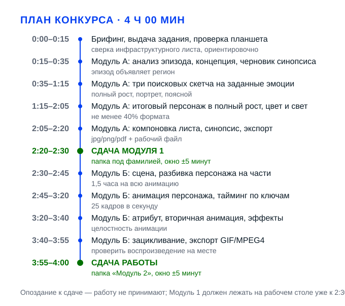
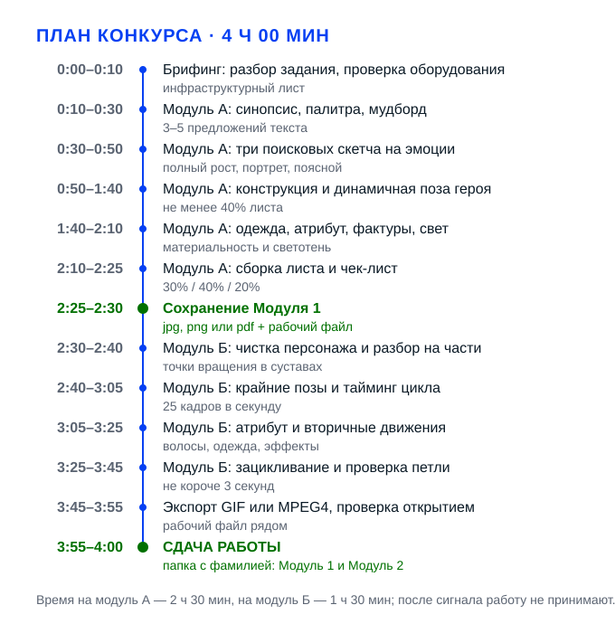
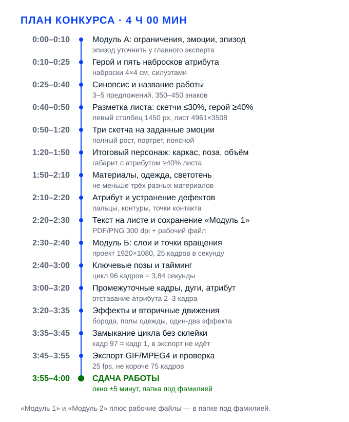

Дизайн персонажей/Анимация (Р)
Задания ниже — официальные файлы «Абилимпикс» (источник: abilympics-russia.ru), разложенные по категориям. Решения написаны по тексту задания, регламенту и критериям оценки; в них указано, что именно проверяет эксперт.
Школьник
14–16 лет, базовый уровень заданияВыдержка из официального конкурсного задания: страницы, относящиеся к категории «Школьник» (стр. 7–8 источника).
Пошаговое решение
Задание категории «Школьники» — ремейк персонажа из эпизода «Приключений Мурзилки»: сохранить узнаваемые черты героя, но обновить внешний вид, характер и роль так, чтобы он подошёл новому анимационному фильму, добавить не менее одного уникального атрибута в стилистике эпизода и ни в одном элементе не использовать шаблоны. Модуль А длится 2,5 часа: три поисковых скетча на заданные эмоции в левой части листа (не более 30% ширины), итоговый персонаж в полный рост не менее 40% формата на однотонном фоне и синопсис не длиннее пяти предложений, занимающий не более 20% листа. Модуль Б — 1,5 часа на зацикленную 2D-анимацию персонажа с атрибутом при 25 кадрах в секунду и длительностью от 3 секунд. Всего 4 часа и 100 баллов: 65 за дизайн-проект и 35 за анимацию. Ниже — пять задач и сорок три шага, от разбора эпизода до экспорта файлов.

Задача 1. Разобрать эпизод и собрать концепцию ремейкаМодуль А · 8 баллов
Первый час модуля А уходит не на рисование, а на решение: кого именно вы обновляете, что в нём остаётся от «Приключений Мурзилки» и что меняется под сегодняшних детей. Восемь баллов этой задачи разложены так: оригинальность замысла — 3 балла (оценочный критерий, его ставит комиссия), соответствие дизайн-проекта заданной стилистике — 2 балла, соответствие поставленной задаче — 3 балла. Ни один из них не берётся рисованием: если концепция не сформулирована словами, дальше придётся дорисовывать на ходу и терять время в самом дорогом месте — в середине модуля.
Действие 1.1. Разобрать исходный эпизод по косточкам
Шаг 1.1.1
Первым делом выписываем на черновой лист всё, что делает персонажа узнаваемым: цвет и фактуру (у Мурзилки это жёлтый пушистый комок шерсти), жёсткие элементы силуэта (красный берет со хвостиком, длинный шарф, круглые очки), пропорции (крупная голова примерно в треть роста, короткие лапы, толстые ступни), а также обязательные предметы — фотоаппарат и блокнот репортёра. Пишем столбиком, но каждый пункт формулируем как признак, который можно нарисовать: не «добрый», а «уголки рта подняты на 15 градусов, брови домиком».
Список узнаваемых черт — это ваш договор с экспертом: критерий «соответствие дизайн-проекта заданной стилистике» стоит 2 балла и проверяется именно по таким признакам, а не по общему впечатлению «похоже на советский мультфильм». Кроме того, без этого списка невозможно выполнить главное требование задания — сохранить узнаваемость и одновременно обновить персонажа; обновлять можно только то, что вы предварительно назвали.
Проверьте список так: закройте глаза и попросите соседа прочитать пункты — по ним должен узнаваться именно этот персонаж, а не любой жёлтый зверёк. В списке должно быть не меньше пяти позиций, из которых минимум две относятся к силуэту и минимум одна — к обязательному предмету в руках.
Самая частая ошибка — записать «жёлтый, пушистый, с беретом» и остановиться: этого хватает на узнавание, но не хватает на ремейк, потому что непонятно, что именно нельзя менять. Вторая ошибка — начать перерисовывать кадр из эпизода один в один, тогда originality-критерий на 3 балла обнуляется, а работа превращается в копию без обновления.
Эксперт подходит к рабочему месту в первые 20 минут и слушает, как участник объясняет, что он сохраняет, а что меняет. Ответ «просто современный Мурзилка» читается как отсутствие замысла.
Шаг 1.1.2
Разбираем сам эпизод: где происходит действие, в каком времени, какая задача стоит перед персонажем и чем он её решает. Достаточно пяти-шести строк: место, конфликт, помощники, предмет, через который решается конфликт. Если эпизод объявлен регионом и вы его не помните дословно, работайте по тому, что успели увидеть на брифинге, и фиксируйте это как допущение — но не выдумывайте сюжет, которого в задании нет.
Эпизод задаёт стилистику: палитру фонов, характер линий, темп. Критерий «соответствие дизайн-проекта заданной стилистике» (2 балла) и «оригинальность замысла» (3 балла) работают вместе: замысел должен быть новым, но вырастать из эпизода, а не из случайной картинки из интернета. Понимание конфликта нужно и в модуле Б — движение персонажа обязано соответствовать образу, а не быть абстрактной анимацией «машет рукой».
Проверочный вопрос: можете ли вы в одном предложении сказать, о чём эпизод и что в нём делает герой. Если формулировка рассыпается на «ну, там он летал и фотографировал», значит разбор не сделан и концепция поплывёт.
Ошибка — потратить на пересмотр и воспоминания больше двадцати минут. Второй промах — построить концепцию на второстепенном персонаже, не проверив, что он вообще есть в заданном эпизоде: эксперт сверяет работу с заданием, и подмена героя стоит сразу двух критериев.
Эксперт оценивает понимание задания по первым же эскизам: если на них нет ни места действия, ни предмета из эпизода, разбор считается невыполненным. Он также слушает, как участник называет героев эпизода, — точность здесь работает на доверие к замыслу.
Шаг 1.1.3
Фиксируем палитру эпизода: вытаскиваем из кадра пять-шесть цветов и записываем их значения в HEX прямо на черновом листе — например, тёплый жёлтый #F2C230 для шерсти, кирпичный #B23A2E для берета, тёмно-синий #1F3A5F для теней и светло-кремовый #F2EDE4 для фона. Эти пятна станут основой цветовой темы итогового листа, поэтому их лучше держать перед глазами весь модуль, а не искать заново на третьем часу.
Критерий «цветовая тема (стиль)» стоит 3 балла, «цветовая гармония» — ещё 2, и оба проверяются по листу целиком: скетчи, персонаж и атрибут должны быть в одной гамме. Готовая палитра из шести значений экономит время на заливке и защищает от типичной школьной ошибки — раскрасить персонажа «красиво», а фон оставить случайным.
Проверьте гармонию просто: уменьшите лист до размера спичечного коробка на экране. Если пятна читаются как одно целое и ни одно не выпадает кислотным акцентом, палитра собрана верно. Второй тест — перевести изображение в оттенки серого: персонаж не должен сливаться с фоном по светлоте.
Ошибка — взять больше восьми цветов: лист начинает рябить, и «цветовая гармония» теряет балл. Вторая — оставить чисто-белый фон, хотя задание требует однотонный, но не белый: на белом не видно светлых участков пуха и работа выглядит незаконченной.
Эксперт смотрит на итоговый лист с расстояния двух метров: сначала читается цветовое пятно, потом детали, поэтому палитра оценивается раньше прорисовки.
Действие 1.2. Сформулировать, что именно обновляется
Шаг 1.2.1
Придумываем обновление по четырём осям сразу и записываем по одной строке на каждую: время действия (сегодняшний день, школьная медиастудия), роль (не просто репортёр, а автор коротких видео о школьных событиях), характер (любопытный, но уже не наивный — задаёт вопросы взрослым и снимает на ходу), внешний вид (та же жёлтая шерсть и берет, но вместо фотоаппарата — компактный гаджет). Четыре строки — это и есть концепция, из которой потом вырастет синопсис на 3–5 предложений.
Задание прямо требует «сохранить узнаваемые черты, но обновить внешний вид, характер и роль в сюжете для детей нашего времени», и именно это проверяет критерий «соответствие поставленной задаче» на 3 балла. Разложение на четыре оси не даёт скатиться в косметику: перекрасить шарф в другой цвет — не ремейк, а вот смена роли меняет и позу, и атрибут, и движение в модуле Б.
Проверьте себя вопросом: если убрать из описания имя персонажа, останется ли понятно, что он из «Приключений Мурзилки»? И второй вопрос: если показать описание однокласснику, поверит ли он, что такой герой может быть в мультфильме 2026 года? Оба ответа должны быть утвердительными.
Типичная ошибка — обновить только одежду и оставить характер из 1960-х: получается персонаж в кроссовках, который говорит как пионер. Вторая — уйти в другую вселенную (робот, супергерой в плаще), и тогда теряется связь с эпизодом, а с ней 2 балла за стилистику и часть баллов за соответствие задаче.
Эксперт задаёт вопрос «чем ваш герой отличается от героя эпизода и что у них общего» — на него нужен ответ в два предложения, без запинок. Он же смотрит, названы ли все четыре оси обновления вслух: время, роль, характер и внешний вид, — потому что по ним потом проверяется вся работа.
Шаг 1.2.2
Определяем целевую аудиторию и через неё — пластику: для детей 8–12 лет герой должен читаться по силуэту и двигаться крупно. Записываем три пластических признака: рост около пяти «голов», наклон корпуса вперёд на 10–15 градусов (готовность бежать за событием), крупные кисти и ступни, потому что мелкие конечности не читаются в анимации 25 кадров в секунду. Эти признаки потом повторяются в скетчах и в итоговом персонаже без изменений.
Пластическое решение стоит 2 балла, динамичная и выразительная поза — ещё 2, а целостность анимации в модуле Б — целых 4 балла. Всё это растёт из одного решения о пластике: если в скетчах персонаж круглый и мягкий, а в итоговом листе внезапно угловатый, эксперт фиксирует разрыв и снижает баллы за целостность работы.
Сравните три будущих изображения по силуэту: залейте их одним цветом и посмотрите, узнаётся ли персонаж в каждом. Если в заливке силуэты разные, пластика не закреплена — перерисуйте мелкие части до одинаковой формы.
Ошибка — нарисовать в скетчах одного персонажа, а в итоговом листе другого: другая форма головы, другие пропорции. Эксперт сравнивает листы попарно, и это сразу минус по критериям «пластическое решение» и «целостность».
Эксперт прикладывает скетч и итогового персонажа рядом и смотрит на совпадение силуэта головы, плеч и обуви. Он же сверяет количество «голов» в росте: если в эскизе их пять, а в итоговом листе шесть с половиной, он фиксирует разрыв и снижает баллы за пластику и целостность работы.
Шаг 1.2.3
Пишем черновик синопсиса сразу, до рисования: три-пять предложений, в которых есть завязка (герой получает задание снять школьный конкурс талантов), осложнение (съёмка срывается — упал свет, потерялся звук), решение через атрибут (дрон поднимает камеру под потолок спортзала), и финальная реплика героя. Каждое предложение должно содержать действие, а не описание внешности: описание уже есть на листе, дублировать его текстом нельзя.
Критерии «короткий синопсис соответствует заданию» (2 балла), «краткость и целостность концепции» (1 балл) и «наименование работы в соответствии с темой» (1 балл) дают четыре балла, которые берутся текстом за десять минут. Кроме того, синопсис дисциплинирует рисунок: у вас появляется конкретная сцена, а значит, понятная поза и понятный жест, что напрямую влияет на 2 балла за динамичную позу.
Прочитайте черновик вслух: должно быть ровно 3–5 предложений, в каждом — глагол действия, и ни одного слова вроде «необычный», «удивительный», «современный» без конкретики. Проверьте по часам: чтение вслух занимает 20–25 секунд, если дольше — сокращайте.
Ошибка — написать восемь предложений «чтобы всё уместить»: синопсис обязан быть не длиннее пяти предложений, и лишний текст либо не влезет в отведённые 20% листа, либо уедет мелким кеглем, который эксперт не станет читать. Вторая — пересказать эпизод вместо собственной истории.
Эксперт читает синопсис первым, до разглядывания рисунка, и сверяет его с изображением: герой на листе должен быть в той сцене, которая описана. Он отдельно считает предложения и отмечает, есть ли в тексте действие, — описание внешности вместо истории снижает балл за концепцию.
Действие 1.3. Придумать уникальный атрибут в стилистике эпизода
Шаг 1.3.1
Придумываем атрибут так, чтобы он был одновременно гаджетом и вещью из мира Мурзилки: например, складной дрон «Пчёлка» в корпусе старого фотоаппарата с гармошкой-мехом, с боку у него латунная ручка-заводилка и красный шарф-ремень. Формулируем три части: корпус (металл, потёртая краска), механизм (гармошка, винты, маленькие пропеллеры), крепление (ремень через плечо, лапой держит ручку). Атрибут должен читаться одной фразой и занимать в композиции не меньше ладони персонажа.
«Не менее одного уникального атрибута в стилистике заданного мультфильма» — это прямое требование задания, за него дают 2 балла («уникальный атрибут соответствует теме»), ещё 3 балла за детализацию атрибута, 2 за отсутствие дефектов и 2 за целостность взаимодействия персонажа с атрибутом. Итого до девяти баллов висит на одном предмете, поэтому придумывать его на ходу, за полчаса до сдачи, — худшая из возможных стратегий.
Проверьте атрибут тремя вопросами: можно ли его узнать по силуэту без цвета, понятно ли из формы, как им пользуются, и есть ли в нём деталь из эпохи эпизода. Если хотя бы на один вопрос ответ «нет», форма сырая — добавьте один характерный элемент, например круглый объектив с латунным кольцом.
Ошибка — взять готовый предмет (обычный смартфон, обычный дрон с полки магазина): шаблонность прямо запрещена заданием, и в критерии «оригинальность замысла» такой атрибут снимает баллы. Вторая — сделать атрибут настолько мелким, что на формате он превращается в пятно и его невозможно оценить.
Эксперт ищет атрибут глазами сразу после персонажа и отмечает, взаимодействует ли герой с ним физически: держит, нажимает, подбрасывает — а не просто стоит рядом.
Шаг 1.3.2
Раскладываем концепцию в короткий план действий на весь модуль А: на листе бумаги пишем время и что делаем — 0:15 концепция, 0:35 скетчи, 1:15 итоговый персонаж, 2:05 компоновка и синопсис, 2:20 сдача. Напротив каждого пункта оставляем место для галочки, а сам план крепим на краю стола, чтобы он был виден без поиска, и сверяемся с ним каждые 20 минут, заранее решая, что сокращать, если отстали.
Модуль А длится 2,5 часа, и провал почти всегда происходит не из-за неумения рисовать, а из-за того, что первые сорок минут уходят на «подумать». План с жёсткими окнами защищает главные баллы: за компоновку (2), за формат, путь и наименование файла (по 1) и за сдачу вовремя. Работа, не сохранённая в папку под фамилией к 2:30, не оценивается вообще, сколько бы баллов ни было нарисовано.
Проверьте план на реальность: сравните его с часами на экране и с собственным темпом на разминке — сколько минут у вас уходит на один скетч. Если на один эскиз нужно 25 минут, три скетча никак не влезают в 40 минут, и план надо менять сразу, а не в 1:20.
Ошибка — планировать «с запасом на вдохновение»: запас всегда съедается, и к 2:20 не остаётся времени на экспорт. Вторая — держать план в голове: под давлением времени он забывается первым, и участник зависает на раскраске одного эскиза.
Эксперт отмечает организованность: наличие плана и соблюдение промежуточных сроков видно по тому, что к 1:15 у участника уже есть все три эскиза. Он же смотрит, сколько времени ушло на концепцию: если к 0:35 лист пуст, дальше работа идёт в спешке.
Задача 2. Три поисковых скетча на заданные эмоцииМодуль А · 11 баллов
Скетчи — не уменьшенная копия итогового персонажа, а поиск: в них видно, как вы ищете форму, и как персонаж держит эмоцию. Одиннадцать баллов складываются из наличия не менее трёх эскизов (3 балла), соответствия заданным эмоциям (3 балла: по баллу за каждую эмоцию), выразительности линий (2 балла), выразительности самих эмоций (2 балла) и грамотного расположения в левой части листа — не более 30% ширины формата (1 балл). Эскизы обязаны быть на одного и того же персонажа и в трёх разных типах: полный рост, портрет и поясной.
Действие 2.1. Подготовить лист и левую колонку
Шаг 2.1.1
Создаём файл 4961×3508 пикселей (это А3 при 300 dpi), горизонтальная ориентация, цветовой профиль sRGB, разрешение 300 dpi. Делим лист направляющими: левая колонка шириной 1480 пикселей — это ровно 29,8% ширины, то есть внутри лимита «не более 30%», остальные 3481 пиксель отдаём под итогового персонажа. Внутри левой колонки ставим две горизонтальные направляющие, деля её на три равные полосы по 1050 пикселей с отступами по 40, и подписываем полосы словами «полный рост», «портрет», «поясной».
Критерий «грамотное расположение скетчей в соответствии с заданием» стоит 1 балл, но он работает как входной: если скетчи разбросаны по всему листу, комиссии трудно оценить и композицию (2 балла), и итогового персонажа (не менее 40% формата). Направляющие, поставленные в первые минуты, дальше экономят время: вы рисуете в готовые рамки, а не подгоняете рисунок под лист в конце.
Проверьте линейкой на экране: левая колонка занимает не больше трети ширины холста, три полосы равны по высоте, нижняя не заезжает на поле для синопсиса. Сохраните этот файл сразу под рабочим именем, например murzilka_remake_rabota.psd — рабочий файл обязателен к сдаче вместе с jpg.
Ошибка — рисовать «на свободном листе» и делить его потом: скетчи получаются разного размера, колонка расползается на 40% ширины, и балл за расположение теряется. Вторая — создать файл 1920×1080: на таком холсте портрет и поясной эскизы выходят мелкими, и выразительность линий визуально пропадает.
Эксперт сразу смотрит на пропорции листа: три эскиза слева, герой справа — это ожидаемая схема, любое отклонение фиксируется в протоколе. Он же проверяет по линейке, что колонка не выходит за треть ширины: при 1480 из 4961 пикселей у вас остаётся запас почти в 10 пикселей на погрешность линии.
Шаг 2.1.2
Настраиваем кисти заранее: основная линия — жёсткая круглая кисть 14–18 пикселей с чувствительностью к нажиму, вторая — мягкая кисть 40 пикселей с прозрачностью 30% для масс, третья — тонкая 5–6 пикселей для деталей лица. Отдельный слой для каждой полосы, сверху слой с подписями эмоций: «радость», «удивление», «испуг». Цвет линии — тёмно-синий #1F3A5F, а не чёрный: он мягче ложится на кремовый фон и не спорит с жёлтым цветом персонажа.
Выразительность линий — 2 балла, и они берутся не «старанием», а стабильным инструментом: одна и та же кисть на всех трёх эскизах даёт единство, а разные кисти превращают лист в три несвязанных рисунка. Слои по полосам нужны и для скорости правок: на четвёртом часу вы сможете поправить один эскиз, не задев остальные.
Проверьте на пустом мазке: линия должна идти от тонкой к толстой в зависимости от нажима и не «рваться» на медленном движении. Пройдитесь по краю листа — если мазок дрожит, включите сглаживание (stabilizer) на 30–40% и уменьшите кисть на 2–3 пикселя.
Ошибка — рисовать скетчи мягкой аэрозольной кистью: линии становятся ватными, и критерий выразительности линий честно получает 0. Вторая — работать на одном слое со всем листом, после чего случайное движение смахивает половину эскиза.
Эксперт смотрит именно на линию: живая, с утолщениями и сухими окончаниями, или однообразная «проволока» одинаковой толщины. Он сравнивает толщину контура на трёх эскизах: если на портрете линия в два раза толще, чем на фигуре в полный рост, единство исполнения считается нарушенным.
Действие 2.2. Эскиз в полный рост: радость
Шаг 2.2.1
Ставим фигуру в полный рост в первой полосе: высота 900 пикселей, центр по горизонтали полосы, ступни на 60 пикселей выше нижней границы, чтобы осталось место для подписи. Строим восемью линиями: ось симметрии, линия плеч под наклоном 12 градусов, линия таза под обратным наклоном 8 градусов, овал головы в треть роста, затем две линии ног и две линии рук. Поза для радости — прыжок с опорой на одну ногу, вторая согнута и отведена назад, обе руки вверх, корпус развёрнут на три четверти к зрителю.
Эскиз в полный рост прямо назван в задании как отдельный тип, и только он показывает пропорции и пластику целиком — критерии «пропорции (анатомия) и преувеличение» (2 балла) и «пластическое решение» (2 балла) берутся именно здесь. Наклон плеч и таза в противоположные стороны даёт ту самую динамику, за которую дают 2 балла за позу: фигура без контрапоста читается как наклейка.
Отойдите на два шага от экрана и прищурьтесь: в силуэте должны читаться поднятые руки, согнутая нога и оттопыренный шарф. Если силуэт похож на стоящего человека с поднятыми руками, но без прыжка — поднимите линию таза на 40 пикселей и отведённую ногу поставьте под углом 45 градусов к корпусу.
Ошибка — рисовать фигуру строго фронтально и симметрично: она выглядит как схема и теряет динамику. Вторая — «удлинить» персонажа до семи голов: у Мурзилки узнаваемая пропорция примерно 1:4,5–1:5, и на семи головах персонаж перестаёт быть собой, а критерий пропорций получает 1 вместо 2.
Эксперт проверяет пропорции по сетке: количество голов в росте и соотношение кисти к предплечью. Он смотрит на эскиз, а потом на итоговый лист — пропорции должны совпасть.
Шаг 2.2.2
Прорисовываем радость на лице и в теле: внешние уголки бровей подняты, внутренние опущены, глаза сужены до двух дуг с бликом в верхней трети, рот открыт широкой дугой — верхняя губа приподнята, виден язык, щёки собраны в два полукруга под глазами. В теле радость читается через распахнутые плечи, разведённые пальцы и поднятый подбородок на 10 градусов. Уши и хвост шарфа отбрасываем назад, как от движения вверх.
Соответствие заданным эмоциям — 3 балла, по баллу за каждую, и «выразительность эмоций скетчей» — ещё 2. Балл за эмоцию ставится не за подпись «радость», а за то, что лицо читается без подписи: проверяющий закрывает надпись и угадывает состояние. Именно поэтому эмоцию нужно вести через всё тело, а не только через рот.
Закройте подпись ладонью и посмотрите на эскиз три секунды. Если состояние угадывается сразу — сделано; если нужно всматриваться, увеличьте амплитуду: поднимите внешние концы бровей на 20 пикселей, раскройте рот на треть больше, добавьте два-три луча-штриха вокруг макушки.
Ошибка — нарисовать одинаковые глаза во всех трёх эмоциях и менять только рот: тогда все три эскиза читаются как один персонаж с разной формой рта, и «соответствие заданным эмоциям» падает до 1 балла из 3. Вторая — сделать радость «вежливой улыбкой»: скетч теряет выразительность, и минус 2 балла.
Эксперт сверяет три эскиза между собой: меняются ли брови, форма глаз, наклон головы. Если меняется только линия рта, эмоции считаются невыразительными.
Шаг 2.2.3
Обводим эскиз по построению: сначала уточняем контур мягкой линией, потом поверх кладём уверенную линию толщиной 14 пикселей с утолщением на теневой стороне каждой формы. Линии построения не стираем полностью — оставляем их на 15% прозрачности, чтобы было видно процесс поиска. Штриховку не делаем: скетч остаётся линейным, цвет — только лёгкая заливка 20% на шерсти, чтобы читалась порода персонажа.
Критерий «выразительность линий скетчей» — 2 балла, и он требует именно линии разной толщины: контур снаружи 14–18 пикселей, внутренние детали 6–8. Сохранённые линии построения — не грязь, а доказательство поисковой работы: комиссия видит, что эскиз построен, а не срисован с готовой картинки.
Проверьте лист на 25% масштаба: линии должны читаться, а не сливаться в серое пятно. Если на уменьшении контур рассыпается, добавьте толщины на внешних границах, уберите лишние внутренние штрихи и проверьте результат ещё раз.
Ошибка — залить эскиз полным цветом и тенями, как итоговую работу: тогда скетч перестаёт быть поисковым и спорит с персонажем справа, а композиция листа теряет акцент. Вторая — обвести эскиз «по нескольку раз», получая мохнатую линию из пяти параллельных штрихов.
Эксперт различает поисковый скетч и уменьшенную копию по наличию построения и по количеству «лишних» вариантов формы. Он смотрит на контур через лупу: живая линия имеет разную толщину в одном штрихе, а обводка по трафарету всегда одинаковой ширины.
Действие 2.3. Портрет: удивление, и поясной эскиз: испуг
Шаг 2.3.1
Во второй полосе рисуем портрет — голову и плечи, высота головы 620 пикселей от подбородка до макушки, плечи обрезаны нижней границей полосы. Строим крестовину: ось лица отклонена на 15 градусов, линия глаз на середине высоты головы, линия носа на четверть ниже, линия рта ещё на четверть. Для удивления: брови высоко подняты и образуют дуги, глаза раскрыты — видна радужка целиком и белок внизу, зрачки чуть сведены к переносице, рот открыт вертикальным овалом, подбородок оттянут вниз.
Портрет назван в задании отдельным типом эскиза, и он единственный показывает прорисовку мимики — за неё в модуле А есть отдельные 1 балл («прорисовка мимики лица») и 1 балл за настроение. Плюс портрет отвечает за «материальность» лица: на крупной голове видно, из чего сделана шерсть и как лежит блик на носу, а это уже часть 3 баллов за материалы.
Проверьте конструкцию: линия глаз должна делить голову пополам, расстояние между глазами равняться ширине одного глаза, а уши крепиться на линии бровей. Если при перевороте изображения по горизонтали лицо «смотрит косо» — конструкция поехала, и её надо перестроить, а не подправлять.
Ошибка — рисовать портрет «с нуля», не связав его с эскизом в полный рост: получается другой персонаж с другой формой головы. Вторая — сделать удивление только через открытый рот, оставив брови спокойными: без поднятых бровей читается зевота, а не удивление, и балл за эмоцию теряется.
Эксперт сопоставляет форму головы на портрете и на эскизе в полный рост: контур щёк, уши и линия шерсти на лбу должны совпадать. Он также проверяет посадку глаз по линии, делящей голову пополам, — сдвинутые выше или ниже глаза выдают ошибку построения даже при удачной мимике.
Шаг 2.3.2
В третьей полосе рисуем поясной эскиз: от макушки до середины бедра, высота 950 пикселей, фигура развёрнута в три четверти, корпус отклонён назад на 12 градусов, плечи подняты к ушам, руки прижаты к груди и держат атрибут как щит. Для испуга: брови сведены и подняты внутренними концами, глаза широко раскрыты с видимым белком сверху, зрачки смещены в сторону опасности, рот приоткрыт и растянут горизонтально, на лбу три короткие морщины, шерсть на затылке приподнята отдельными пучками.
Поясной эскиз закрывает средний план: на нём видно, как персонаж держит атрибут — а целостность взаимодействия с атрибутом стоит 2 балла и проверяется именно на таких кадрах. Кроме того, третья эмоция добавляет балл в критерий соответствия эмоциям (3 балла за три разные эмоции) и работает на выразительность линий: в поясном больше динамичных складок и пучков шерсти, чем в портрете.
Проверьте три вещи: кисти рук касаются атрибута, а не висят рядом; линия плеч не параллельна нижней границе полосы; белок глаза виден и сверху, и снизу. Если руки «не достают» до предмета, сдвиньте атрибут на 30 пикселей к корпусу и перерисуйте предплечья.
Ошибка — сделать все три эмоции «примерно одинаковыми по силе»: испуг должен быть самым контрастным по силуэту, иначе лист выглядит как три наброска одного состояния. Вторая — спрятать руки за спину, чтобы не рисовать кисти: тогда взаимодействие с атрибутом не читается и 2 балла уходят.
Эксперт ищет на поясном эскизе контакт руки и предмета: пальцы должны обхватывать, а не парить над поверхностью. Он же оценивает, читается ли испуг по силуэту без лица, — приподнятые плечи и отклонённый корпус должны быть видны на уменьшенном изображении.
Шаг 2.3.3
Сводим три эскиза в колонку и выравниваем: одинаковая толщина контура, один цвет линии, подписи эмоций одним кеглем 48 пикселей под каждым эскизом, отступ от рисунка 20 пикселей. Проверяем, что колонка не выходит за направляющую 1480 пикселей, а между полосами остались чистые промежутки по 40 пикселей. Затем уменьшаем весь лист до 25% и смотрим на колонку как на единый блок.
Грамотное расположение — 1 балл, но от него зависит восприятие остальных: колонка, выровненная по одной оси, читается как серия поисков, а разбросанные эскизы — как черновики, случайно попавшие на лист. Единый кегль подписей и единая линия — это ещё и «целостность концепции», которую комиссия отмечает при оценке композиции (2 балла).
Проверьте линейкой в редакторе: левые края всех трёх эскизов на одной вертикали, подписи на одинаковом расстоянии от рисунка, правый край колонки не заходит за 1480 пикселей. Включите сетку и посмотрите на просветы — они должны быть равными.
Ошибка — подписывать эмоции разными шрифтами и разными кеглями: лист сразу выглядит небрежным, и это переносится на оценку всей композиции. Вторая — оставить эскизы разного размера: портрет крупнее полного роста читается как главный элемент и путает иерархию листа.
Эксперт смотрит на лист целиком и отмечает, читается ли колонка эскизов как отдельный блок, не спорящий с фигурой персонажа. Он проверяет выравнивание по левому краю и одинаковые просветы: сбитая сетка подписей сразу снижает впечатление от композиции.
Задача 3. Итоговый персонаж в полный рост с атрибутомМодуль А · 37 баллов
Вторая половина модуля А — сама работа, ради которой всё затевалось. Здесь набирается основная масса баллов: материальность (3), детализация одежды (2), пропорции (2), детализация атрибута (3), свето-теневая проработка (3), положение теней (2), цветовая тема (3), цветовая гармония (2), пластика (2), динамичная поза (2), отсутствие дефектов лица и тела (3), отсутствие дефектов атрибута (2), уникальность атрибута (2), целостность с атрибутом (2), мимика (1), настроение (1), соответствие настроения эскизам (1) и полный рост (1). Персонаж должен занимать не менее 40% листа и стоять в динамичной позе.
Действие 3.1. Построить фигуру и поставить позу
Шаг 3.1.1
На правой части листа, в поле шириной 3481 пиксель, ставим габаритный прямоугольник персонажа: ширина 1400 пикселей, высота 2500 пикселей, низ на 250 пикселей выше нижнего края листа, центр по горизонтали правого поля сдвинут влево на 150, чтобы справа осталось место для синопсиса. 2500 от 3508 — это 71% высоты, то есть с большим запасом к требованию «не менее 40%». Внутри прямоугольника строим скелет: таз, грудная клетка двумя массами, голова, четыре конечности, каждая двумя отрезками.
«Итоговый персонаж выполнен в полный рост» — 1 балл, и он снимается моментально, если персонаж обрезан по колено или уменьшен до трети листа. Крупная фигура нужна и для оценки деталей: 3 балла за материальность и 3 за детализацию атрибута физически невозможно поставить на фигуре в 900 пикселей — детали просто не видны.
Измерьте на экране рамкой: высота фигуры в пикселях делится на 3508 и умножается на 100 — результат должен быть не меньше 40, у вас получится около 71%. Проверьте, что ступни и макушка внутри холста и до края листа остаётся не меньше 200 пикселей свободного поля.
Ошибка — нарисовать персонажа «крупно, но чуть-чуть срезать ступни»: формально фигура уже не в полный рост, и балл теряется. Вторая — заполнить фигурой весь лист, не оставив места для синопсиса: текст придётся втискивать поверх рисунка, что убивает композицию.
Эксперт первым делом оценивает масштаб: фигура должна доминировать на листе, эскизы — подчиняться ей по массе. Он измеряет высоту фигуры по рамке и переводит её в проценты листа: при 2500 пикселях из 3508 получается около 71%, то есть требование в 40% выполнено с запасом.
Шаг 3.1.2
Ставим динамичную позу: вес на правой ноге, левая отставлена назад и согнута в колене на 25 градусов, таз развёрнут на 20 градусов к зрителю, грудная клетка — на 35, то есть корпус в лёгком скручивании. Левая рука поднята и держит атрибут на уровне глаз, правая отведена назад для равновесия. Голова повёрнута к атрибуту на 15 градусов, подбородок приподнят. Ось позвоночника — плавная S-кривая, а не прямая линия.
Динамичная выразительная поза — 2 балла, пластическое решение — 2, и оба критерия опираются на скручивание корпуса: именно оно отличает живой рисунок от манекена. Поза должна совпадать с настроением из эскизов (1 балл) и с будущей анимацией: если в модуле Б персонаж будет махать другой рукой, комиссия заметит расхождение образа.
Смотрите на силуэт в заливке одним цветом: должны читаться три точки — поднятая кисть с атрибутом, отставленная нога и поворот головы. Если силуэт похож на букву «Т», поставленный на попа, поза не поставлена: увеличьте скручивание таза до 25 градусов и согните опорную ногу.
Ошибка — «поза героя» с прямыми ногами и симметричными руками: она читается как трафарет и стоит минус по пластике. Вторая — скрутить корпус так сильно, что ломается анатомия: плечи уходят за линию таза, и критерий пропорций получает 1 из 2.
Эксперт оценивает позу по силуэту и по линии действия: куда направлено движение — вперёд, вверх, в сторону. Направление должно быть одно, а не три одновременно: если рука тянется вверх, а корпус отклоняется назад, он фиксирует несогласованность и снижает балл за пластику.
Шаг 3.1.3
Уточняем анатомию по контрольным точкам: голова укладывается в рост 4,8 раза, локоть на уровне пупка, кисть достаёт до середины бедра, колено на середине ноги, стопа равна высоте головы. Крупные массы — голова, кисти, ступни — увеличиваем на 10–15% против реалистичных: это и есть требуемое заданием преувеличение. Проверяем оси: плечи и таз в противоположных наклонах, линия взгляда совпадает с направлением головы, а не «мимо».
Пропорции (анатомия) и гипертрофированность отдельных элементов — 2 балла, причём критерий прямо оценивает преувеличение, а не реалистичность: у персонажа-игрушки крупная голова и большие кисти — норма, а вот «правильные» пропорции взрослого человека ломают образ. Контрольные точки нужны и для анимации: по ним потом строятся ключевые позы, и расхождение сразу даёт рывки.
Проверьте по сетке: наложите на фигуру горизонтальные линии через макушку, подбородок, соски, пупок, лобок, колени. Расстояния между ними должны быть кратны примерно половине головы. Отдельно проверьте кисть: её длина от запястья до кончика пальца равна высоте лица.
Ошибка — рисовать «на глаз», без осевых линий: одна рука оказывается длиннее другой, и это видно даже неспециалисту, а критерий дефектов лица и тела (3 балла) снижается. Вторая — уменьшить кисти до реалистичных: персонаж теряет выразительность жеста, и вместе с ней баллы за пластику.
Эксперт измеряет пропорции визуально по голове и по кисти — это самые заметные ориентиры, по ним он и ставит балл. Он отдельно проверяет преувеличение: крупные кисти и голова читаются как задумка, а вот разные по длине руки — уже дефект, за который снимают балл.
Действие 3.2. Локальный цвет и материалы
Шаг 3.2.1
Заливаем локальные цвета плоскими пятнами на отдельном слое под линией: шерсть — тёплый жёлтый #F2C230, берет — кирпичный #B23A2E, шарф — глубокий синий #1F3A5F, живот и морда — светло-кремовый #F7E6C4, обувь — коричневый #6B4A32. Заливку делаем инструментом «заливка с допуском» при допуске 20–30 единиц, чтобы не осталось белых щелей у линии, и сразу закрываем просветы в контуре кистью 8 пикселей.
Цветовая тема (стиль) — 3 балла, цветовая гармония — 2. Плоская заливка нужна как основа: только на ровном локальном цвете потом читаются тени и блики, а без него светотень превращается в грязь. Ровно пять-шесть цветов — это то количество, которое комиссия считает продуманной палитрой; больше десяти пятен даёт «рябь» и минус за гармонию.
Проверьте заливку на наличие дыр: включите выделение по цвету фона — если внутри контура остались белые пиксели, они проявятся при печати. Второй тест — оттенки серого: проверьте, что живот и морда светлее шерсти, а обувь темнее всего остального.
Ошибка — заливать сразу градиентами и «живописью»: пятна получаются грязными, и локальный цвет не читается. Вторая — взять кислотно-жёлтый вместо тёплого: он выжигает соседние цвета и ломает гармонию.
Эксперт смотрит на лист в масштабе 50%: цветовые пятна должны читаться как уравновешенные, без одного кричащего элемента. Он проверяет, нет ли белых щелей у линии и не «уехал» ли жёлтый в зелень: цвет шерсти — главный признак узнаваемости персонажа.
Шаг 3.2.2
Прорабатываем материалы: шерсть — короткими штрихами 6–10 пикселей по направлению роста волоса, от тёмного края к светлому, с отдельными торчащими ворсинками по контуру; берет — плотная шерстяная фактура с ворсом по кромке; шарф — гладкая ткань с мелкими складками; обувь — кожа с микротрещинами у сгиба и потёртостью на носке; атрибут — металл с латунным отливом и стекло объектива.
Материальность — 3 балла, и они ставятся по числу различаемых материалов: 0 — материалов нет, 1 — один, 2 — два, 3 — все объекты имеют свой материал. У вас на листе минимум пять разных поверхностей, значит цель — третья ступень. Именно материал, а не цвет, отличает профессиональный рисунок: шерсть и ткань могут быть одного оттенка, но никогда — одной фактуры.
Проверьте способом «на ощупь»: если бы вы могли потрогать изображение, шерсть была бы мягкой и тёплой, берет — колючим, объектив — холодным и гладким. Если два материала дают одинаковые ощущения, добавьте разницу в характере мазка и в контрасте блика.
Ошибка — проработать шерсть «расчёской» из одинаковых волосков по всему телу: это превращает персонажа в меховую щётку и убирает объём. Вторая — оставить обувь и атрибут плоскими пятнами: материалы есть, но не все, и балл падает с 3 до 2.
Эксперт смотрит на стык материалов: где заканчивается шерсть и начинается ткань берета, там должна быть разница в мазке, а не только в цвете. Он пересчитывает различимые поверхности: шерсть, ткань, кожа обуви, металл и стекло — четыре из пяти уже дают высшую ступень по этому критерию.
Шаг 3.2.3
Добавляем детализацию одежды: шов на берете, потёртости на кожаной манжете, три пуговицы на жилете с бликом на каждой, ворсинки по кромке шарфа, складки у подмышки и на сгибе локтя. Мелкие детали рисуем на отдельном слое кистью 4–5 пикселей, после чего слегка приглушаем их прозрачность до 85% — так они не «кричат» и не спорят с лицом персонажа на общем плане листа.
Детализация одежды: фактура, выделение мелких деталей — 2 балла, где 1 балл означает «есть некоторые недостатки», 2 — «все элементы детализированы». Мелкие детали также работают на материальность (3 балла) и на отсутствие дефектов (3 балла): именно недорисованные манжеты и пуговицы читаются как небрежность.
Проверьте масштаб деталей: пуговица должна быть не больше зрачка, шов — не толще линии ресниц. Посмотрите на лист в масштабе 100% и 25%: на обоих детали должны быть видны, но не превращаться в шум из одинаковых точек.
Ошибка — рассыпать по одежде десятки одинаковых точек «для фактуры»: вместо детализации получается грязь. Вторая — нарисовать детали чёрным цветом: они выглядят как дырки, а не как фактура, и портят цветовую гармонию.
Эксперт ищет на одежде три-четыре читаемые мелкие детали и оценивает, соответствуют ли они материалу вещи: потёртость должна быть там, где ткань действительно трётся, а пуговицы — на линии застёжки, а не произвольно по полю жилета.
Действие 3.3. Свет и тень: объём персонажа и атрибута
Шаг 3.3.1
Определяем источник света: верхний левый, за спиной зрителя, под углом примерно 45 градусов. Ставим на листе маленькую схему — кружок с тремя лучами в правом верхнем углу поля, чтобы и вы, и эксперт видели направление. Дальше все тени на персонаже, эскизах и атрибуте строятся от этого одного источника: собственные тени уходят вправо-вниз, падающие — вправо, длина падающей тени примерно равна высоте объекта.
Положение теней собственных и падающих указывает на расположение источников света — 2 балла, и свето-теневая проработка — ещё 3 балла, где по баллу за тени, описывающие форму, за блики на переломах и за согласованность с источником. Один источник на весь лист — самое дешёвое и самое заметное улучшение: разнобой в направлении теней видит даже неподготовленный зритель.
Проверьте себя линейкой: проведите от каждой падающей тени линию к источнику — все линии должны сходиться в одной точке. Отдельно проверьте лицо: тень от носа падает вправо-вниз, тень от берета ложится на лоб справа.
Ошибка — рисовать тени «по интуиции», каждая в свою сторону: лист рассыпается, и 2 балла за положение теней не ставятся. Вторая — сделать источник фронтальным: тени почти исчезают, объём пропадает, и персонаж выглядит наклейкой.
Эксперт проверяет согласованность теней на персонаже, атрибуте и аксессуарах — это один из самых быстрых способов отличить учебную работу от уверенной.
Шаг 3.3.2
Строим объём по каждой массе: на голове — тень в правой нижней четверти и рефлекс от плеча в левой нижней; на шерсти — мягкие тени по форме с размытием 15–25 пикселей; на металле атрибута — резкие тени с чёткой границей; на ткани — глубокие складки с уплотнением у шва. Собственную тень наносим кистью 60 пикселей с прозрачностью 25% в два-три прохода, каждый раз сужая область, — так граница получается мягкой и управляемой.
Свето-теневая проработка — 3 балла, причём первый балл даётся именно за тени, которые описывают форму объекта, а не за «затемнение сбоку». Объём нужен и для анимации: если персонаж в модуле Б будет собран из плоских частей, при движении он начнёт «мигать» пятнами, и целостность анимации (4 балла) пострадает.
Проверьте на копии: переведите изображение в чёрно-белое и уменьшите контраст — форма должна читаться без цвета. Если голова выглядит плоским кругом, добавьте полутень по нижней правой кромке шириной в четверть диаметра.
Ошибка — залить тень одним пятном с резкой границей по всему телу: получается «вырезанный» вид. Вторая — затемнить всё правой стороной, включая фон: тень на фоне должна быть только падающая, а собственная тень фона не существует.
Эксперт смотрит, описана ли тенью круглая форма головы и цилиндр руки — по этим двум местам видно, понимает ли участник объём. Он проверяет и мягкость границы: на шерсти тень размыта, а на металле атрибута резкая, иначе материалы не различаются.
Шаг 3.3.3
Ставим блики и рефлексы: на переломах формы с освещённой стороны — на макушке, на верхней губе, на носу, на костяшках кисти, на латунном кольце объектива. Блик рисуем белым с прозрачностью 70–90%, формой повторяя поверхность: на шаре — точкой или дугой, на металле — длинной полосой, на стекле — коротким штрихом с двумя спутниками. Рефлекс делаем цветом отражённого окружения: на шерсти снизу — тёплый кремовый, на металле — холодный голубоватый.
Блики на переломах формы с освещённой стороны — отдельный балл внутри трёх за светотень, и рефлексы работают на материальность (3 балла): именно они отличают стекло от металла и шерсть от ткани. Блик, поставленный не по форме, читается как случайное белое пятно и снижает оценку дефектов атрибута (2 балла).
Проверьте блики на уменьшении до 25%: они должны давать ощущение влажного, живого материала, а не белых клякс. Если блик «висит в воздухе» мимо перелома формы — сотрите и переставьте на 10–15 пикселей выше по кривой.
Ошибка — поставить блики на все поверхности одинаковой яркости: тогда металл, стекло и шерсть сравниваются, и материалы перестают различаться. Вторая — сделать блик слишком большим, так, что он спорит с лицом.
Эксперт ищет блик на объективе и на металле — это маркер, что материалы проработаны осознанно, а не залиты одним цветом. Он смотрит, лежит ли блик на переломе формы: блик, поставленный в середину плоскости, читается как случайное белое пятно.
Действие 3.4. Атрибут, мимика и чистовой контроль
Шаг 3.4.1
Прорисовываем атрибут целиком: корпус-фотоаппарат с гармошкой, четыре складки меха толщиной 6 пикселей каждая, латунное кольцо с восемью нарезами, стекло объектива с двумя рефлексами, два маленьких пропеллера в задней части, красный шарф-ремень, перекинутый через плечо, и лапой на ручке-заводке. Габарит атрибута — примерно 600×450 пикселей, то есть крупнее головы: на таком размере видно каждую деталь, и она честно оценивается по трём ступеням детализации.
Детализация атрибута — 3 балла, отсутствие дефектов атрибута — 2, уникальность — 2, целостность взаимодействия с персонажем — 2. Девять баллов на одном предмете: это самая плотная концентрация оценки на листе, и именно атрибут отличает ремейк от просто перерисованного персонажа. Мелкие нарезы на кольце и складки гармошки — то, что переводит работу с «минимальной детализации» на «качественную».
Проверьте атрибут на 100% масштабе: не менее четырёх читаемых мелких деталей, ни одной «двойной» линии, ни одного незалитого пикселя. Проверьте контакт руки: пальцы должны перекрывать ручку на 30–50% её толщины, иначе рука парит.
Ошибка — нарисовать атрибут «в общем виде», без нарезов и складок: балл за детализацию падает до 1–2. Вторая — поставить атрибут рядом с персонажем, но не в руку: целостность взаимодействия (2 балла) не ставится, а композиция выглядит как два отдельных рисунка.
Эксперт разглядывает атрибут вплотную и проверяет, есть ли в нём следы эпохи эпизода — латунь, гармошка, тканевый ремень. Это и есть балл за уникальность.
Шаг 3.4.2
Доводим мимику итогового персонажа до настроения из эскизов: берём за основу эмоцию радости из первого скетча — уголки рта вверх, щёки приподняты, глаза с бликом, брови на разной высоте (одна выше — от любопытства). Проверяем, что мимика читается на крупной голове: зрачок в 22 пикселя, радужка в 40, ресницы отдельными штрихами, морщинка у глаза одна. Уши и шерсть на лбу поддерживают настроение: уши чуть приподняты, пучок шерсти между ними торчит вверх.
Прорисовка мимики лица — 1 балл, наличие настроения — 1, соответствие настроения одному из заданных в скетчах — 1. Три балла кажутся мелкими, но они работают как переключатель восприятия: если лицо пустое, весь лист читается как эскиз одежды, а не как персонаж. Соответствие настроения скетчам дополнительно подтверждает, что работа целостная.
Проверьте «тест на палец»: закройте ладонью всё, кроме лица, и посмотрите три секунды — настроение должно читаться. Затем проверьте согласованность: уши, брови и линия рта должны говорить об одном состоянии, а не о трёх разных.
Ошибка — нарисовать красивое, но нейтральное лицо «чтобы не испортить»: настроения нет, и 2 из 3 баллов теряются. Вторая — сделать мимику другого состояния, чем в эскизах: за это снимается балл за соответствие настроения.
Эксперт сравнивает лицо итогового персонажа с лицами на трёх эскизах и ищет одно из заданных состояний. Он проверяет мимику через лупу: радужка, ресницы и морщинка у глаза должны быть прорисованы, иначе балл за прорисовку мимики не ставится.
Шаг 3.4.3
Проводим чистку перед сдачей: убираем линии построения с персонажа (кроме эскизов), закрываем «дыры» между заливкой и контуром, выравниваем края, убираем случайные штрихи за пределами фигуры, проверяем симметрию лица по копии, отражённой по горизонтали. Затем смотрим лист в четырёх масштабах — 25%, 50%, 100% и 200% — и записываем найденные дефекты в список, а не правим сразу: так вы не застрянете на одной детали.
Отсутствие дефектов лица и тела — 3 балла, отсутствие дефектов атрибута — 2, и это самые обидные потери: они возникают не от неумения, а от невнимательности. Чистка занимает 15–20 минут, а возвращает до пяти баллов, то есть это самая рентабельная операция во всём модуле А.
Чек-лист для проверки: нет линий построения на фигуре, нет белых щелей, нет двойных контуров, нет «отломанных» пальцев, лицо симметрично по костям, атрибут не пересекается с рукой странным образом. Каждый пункт — либо «да», либо перерисовка участка.
Ошибка — считать, что мелкие огрехи «не видно»: эксперт смотрит на мониторе в масштабе 100% и видит всё. Вторая — чистить лист в самом конце, когда остаётся пять минут: правки в спешке рождают новые дефекты.
Эксперт ищет дефекты целенаправленно, по протоколу: линии построения, щели, асимметрия лица, обрезанные пальцы. Именно этот пункт чаще всего отделяет призовое место от середины.
Задача 4. Скомпоновать лист, написать синопсис, сохранить Модуль 1Модуль А · 9 баллов
Финал модуля А — это упаковка: лист должен читаться как один дизайн-проект, а не как набор рисунков, текст должен уложиться в 20% площади, а файлы — лежать в папке под вашей фамилией с именем «Модуль 1». Девять баллов здесь делятся так: синопсис соответствует заданию — 2, наименование работы — 1, краткость и целостность концепции — 1, композиционное решение — 2, правильный формат файла — 1, правильный путь сохранения — 1, правильное наименование файла — 1. Это те баллы, которые теряют чаще всего, потому что на них не остаётся времени.
Действие 4.1. Собрать лист в единую композицию
Шаг 4.1.1
Выравниваем три блока: колонка эскизов слева (1480 пикселей), фигура персонажа в центре правого поля, текстовый блок синопсиса — в правом верхнем или правом нижнем углу, размером не более 1200×800 пикселей. Считаем площадь текста: 1200×800 = 960 000 пикселей от 17 408 000 — это 5,5% листа, то есть с большим запасом внутри лимита «не более 20%». Между блоками оставляем воздух не меньше 150 пикселей, а всю композицию стягиваем к одному смысловому центру — лицу персонажа.
Композиционное решение дизайн-проекта — 2 балла, и оно оценивается по тому, ведёт ли лист взгляд к главному. Кроме того, аккуратная компоновка поддерживает «соответствие поставленной задаче» (3 балла) и «целостность концепции» (1 балл): комиссия видит не три картинки, а проект с эскизами, героем и подписью.
Проверьте композицию приёмом «прищуренного взгляда»: на уменьшении должны читаться три массы — эскизы, фигура, текст, и ни одна не должна быть тяжелее остальных вместе взятых. Проверьте поля: с каждой стороны листа не меньше 150 пикселей чистого фона, иначе при печати край обрежется.
Ошибка — разложить блоки «чтоб влезло»: текст поверх ноги персонажа, эскизы внахлёст. Вторая — оставить огромное пустое поле снизу, сдвинув всю композицию вверх: лист выглядит незаконченным, и балл за композицию падает до 1.
Эксперт смотрит лист на расстоянии и сразу видит, есть ли единый центр. Он также проверяет, не перекрывает ли текст рисунок, и измеряет площадь текстового блока: 1200×800 пикселей — это около 5,5% листа, то есть внутри лимита в 20% остаётся большой запас.
Шаг 4.1.2
Ставим подписи и рамки: под каждым эскизом — название эмоции кеглем 48 пикселей, под фигурой — имя персонажа кеглем 64 пикселя, у текстового блока — заголовок «Синопсис». Шрифт один на всём листе, без засечек, например Jost или PT Sans, цвет — тёмно-синий #1F3A5F. Тонкой линией 2 пикселя отделяем текстовый блок от рисунка, но не обводим рамками эскизы: рамки вокруг поисковых набросков выглядят как ученическая работа.
Правильные подписи — часть «наименования работы в соответствии с темой» (1 балл) и композиции (2 балла). Один шрифт и один цвет подписей связывают лист: комиссия видит систему, а не случайный набор надписей. Разделительная линия нужна, чтобы текст не «прилипал» к персонажу и читался отдельно.
Проверьте читаемость с расстояния метра: подписи должны читаться, но не спорить с рисунком по контрасту. Проверьте единообразие: все подписи одного шрифта, одинакового цвета, с одинаковым отступом от рисунка — 20–30 пикселей.
Ошибка — подписывать эскизы декоративным рукописным шрифтом: он плохо читается и перетягивает внимание. Вторая — оставить подписи чёрными, тогда они выглядят как технические пометки, а не как часть проекта.
Эксперт читает подписи, чтобы понять, какие эмоции заданы: если надписи нечитаемы, он оценивает эмоции только визуально, и спорные случаи решаются не в пользу участника.
Действие 4.2. Написать синопсис и название работы
Шаг 4.2.1
Переносим черновик синопсиса в текстовый блок и ужимаем до 3–5 предложений, сохраняя структуру: кто герой и где он, что случилось, как он решил задачу с помощью атрибута, чем всё закончилось. Пишем в настоящем времени, короткими фразами, кеглем 34–38 пикселей, интерлиньяжем 1,4. Объём текста — примерно 450–600 знаков: этого достаточно, чтобы текст занял пятую часть блока и остался воздух.
Короткий синопсис соответствует заданию — 2 балла, краткость и целостность концепции — 1 балл. Задание требует именно 3–5 предложений и не более 20% листа, поэтому длинный текст — это двойное нарушение: и по объёму, и по читаемости. Короткий текст с конкретным действием читается комиссией быстрее и запоминается лучше, чем описание внешности.
Проверьте формально: посчитайте предложения (должно быть от трёх до пяти), проверьте, что в каждом есть глагол действия, и измерьте блок рамкой — его площадь не должна превышать пятой части листа. Прочитайте вслух: если сбиваетесь на полуслове — фразы длинные.
Ошибка — пересказать сюжет эпизода вместо своей истории: «Мурзилка летит и фотографирует» — это не синопсис, и баллы не ставятся. Вторая — написать сплошной абзац без структуры, в котором теряется, где завязка и где финал.
Эксперт читает синопсис первым и проверяет, совпадает ли он с картинкой: сцена на листе должна быть той, что описана в тексте. Он считает предложения и смотрит на кегль: текст, набранный мельче 30 пикселей, при печати читается плохо и оценивается ниже.
Шаг 4.2.2
Придумываем название работы из трёх-пяти слов, в котором есть имя персонажа и его новая роль: например «Мурзилка 2.0: репортёр школьной медиастудии». Название ставим над текстовым блоком или над фигурой кеглем 64 пикселя, тем же шрифтом, что и подписи. Внутри синопсиса обязательно упоминаем атрибут по имени — «дрон „Пчёлка“»: так текст и рисунок связываются в одно целое.
Наименование работы в соответствии с темой — 1 балл, и он ставится за связь названия с заданием: в названии должно быть понятно, что это ремейк персонажа из «Приключений Мурзилки» для сегодняшнего дня. Имя атрибута в тексте усиливает «уникальный атрибут соответствует теме» (2 балла): эксперт видит, что предмет придуман осознанно и назван.
Проверьте название тремя вопросами: понятно ли, о ком речь; понятно ли, что это обновлённая версия; не длиннее ли оно семи слов. Если в названии нет имени персонажа, комиссии приходится догадываться — а догадки редко идут в плюс.
Ошибка — назвать работу «Мой персонаж» или просто «Ремейк»: тема не читается, балл не ставится. Вторая — использовать латиницу и сленг, которые не соотносятся со стилистикой эпизода, и третья — назвать героя чужим именем из другого мультфильма, что прямо противоречит заданию.
Эксперт сверяет название с заданием: в нём должна быть узнаваемая связь с мультфильмом, указанным в конкурсном задании. Он же смотрит, назван ли атрибут в тексте, — упоминание по имени связывает рисунок и синопсис в одно целое.
Действие 4.3. Сохранить и сдать Модуль 1
Шаг 4.3.1
Создаём на рабочем столе папку с фамилией латиницей, например Ivanov, и внутри — файл с именем «Модуль 1». Сохраняем в двух форматах: PDF для проверки композиции и PNG для точной цветопередачи, плюс рабочий файл в родном формате программы. Настройки экспорта: PNG — 300 dpi, sRGB, без прозрачности; PDF — «высокое качество печати», все слои объединены, размер страницы по границам холста.
Правильно выбранный формат файла, правильный путь сохранения и правильное наименование — это три отдельных балла, по одному за каждый, и они теряются буквально на ровном месте. Задание перечисляет допустимые форматы: jpg, png, pdf, и требует сохранить работу в папке под фамилией с названием «Модуль 1». Рабочий файл тоже обязателен — без него нельзя подтвердить авторство и слоистую структуру.
Проверьте путь целиком: Рабочий стол → папка с вашей фамилией → «Модуль 1.pdf», «Модуль 1.png» и «Модуль 1.psd» (или родной формат программы). Откройте PNG заново и убедитесь, что изображение не обрезано и цвета не «уехали» в зелень или фиолетовый.
Ошибка — сохранить в JPG с сильным сжатием: на линиях появляются артефакты, и «отсутствие дефектов» (3 балла) снижается по вине формата. Вторая — положить файл прямо на рабочий стол, без папки под фамилией: путь считается неверным, балл теряется, а работу потом трудно найти.
Эксперт проверяет путь и формат по протоколу до начала оценки содержания: не найденный файл означает нулевую оценку модуля. Он открывает PNG и PDF и сравнивает их между собой — если в PDF пропали слои шерсти или текст стал серым, формат признаётся выбранным неудачно.
Шаг 4.3.2
Перед сдачей делаем контрольный проход по листу на другом мониторе или в режиме предпросмотра печати: проверяем, что ничего не обрезано по краям, что текст не наезжает на рисунок, что все три эскиза видны полностью и что фигура персонажа занимает не меньше 40% листа. Затем зовём эксперта и коротко, в двух предложениях, объясняем: что сохранено от оригинала, что обновлено и как работает атрибут.
«Соответствие поставленной задаче» — 3 балла, и устное объяснение помогает комиссии увидеть замысел там, где рисунок спорный. Кроме того, сдача вовремя фиксируется в протоколе: к 2:30 Модуль 1 должен быть закрыт, потому что дальше начинается модуль Б, и время на доработку не выделяется.
Проверьте по чек-листу из пяти пунктов: файл лежит по пути, открывается, не обрезан, содержит все три эскиза и фигуру в полный рост, а рядом лежит рабочий файл. Только после этого закрывайте модуль — вернуться к нему будет нельзя.
Ошибка — дорабатывать Модуль 1 уже во время модуля Б: время анимации съедается, а 35 баллов второго модуля стоят дороже любых правок в первом. Вторая — сдавать, не открыв файл после экспорта: половина обидных потерь связана именно с этим.
Эксперт ставит отметку о сдаче и при необходимости задаёт один вопрос по концепции. Ответ «не знаю, рисовал как получалось» обесценивает замысел, а короткое объяснение «сохранил берет и пух, добавил дрон-камеру» наоборот работает на балл за оригинальность.
Задача 5. Модуль Б: зацикленная анимация персонажа с атрибутомМодуль Б · 35 баллов
На анимацию даётся 1,5 часа, и это самый жёсткий отрезок конкурса: 90 минут на всё — от пустого файла до готового GIF или MPEG4. Тридцать пять баллов распределены так: соответствие образа и характера движения эпизоду (3), идея и оригинальность (3), сложность анимационной задачи (3), количество и сложность движений (3), целостность анимации (4), анимация атрибута (3), сложность эффектов (3), качество при 25 кадрах в секунду (2), длительность от 3 секунд (2), распределение движения по хронометражу (2), качество переходов и зацикливание (2), отсутствие дефектов (2), формат, путь и наименование файла (по 1).
Действие 5.1. Собрать сцену и разложить персонажа по слоям
Шаг 5.1.1
Создаём новый файл: 1920×1920 пикселей, 25 кадров в секунду, длительность 100 кадров — это ровно 4 секунды, то есть с запасом больше требуемых трёх. Импортируем итогового персонажа из модуля А отдельным слоем, масштабируем так, чтобы фигура занимала около 75% высоты кадра, и ставим на однотонный фон того же кремового цвета, что и лист модуля А. Сразу включаем сетку и панель таймлайна с делениями по 5 кадров.
Качество анимации при 25 кадрах в секунду — 2 балла, и частота задаётся именно в файле: если сцена создана на 24 или 30 кадрах, все дальнейшие расчёты тайминга поедут, а экспорт придётся пересчитывать. Длительность от 3 секунд — ещё 2 балла, и 100 кадров дают запас, если часть движения придётся сократить.
Проверьте настройки до первого рисунка: в свойствах сцены стоит 25 fps, длина 100 кадров, размер 1920×1920. Прокрутите таймлайн — деления должны идти по пять кадров, тогда вам будет удобно считать фазы движения.
Ошибка — начать рисовать «на глаз» в сцене с настройками по умолчанию (обычно 24 fps и 1 секунда): потом движение либо ускоряется, либо не укладывается в длительность. Вторая — поставить персонажа на пёстрый фон: читаемость силуэта падает, и «целостность анимации» теряет баллы.
Эксперт проверяет свойства сцены до просмотра: 25 кадров в секунду и длительность больше 3 секунд — это два формальных балла, которые видны сразу. Он же смотрит на размер кадра: 1920×1920 достаточно для просмотра на мониторе, а вот 640×480 выглядит как черновик.
Шаг 5.1.2
Разбираем фигуру на части и раскладываем по слоям с точкой вращения: голова (шарнир у основания черепа), корпус, таз, плечо и предплечье каждой руки, бедро и голень каждой ноги, кисти, ступни, шарф (три сегмента), берет с хвостиком, атрибут отдельным слоем с точкой вращения в центре массы и два пропеллера своими слоями. Каждой части даём понятное имя: head, torso, arm_L_upper, prop и так далее — иначе через час вы запутаетесь в слоях.
Целостность анимации (взаимовлияние различных частей персонажа) — целых 4 балла, и она физически недостижима, если персонаж нарисован одной картинкой: тогда двигается всё вместе, как наклейка. Сложность анимационной задачи и количество движений (по 3 балла) тоже считаются по числу движущихся частей — разбивка на слои напрямую переводит работу из «минимальной сложности» в «среднюю» и выше.
Проверьте каждый шарнир: покрутите часть вокруг точки вращения — она должна поворачиваться в анатомически возможном месте, а не от середины руки. Проверьте, что при повороте головы не отрывается шея, а за ней тянется шарф.
Ошибка — оставить персонажа одним слоем и анимировать трансформацией целиком: сцена выглядит как качающаяся картинка, и 4 балла за целостность не ставятся. Вторая — поставить точки вращения «где попало»: рука начинает вращаться вокруг локтя наружу, и это читается как дефект анимации.
Эксперт при просмотре рабочего файла видит структуру слоёв: наличие отдельных частей — прямой признак продуманной анимации. Он проверяет, названы ли слои осмысленно: набор из «Layer 1, Layer 2, Layer 3» читается как работа без плана.
Действие 5.2. Анимировать тело: цикл прыжка с подбрасыванием атрибута
Шаг 5.2.1
Ставим ключевые позы на таймлайне: кадр 1 — замах, вес на правой ноге, атрибут у бедра; кадр 12 — толчок, нога выпрямлена, корпус наклонён вперёд; кадр 25 — высшая точка прыжка, ноги поджаты, атрибут выпущен вверх; кадр 45 — приземление с амортизацией, колени согнуты; кадр 70 — атрибут возвращается в лапу и гасит движение; кадр 88 — возврат к замаху; кадр 100 — точная копия кадра 1. Между ключами ставим промежуточные через каждые 3–4 кадра, всего 12–15 рисунков на цикл.
Распределение движения по хронометражу между кадрами (амплитуда движений) — 2 балла, и оно оценивается по тому, есть ли у движения фазы: подготовка, действие, амортизация. Прыжок без замаха и без приземления выглядит как рывок вверх-вниз и сразу снижает «соответствие образа и характера движения» (3 балла). Ключи по кадрам — ещё и основа зацикливания: цикл замыкается только тогда, когда первый и последний кадры совпадают.
Прокрутите таймлайн покадрово: в замахе персонаж должен быть ниже, чем в спокойной стойке, в высшей точке — выше на 200–250 пикселей. Проверьте, что между кадрами 12 и 25 нет «прыжка через полкадра», когда фигура телепортируется вверх.
Ошибка — сделать движение линейным, без замедления в верхней точке: персонаж выглядит как мяч на верёвке. Вторая — не сделать кадр приземления: герой приземляется мгновенно, и вес персонажа исчезает, что читается как дефект анимации (2 балла).
Эксперт смотрит анимацию дважды: сначала целиком, потом покадрово. При покадровом просмотре сразу видно, есть ли фазы и не пропущены ли промежуточные рисунки.
Шаг 5.2.2
Прорисовываем дуги и вторичные движения: траектория кисти с атрибутом — дуга, а не прямая; корпус в прыжке слегка отстаёт от ног на 2–3 кадра (drag); голова поворачивается к атрибуту на 3 кадра позже руки; шерсть на макушке и уши приходят в движение через 2 кадра после корпуса; моргание — на кадрах 38–40, глаза закрыты 2 кадра. Все эти отставания ставятся не на ключах, а смещением промежуточных кадров.
Идея и оригинальность анимации — 3 балла, сложность эффектов — 3, и оба критерия растут именно на вторичных движениях: drag, запаздывание и follow-through — это то, что отличает одушевлённого персонажа от механической куклы. Кроме того, количество и сложность движений (3 балла) считаются по числу согласованных движущихся элементов: чем больше частей двигается по-своему, тем выше ступень.
Проверьте на медленном воспроизведении (0,25 скорости): в каждом кадре должно быть своё положение шарфа, ушей и хвоста берета. Если два соседних кадра по шарфу одинаковые — движение остановилось, добавьте промежуточный рисунок со смещением на 8–12 пикселей.
Ошибка — двигать все части одновременно, одной жёсткой связкой: персонаж выглядит деревянным, и 4 балла за целостность превращаются в 1–2. Вторая — забыть про моргание: лицо за 4 секунды становится «стеклянным», а настроение из эскизов не поддерживается.
Эксперт смотрит именно на отставания: живая анимация узнаётся по тому, что периферия догоняет центр, а не движется вместе с ним. Он прокручивает стык фаз покадрово и отмечает, есть ли в каждом кадре своё положение шарфа, ушей и хвоста берета.
Шаг 5.2.3
Собираем фазы по времени: 0–0,5 с — подготовка и замах, 0,5–1,2 с — толчок и полёт вверх, 1,2–1,8 с — высшая точка и начало падения атрибута, 1,8–2,6 с — приземление и амортизация, 2,6–3,4 с — возврат атрибута и «примирение» с равновесием, 3,4–4,0 с — плавный вход в исходную позу. Движение внутри каждой фазы делаем с ease-in/ease-out: в начале и конце фазы шаг между кадрами 2–5 пикселей, в середине — 20–30.
Распределение движения по хронометражу — 2 балла, и оно оценивается как раз по неравномерности: равномерный шаг читается как механическое движение. Фазовая разбивка помогает и в главном — уложиться в 90 минут: вы точно знаете, что к 3:20 у вас должен быть готов корпус, к 3:40 — атрибут, к 3:55 — экспорт.
Проверьте таблицу кадров: выпишите на бумагу номер кадра и фазу, к которой он относится. Убедитесь, что самая быстрая часть (полёт) занимает не больше 15 кадров, а самая медленная (вход в позу) — не меньше 12, иначе движение выглядит рваным.
Ошибка — растянуть один и тот же темп на весь цикл: анимация получается монотонной, и 2 балла не ставятся. Вторая — сделать всё движение за 40 кадров и оставить в конце пустоту: тогда нарушается требование «всё время анимации занято рабочими кадрами» (2 балла).
Эксперт смотрит на таймлайн рабочего файла: наличие фаз видно по плотности ключей и по расстоянию между промежуточными кадрами. Он сверяет длительность каждой фазы с идеей: если полёт занимает треть цикла, а приземление два кадра, вес персонажа не читается.
Действие 5.3. Анимировать атрибут, эффекты и зациклить
Шаг 5.3.1
Анимируем атрибут отдельной дорожкой: с кадра 8 по 25 он летит вверх по дуге с вращением на 30 градусов, с 25 по 45 — зависает с покачиванием на 3–4 градуса и медленным вращением пропеллеров (пропеллеры должны крутиться непрерывно со скоростью один оборот за 4 кадра), с 45 по 70 — возвращается в лапу по нисходящей дуге, с 70 по 100 — успокаивается вместе с рукой. Тень атрибута на фоне меняет размер и прозрачность синхронно с высотой.
Анимация атрибута в соответствии с анимацией персонажа — 3 балла, и это отдельный критерий, а не дополнение: атрибут должен жить по тем же законам, что и герой, но со своим характером. Тень атрибута — простейший эффект, который добавляет 3 балла за сложность эффектов и одновременно подтверждает, что предмет имеет вес.
Проверьте синхронность: в кадре, где рука в высшей точке (25), атрибут должен быть выше неё на 100–150 пикселей, а в кадре 45 — касаться кисти. Проверьте, что пропеллеры не останавливаются ни в одном кадре: остановка на 1–2 кадра читается как залипание.
Ошибка — оставить атрибут неподвижным в лапе на весь цикл: 3 балла за анимацию атрибута не ставятся, а сцена теряет смысл. Вторая — прикрепить атрибут к руке жёстко, так, что он летит вместе с кистью, хотя по сцене должен отделяться.
Эксперт смотрит именно на моменты контакта: когда предмет отрывается от лапы и когда возвращается, там не должно быть скачка позиции. Он также проверяет непрерывность вращения пропеллеров — остановка даже на один кадр читается как техническая ошибка.
Шаг 5.3.2
Добавляем эффекты, поддерживающие образ: короткий шлейф из трёх штрихов за атрибутом в момент полёта (кадры 10–20), две-три пылинки-точки при приземлении (кадры 45–50), лёгкое «дыхание» шерсти по контуру на кадрах 60–80, блик на объективе, который пробегает по стеклу на кадрах 30–34. Каждый эффект длится 4–10 кадров и не повторяется больше двух раз за цикл: эффект нужен как акцент, а не как постоянный шум.
Сложность анимационных эффектов в соответствии с темой персонажа — 3 балла, и они ставятся за уместность, а не за количество: шлейф и пыль работают на образ репортёра-изобретателя, а вот вспышки и искры были бы чужими. Эффекты также поддерживают «идею и оригинальность анимации» (3 балла), потому что делают сцену законченной историей, а не упражнением на движение.
Просмотрите эффекты отдельно, отключив анимацию персонажа: каждый должен начинаться и заканчиваться внутри своего окна кадров, не обрываясь на середине. Проверьте, что ни один эффект не перекрывает лицо персонажа.
Ошибка — залить сцену искрами и вспышками на все 100 кадров: сложность формально есть, но она не соответствует теме, и эксперты ставят 1 из 3. Вторая — сделать эффект в один кадр: он мигает и воспринимается как дефект.
Эксперт оценивает уместность: эффекты должны читаться как часть образа «репортёр с летающей камерой», а не как украшение из чужого мультфильма. Он считает длительность каждого эффекта в кадрах: 4–10 кадров — акцент, 30 кадров и больше — уже шум, мешающий читать движение.
Действие 5.4. Зациклить цикл, экспортировать и сдать Модуль 2
Шаг 5.4.1
Замыкаем цикл: копируем кадр 1 в кадр 101 и убеждаемся, что все свойства — позиции, повороты, прозрачности — совпадают до единицы. Экспортируем ровно 100 кадров (со 1-го по 100-й), потому что кадр 101 идентичен первому и в файл не входит. Проверяем стык: ставим воспроизведение на повтор и смотрим переход с кадра 100 на кадр 1 пять раз подряд — не должно быть рывка, скачка шарфа или провала по яркости.
Качество анимационных переходов между кадрами, зацикленность в начале и конце — 2 балла, и это критерий, который проверяется именно повтором. Если первый и последний кадры не совпадают, на стыке видна видимая склейка, и балл не ставится. Отсутствие дефектов анимации (2 балла) тоже проверяется на стыке: именно там вылезают дрожание и двойные контуры.
Проверьте численно: разница между кадром 1 и кадром 100 по положению головы должна быть равна одной-двум «ступеням» движения (5–10 пикселей), иначе переход будет резким. Проверьте, что шарф в кадре 1 и кадре 100 в одной фазе качания, иначе он «прыгнет».
Ошибка — экспортировать 101 кадр: тогда кадр 1 повторяется дважды подряд и цикл «заикается» на одну двадцать пятую секунды. Вторая — зациклить цикл по середине движения, а не в спокойной фазе: стык приходится на самую быструю часть, и рывок становится заметным.
Эксперт смотрит анимацию в режиме повтора не меньше минуты: цель — не увидеть момент склейки. Если он его находит, балл за переходы снижается, а вместе с ним и балл за отсутствие дефектов, поэтому стык проверяется до экспорта, а не после.
Шаг 5.4.2
Экспортируем двумя файлами: MPEG4 (H.264, 25 кадров в секунду, 1920×1920, цветовая субдискретизация 4:2:0, битрейт 8–10 Мбит/с, без звука) и GIF (800×800, 25 кадров в секунду, палитра 128 цветов, бесконечный цикл, прозрачность выключена). Оба файла называем «Модуль 2» и кладём в папку под фамилией рядом с рабочим файлом анимации. После экспорта обязательно открываем готовый файл на этом же компьютере и смотрим его целиком.
Правильно выбранный формат, правильный путь и правильное наименование — три балла, по одному за каждый, и все три теряются, если файл лежит не в той папке или открывается не на площадке. Задание разрешает GIF и MPEG4 и прямо требует проверить совместимость с компьютером: сохранённый, но не открывающийся файл равен нулю баллов.
Проверьте свойства готового файла: длительность 4 секунды, частота 25 кадров в секунду, размер в пределах 20–40 МБ у MP4 и до 15 МБ у GIF. Откройте файл двойным щелчком, а не в редакторе: он должен проигрываться встроенным плеером без установки кодеков.
Ошибка — отдать только рабочий файл без экспортированного видео: формат считается неправильным, минус балл, а работу могут вообще не оценить. Вторая — экспортировать GIF в 1920 пикселей: файл получается на 60–80 МБ, тормозит и теряет цвета.
Эксперт открывает файл сам, на своём оборудовании: если он не запускается, критерии «формат», «путь» и «наименование» обнуляются, а анимация оценивается только по рабочему файлу.
Студент
учащиеся колледжей и техникумовВыдержка из официального конкурсного задания: страницы, относящиеся к категории «Студент» (стр. 7–9 источника).
Пошаговое решение
Конкурсное задание категории «Студенты» — ремейк персонажа из мультфильма «Ивашка из Дворца пионеров» и зацикленная 2D-анимация этого персонажа вместе с атрибутом. Работа идёт в два модуля: 2 часа 30 минут на дизайн-проект (65 баллов из 100) и 1 час 30 минут на анимацию (35 баллов). На одном листе должны ужиться три поисковых скетча на заданные эмоции — не более 30% площади, слева, — итоговый персонаж в полный рост с уникальным атрибутом не менее 40% листа и синопсис из трёх-пяти предложений не более 20%. Стилистику и узнаваемые черты мультфильма сохраняем, но герой должен подойти новому анимационному фильму: по региональному модулю добавляются гаджеты — дрон, 3D-принтер, робот. Дальше идёт анимация от трёх секунд на 25 кадрах в секунду, без видимой склейки: первый и последний кадр обязаны совпасть. Ниже — весь путь по минутам, с тем, за что именно снимают и добавляют баллы.

Задача 1. Разобрать задание и подготовить площадкуСтарт · 4 ч 00 мин · 100 баллов
До первого штриха нужно понимать арифметику конкурса: 150 минут на статику, 90 на анимацию, 65 и 35 баллов соответственно, один лист с тремя скетчами, персонажем и синопсисом. На этом шаге вы выписываете все ограничения на бумагу, проверяете оборудование, заводите папку с фамилией и разбираете стилистику эпизода. Пятнадцать минут вложений здесь возвращаются получасом спокойной работы в модуле А.
Действие 1.1. Прочитать задание и выписать обязательные числа
Шаг 1.1.1
Читаем конкурсное задание целиком один раз молча, а потом второй раз — с карандашом, выписывая на стикер два числа: 2 часа 30 минут на модуль А и 1 час 30 минут на модуль Б, всего 4 часа. Рядом коротко фиксируем результат каждого модуля: в модуле А — три скетча на заданные эмоции, готовый персонаж в полный рост с атрибутом и синопсис, всё на одном формате; в модуле Б — зацикленная анимация персонажа с атрибутом. Стикер клеим на край монитора или ставим перед планшетом, чтобы окна времени были на виду постоянно.
Время здесь распределено не поровну и не в пользу анимации: 150 минут на статику против 90 на движение, при том что за анимацию дают 35 баллов из 100. Если модуль А съест лишние полчаса, анимация делается в спешке, а именно там находится критерий «целостность анимации» весом 4 балла и «качество анимационных переходов» на 2 балла — они не набираются рывком за десять минут.
Проверяем себя просто: закройте задание и назовите вслух оба окна времени и оба набора файлов. Если хотя бы один пункт приходится вспоминать — перечитайте раздел про вашу категорию ещё раз, это две минуты, которые окупятся.
Самая частая ошибка — начать рисовать сразу, «по памяти» о задании, и к концу модуля А обнаружить, что скетчи требовались на заданные эмоции, а не на любые. Вторая — не заметить, что модулей два, и отдать все четыре часа листу с персонажем, оставив анимацию на последние двадцать минут.
Эксперт объявляет регламент на старте и дальше следит за временем по часам площадки; в листе оценки минуты не фиксируются, но нехватка кадров и рваная петля в модуле Б всегда читаются как следствие потерянного времени в модуле А.
Шаг 1.1.2
Выписываем вторым столбцом все числовые требования к листу, потому что именно они чаще всего и нарушаются: скетчей не менее трёх, слева, вместе они занимают не более 30% площади; итоговый персонаж в полный рост — не менее 40% листа; синопсис — не более 20%, три-пять предложений, с названием работы и идеей персонажа; атрибут — не менее одного, в стилистике эпизода; фон однотонный, формат один. Цифры удобно перевести в сантиметры прямо на бумаге: для листа A3 это примерно 12 сантиметров по ширине под эскизы и половина высоты под героя.
Каждый из этих процентов закрыт отдельным критерием: наличие трёх скетчей — 3 балла, грамотное расположение скетчей в соответствии с заданием — 1 балл, итоговый персонаж в полный рост — 1 балл, короткий синопсис соответствует заданию — 2 балла, композиционное решение дизайн-проекта — 2 балла. Мелочами эти пункты кажутся только до момента, когда из 65 баллов не хватает двух.
Прикиньте на черновом прямоугольнике того же формата, что и итоговый лист: три эскиза слева в столбик или лесенкой, герой справа крупно, текст в нижней или правой полосе. Если прямоугольники не помещаются без наездов — уменьшайте эскизы, а не персонажа.
Ошибка новичка — нарисовать персонажа на 25–30% листа и «добрать» площадь декоративными пятнами: критерий требует именно персонажа в полный рост не менее 40%. Вторая крайность — синопсис на пол-листа, который съедает место у героя и превращает композицию в текстовый документ с картинкой.
Композицию и доли листа эксперт оценивает по распечатанному или открытому файлу целиком, а не по фрагментам, и делает это на защите, когда работа уже собрана.
Шаг 1.1.3
Третьим столбцом выписываем те критерии, где сосредоточены баллы, и держим этот список перед глазами во время рисования: материальность персонажа — 3 балла, детализация атрибута — 3 балла, свето-теневая проработка — 3 балла, цветовая тема — 3 балла, отсутствие дефектов лица и тела — 3 балла, соответствие эмоциям в скетчах — 3 балла, оригинальность замысла — 3 балла. Пять критериев по 2 балла — пропорции, детализация одежды, цветовая гармония, пластика, динамичная поза — тоже в списке, потому что суммарно дают 10 баллов.
Смысл списка в том, что 65 баллов модуля А распределены мелко: одна небрежная кисть по лицу снимает 3 балла за дефекты, отсутствие фактур снимает 3 за материальность, плоские заливки без теней — ещё 5 за свет. Ни один отдельный пункт не решает исход, но вместе они и есть разница между 45 и 60 баллами.
Список должен занимать не больше трети стикера и читаться одним взглядом. Хороший признак — вы можете, глядя на свой лист, провести по нему пальцем и отметить каждый пункт: где кожа, где ткань, где металл, откуда падает свет.
Бесполезная крайность — переписать критерии целиком, включая градации от нуля до трёх: на это уходит десять минут, а в работе список не используется. Вторая — вообще не смотреть в критерии и рисовать «как чувствую», теряя на фактурах и свете до 6 баллов на ровном месте.
Оценку эксперт ставит по каждому пункту отдельно, независимо от общего впечатления, поэтому работа «в целом красивая» без фактур и теней проигрывает более скромной, но проработанной.
Действие 1.2. Настроить рабочее место и завести файлы
Шаг 1.2.1
Проверяем оборудование до старта: включаем планшет и компьютер, открываем тот графический редактор, который стоит по инфраструктурному листу, и пробуем провести линию с нажимом. Сразу настраиваем чувствительность пера и ставим удобные горячие клавиши на отмену, масштаб и лассо, а планшет кладём так, чтобы локоть стоял на столе, а не висел. Заодно проверяем, что рядом есть свободное место под стикер и что кабель не тянет перо.
Критерий «правильно выбранный формат файла», «правильный путь сохранения» и «правильное наименование файла» стоят по 1 баллу в каждом модуле, то есть 6 баллов из 100 уходят на организацию, а не на рисунок. Потеря двадцати минут на выяснение, почему перо рисует толстую линию, — это ровно те минуты, которых потом не хватит на светотень.
Перо слушается: тонкая линия на слабом нажиме, толстая на сильном, лаг отсутствует. Проверьте на свободном холсте тремя штрихами разной силы — если разницы нет, включите динамику нажима в настройках кисти, пока не начали работу.
Ошибка — начать рисовать на первой попавшейся кисти и на дефолтном профиле планшета: через час выясняется, что линия «мыльная», а переучиваться поздно. Вторая — работать на чужом или незалогиненном профиле и потерять доступ к сохранению.
Эксперт обходит рабочие места на старте и фиксирует, что участник пользуется своим оборудованием: брать чужой инструмент на время соревнований запрещено условиями задания.
Шаг 1.2.2
Создаём на рабочем столе папку со своей фамилией — ровно так, как требует задание, — и внутри неё сразу две подпапки: «Модуль 1» и «Модуль 2». В рабочем файле задаём имя по той же логике, например «Ивашка_Фамилия_Модуль1», без пробелов и без транслитерации вперемешку: русские буквы допустимы, а вот «новый-1 копия» — нет. Всё, что делаете, сохраняете в эти папки с первого же сохранения.
За критерии «правильный путь сохранения» и «правильное наименование файла» дают по 1 баллу в каждом модуле, и это самые дешёвые баллы конкурса: они даются за одну минуту порядка. Обратная сторона дороже — файл, лежащий на рабочем столе вне папки с фамилией, при сдаче могут просто не найти, и тогда работа не оценивается вообще, независимо от качества.
Проверьте дерево папок глазами: рабочий стол, папка с фамилией, внутри две подпапки. Сохраните тестовый файл, закройте и откройте его — путь должен читаться в заголовке окна программы без поиска. Заодно переименуйте черновые файлы, чтобы в папке не осталось копий вида «Модуль 1 копия».
Классика — сохранять в «Загрузки» или на рабочий стол рядом с папкой, а не внутри неё. Вторая ошибка — называть файлы «Модуль 1» и «Модуль 1 (2)»: при сдаче непонятно, какая версия итоговая, и оценивают ту, что открылась первой.
Сдачу эксперт принимает по папкам, а не по вашим пояснениям: он открывает рабочую папку и смотрит, что в ней лежит. Если папки с фамилией нет, работу не находят, и никакие объяснения задним числом не помогают.
Шаг 1.2.3
Задаём параметры холста под печатный лист: A3, горизонтальная ориентация, 300 dpi, то есть примерно 4961 на 3508 пикселей, цветовой профиль sRGB, фон — заливка одним спокойным тоном без градиента. На отдельном слое рисуем рамку-направляющие на 30% слева и на 40% справа: это не украшение, а рабочий инструмент, по которому видно, держитесь ли вы композиции. Направляющие потом скрываем, но не удаляем.
Однотонный фон и один формат названы в задании прямо, а равномерный тон даёт ещё и цветовую гармонию на 2 балла: пёстрый фон спорит с персонажем и снимает «цветовую тему» на 3 балла. Разрешение 300 dpi нужно потому, что работа сдаётся в jpg, png или pdf, то есть в том числе как печатный лист, а не как превью для экрана.
Направляющие стоят на своих процентах, фон залит одним цветом, масштаб 100% показывает лист целиком без обрезки. Проверьте, что при уменьшении до «вписать в экран» видны все три зоны: эскизы, герой, текст.
Ошибка — нарисовать всё на одном слое: потом невозможно ни поправить свет, ни выделить атрибут, ни собрать композицию заново. Вторая — работать в RGB с потом «переводом» в CMYK и получить грязные цвета уже после сдачи.
Параметры файла видны в свойствах, и эксперт может их проверить; на глаз оцениваются скорее однотонность фона и отсутствие обрезки персонажа по краю листа.
Действие 1.3. Разобрать эпизод и стилистику мультфильма
Шаг 1.3.1
Вспоминаем и разбираем эпизод, на который опирается задание: смотрим отрывок, если он доступен на площадке, и выписываем на лист пять-семь узнаваемых чёрточек героя. В задании прямо названы очки, растрёпанные волосы и инструменты — их сохраняем обязательно, потому что по ним героя узнают. Дальше добавляем то, что делает его живым: неуклюжесть, азарт изобретателя, вечное пятно на щеке, закатанный рукав.
За соответствие заданной стилистике дают 2 балла, за оригинальность замысла — 3, и берутся они именно на этом шаге: герой должен остаться собой, но стать сегодняшним. Если очков и растрёпанных волос нет, эксперт видит другого персонажа — и теряются сразу и «соответствие заданной стилистике», и «соответствие поставленной задаче» на 3 балла.
Список узнаваемых черт состоит из конкретных предметов и признаков, а не из слов «добрый» и «смешной». Проверка простая: покажите соседу силуэт без деталей — если он узнаёт героя по очкам и вихрам, ядро образа найдено.
Ошибка — уйти в полную переделку: нарисовать современного школьника с рюкзаком и назвать его ремейком, потеряв очки и инструменты. Вторая — скопировать кадр из мультфильма один в один, что читается как отсутствие оригинальности и снимает 3 балла за замысел.
Эксперт сверяет работу с эпизодом, объявленным регионом, и смотрит, сохранены ли названные в задании признаки; делает он это при оценке модуля А, вместе с остальными критериями.
Шаг 1.3.2
Разбираем визуальный язык эпизода и фиксируем три-четыре правила, которым будем следовать: толщина и характер контура, степень условности пропорций, палитра из ограниченного числа тонов, способ заливки и штриховки. Для советской рисованной классики характерны мягкий округлый контур, крупная голова и выразительные руки, тёплые приглушённые цвета с двумя-тремя акцентами. Правила выписываем рядом с палитрой, чтобы не отступать от них при рисовании одежды и атрибута.
«Соответствие дизайн-проекта заданной стилистике» — 2 балла, «цветовая тема (стиль)» — 3 балла, «цветовая гармония» — 2 балла. Эти семь баллов набираются не талантом, а дисциплиной палитры: три основных тона плюс два акцентных читаются как стиль, а десять случайных цветов — как набор заливок.
Соберите палитру из 5–6 плашек и проверьте её на маленьком эскизе: если герой не сливается с фоном и читается в уменьшении до 20%, палитра рабочая. Отдельно посмотрите на линию — она должна быть одинаковой толщины по всей работе.
Частая ошибка — рисовать «в стиле» по памяти, получая современный чистый вектор с градиентами, который спорит с эпизодом. Вторая — взять палитру из скриншота с плохим сжатием и получить мутные, будто выцветшие цвета.
Эксперт смотрит на работу рядом с референсом эпизода и оценивает именно стилевое попадание: линию, палитру, степень условности. Совпадение по цвету он проверяет по референсу, а не по общему впечатлению «выглядит мультяшно».
Шаг 1.3.3
Отдельно продумываем региональную надстройку: по заданию герой должен подойти новому анимационному фильму, а в примерах названы дрон, 3D-принтер и робот. Выбираем ровно один гаджет как главный уникальный атрибут и один инструмент как второй, фоновый: например, летающий дрон-помощник на ремне и гаечный ключ за поясом. Записываем, как гаджет связан с характером героя, — он не украшение, а часть его дела.
Критерии «уникальный атрибут соответствует теме» — 2 балла, «целостность взаимодействия персонажа с атрибутом» — 2 балла, «детализация атрибута» — 3 балла. Гаджет, висящий в воздухе рядом с героем, теряет целостность взаимодействия; гаджет в руке, с проводом и экраном, набирает все три пункта.
Атрибут должен читаться отдельно: обведите его взглядом — понятно ли, что это, без подписи. И проверьте связку: рука или ремень действительно касаются атрибута, а не просто находятся рядом. Проверьте, что гаджет не перекрывает лицо и очки: узнаваемость героя важнее эффектной детали.
Ошибка — навесить три гаджета сразу: дрон, планшет и робота, — и получить пёструю кашу, где ни один предмет не детализирован. Вторая — приделать гаджет «для галочки» в виде наклейки на рюкзаке: тема не читается, 2 балла уходят.
Эксперт ищет в работе тот самый уникальный атрибут и проверяет, работает ли он в композиции, а не существует отдельно от героя. Два балла за целостность взаимодействия он ставит только тогда, когда предмет и герой связаны физически.
Задача 2. Сделать дизайн-проект персонажа за 2 ч 30 минМодуль А · 65 баллов · 150 минут
Модуль А — это один лист, на котором одновременно живут три поисковых скетча на заданные эмоции, итоговый персонаж в полный рост с уникальным атрибутом и синопсис из трёх-пяти предложений. Порядок работы жёсткий: сначала текст и эмоции, потом конструкция и поза, потом фактуры, свет и сборка листа. Такой порядок экономит время, потому что каждая следующая ступень уже знает, что рисовать, и не приходится переделывать готовый рисунок под изменившуюся идею.
Действие 2.1. Написать синопсис и придумать концепцию
Шаг 2.1.1
Берём лист бумаги и пишем синопсис ровно тремя-пятью предложениями, по схеме: кто герой, что он делает, какая проблема возникает, чем всё заканчивается. Первое предложение — знакомство («Ивашка — школьник-изобретатель, который собирает дрона из старого принтера»), второе — завязка, третье и четвёртое — действие и поворот, пятое — финал с улыбкой. Пишем сразу в том объёме, который пойдёт на лист, чтобы не переписывать под макет.
«Короткий синопсис соответствует заданию» — 2 балла, «краткость и целостность концепции» — 1 балл, «наименование работы в соответствии с темой» — 1 балл. Кроме того, синопсис объясняет эксперту, зачем в работе тот или иной гаджет, и подтягивает оценку по оригинальности замысла весом 3 балла: идея без текста читается как случайный набор деталей.
В тексте есть начало, поворот и финал, нет обрывков вроде «а потом что-то происходит». Прочитайте вслух: если укладываетесь в двадцать секунд и смысл понятен — объём верный. Если получается шесть предложений, сокращайте описания, а не смысл: задание ограничивает объём.
Ошибка — написать полстраницы предыстории про мир и родителей героя: на листе такой текст не поместится в 20%, и его придётся сокращать в спешке, теряя связность. Вторая — написать одно предложение из пятнадцати слов, которое не раскрывает концепцию.
Эксперт читает синопсис вместе с рисунком и проверяет, совпадает ли текст с тем, что изображено: расхождение снимает баллы и за синопсис, и за соответствие заданию.
Шаг 2.1.2
Придумываем название работы — короткое, в теме, с отсылкой к эпизоду и к новой идее. Хорошо работает формула «герой плюс его новое дело»: «Ивашка и дрон из Дворца пионеров», «Ивашка: перезагрузка мастерской». Название ставим на лист крупнее основного текста, но не крупнее персонажа, и сразу подбираем к нему шрифт без засечек, чтобы он не спорил с рисованной частью.
Отдельный критерий «наименование работы в соответствии с темой» — 1 балл, и он снимается за название вроде «Работа 1» или «Персонаж». Название также помогает композиции: крупная строка задаёт верхнюю границу листа и не даёт персонажу «уехать» в угол.
Название упоминает героя или эпизод и читается с расстояния вытянутой руки на распечатке A3. Проверьте уменьшением до 50%: если буквы сливаются, кегль мал. Проверьте и то, что название не повторяет синопсис слово в слово — это читается как отсутствие работы над текстом.
Типичная ошибка — написать название мелким шрифтом в углу, где его никто не найдёт, или набрать его декоративной рукописной гарнитурой, которая не читается. Вторая — название, не связанное с содержанием, например «Мой персонаж».
Эксперт ищет название на листе при первом взгляде, вместе с персонажем и скетчами, и отмечает наличие или отсутствие. Если название набрано кеглем, который не читается на распечатке, он скажет об этом вслух и балл не поставит.
Шаг 2.1.3
Прогоняем концепцию по трём вопросам задания и записываем ответы рядом с синопсисом: сохранены ли узнаваемые черты — очки, растрёпанные волосы, инструменты; есть ли не менее одного уникального атрибута в стилистике эпизода; решает ли герой сегодняшнюю задачу — например, чинит дрон-доставщик для соседской бабушки. Если хотя бы один ответ «нет» или «не совсем», правим идею сейчас, на бумаге, а не после трёх часов рисования.
«Соответствие поставленной задаче» — 3 балла, «оригинальность замысла» — 3 балла, «уникальный атрибут соответствует теме» — 2 балла. Это восемь баллов, которые целиком решаются на этапе идеи: никакая техника рисования их не вернёт, если замысел мимо задания.
Ответы на три вопроса записаны коротко и утвердительно, и к каждому привязана деталь рисунка: очки — вот они, инструменты — на поясе, гаджет — в руке. Покажите концепцию наставнику, если он рядом: взгляд со стороны ловит несоответствие за минуту.
Ошибка — увлечься собственным сюжетом и потерять рамку задания, например сделать героя взрослым изобретателем в мастерской без всякой отсылки к эпизоду. Вторая — сделать «современно» только за счёт яркой палитры, не меняя ни одного смыслового элемента.
Эксперт сверяет концепцию с формулировкой задания и с примерами регионального модуля: гаджеты, актуальные проблемы, яркий современный стиль. Смотрит он и на то, решает ли герой сегодняшнюю задачу, а не просто держит дрон в руке для красоты.
Действие 2.2. Выполнить три поисковых скетча на заданные эмоции
Шаг 2.2.1
Определяем три эмоции, на которые будем рисовать эскизы: заданные эмоции объявляются в день конкурса, поэтому в начале работы уточняем их у эксперта и записываем дословно. Раскладываем их по трём разным типам, чтобы они не были похожи: например, радость, испуг и сосредоточенность. Для каждой эмоции сразу придумываем ситуацию из синопсиса, в которой герой так реагирует, — эмоция без причины всегда получается маской.
«Соответствие заданным эмоциям в скетчах» — 3 балла с градацией: одна эмоция совпала — 1 балл, две — 2, все три — 3. Это единственный критерий, где потеря происходит не от небрежности, а от невнимательности: нарисовали три похожих удивления и получили один балл вместо трёх.
Три эскиза рядом: если закрыть подписи, эмоции всё равно различаются — по бровям, уголкам рта, положению век. Проверьте, перевернув лист: вверх ногами разница между эмоциями должна остаться читаемой. Если разница между кадрами держится только на подписях под эскизом, эмоции не проработаны.
Частая ошибка — менять только рот, оставляя брови одинаковыми: получается три варианта улыбки. Вторая — рисовать эмоцию «в вакууме», без позы, из-за чего испуг выглядит как удивление, а злость — как задумчивость.
Эксперт раскладывает три эскиза и сверяет каждый с объявленным списком эмоций, отмечая совпадение по каждому кадру. Три формально верные, но вялые эмоции дают два балла вместо трёх, и разница видна без разбора критериев.
Шаг 2.2.2
Рисуем три скетча по схеме из задания, а не три одинаковых: первый — в полный рост, второй — портрет, третий — поясной. Работаем быстро, тонкой мягкой кистью, одним цветом или двумя, без заливок: поисковый скетч ищет форму, а не цвет. Каждый эскиз укладываем в свой прямоугольник, оставляя вокруг воздух не меньше сантиметра, чтобы на листе они не слиплись в одно пятно.
Критерии «наличие не менее 3 скетчей (эскизов)» — 3 балла и «грамотное расположение скетчей в соответствии с заданием» — 1 балл прямо перечисляют и количество, и раскладку по типам: полный рост, портрет, поясной. Если нарисовать три портрета, формально скетчей три, но требование раскладки не выполнено, и балл снимается.
Считаем прямоугольники: их ровно три, в каждом свой тип кадра, все три стоят в левой полосе листа и вместе не выходят за 30% площади. Проверьте линейкой по ширине: левая полоса на A3 — это примерно 12 сантиметров.
Ошибка — нарисовать скетчи в правом нижнем углу или вразброс по листу: задание требует левую сторону, и за расположение снимают балл. Вторая — сделать скетчи крупными, съевшими половину листа, и не оставить места герою.
Эксперт сначала пересчитывает эскизы и определяет их типы, и только потом смотрит на качество линий. Эскизы, вышедшие за левую полосу или занявшие больше тридцати процентов листа, он отмечает отдельно.
Шаг 2.2.3
Добиваемся выразительности линии: ведём длинный штрих от плеча, а не от кисти, и не «огрызаем» контур короткими насечками. Там, где форма поворачивается, линию утолщаем, в затенённых местах — тоже, а на просветляющихся участках ослабляем. Один-два акцентных штриха на эскиз: складка у брови, линия напряжения на шее, росчерк волос — именно они делают скетч живым, а не раскрашенным.
«Выразительность линий скетчей» — 2 балла и «выразительность эмоций скетчей» — 2 балла. Линия здесь оценивается как самостоятельная ценность: ровный «мышиный» контур одной толщины читается как работа без поиска, даже если анатомия верна. Оба балла снимаются целиком, если линия одинаковая по всей работе и не реагирует на форму.
Посмотрите на эскиз в масштабе 25%: силуэт и главные линии держатся, не превращаясь в серую кашу. Затем в 200%: линия живая, есть утолщения и утоньшения, нет дрожи от коротких штрихов. Сравните три эскиза между собой: линия должна быть одного характера и одной толщины на всех.
Ошибка — обводить карандашный набросок одной жёсткой кистью: получается мёртвый контур, и оба балла за выразительность линий уходят. Вторая — затирать и перерисовывать один и тот же эскиз по десять раз вместо быстрого поиска.
Эксперт смотрит на линию вблизи: наличие нажима, утолщений и уверенных длинных штрихов видно без лупы. Ему достаточно взгляда на контур, чтобы понять, рисовал участник линией или обводил карандашный набросок.
Шаг 2.2.4
Проходим по готовым эскизам отдельно, как чужой работой, и проверяем три вещи: эмоция читается, лицо без дефектов — глаза на одной линии, симметрия не «поехала», уши и нос на месте, — и все три кадра изображают одного и того же героя. Если в портрете герой «помолодел» или потерял очки, переделываем именно этот кадр, а не весь лист. Правьте по одному кадру, а не перерисовывайте весь блок заново: времени на полную переделку не будет.
«Дефекты лица (морды) и тела» — 3 балла, самая дорогая позиция модуля: значительные дефекты обнуляют критерий, незначительные дают 1 балл, отсутствие — 3. Одинаковость героя во всех кадрах работает ещё и на «целостность» восприятия листа, которую эксперт видит сразу.
Наложите эскизы мысленно друг на друга: линия глаз, форма очков, линия подбородка совпадают. В портрете и поясном сохранены те же пропорции головы, что и в полном росте. Отдельно проверьте, что очки сидят на переносице одинаково во всех трёх кадрах и не съезжают к уху.
Ошибка — рисовать каждый эскиз «с нуля», получая трёх разных мальчиков в очках. Вторая — не заметить, что в одном кадре зрачок уехал к переносице: вблизи это мелочь, а на оценке — минус балл за дефекты.
Эксперт сопоставляет эскизы между собой и с итоговым персонажем, проверяя, что это один герой в разных состояниях. Если во всех кадрах герой разный, он снижает балл и за эмоции: сравнивать три разных персонажа невозможно.
Действие 2.3. Построить итогового персонажа: пропорции, поза, мимика
Шаг 2.3.1
Строим фигуру от скелета: сначала линия позвоночника и таза, потом плечи и бёдра, потом конечности, и только после этого объём. Пропорции берём стилизованные, как в эпизоде: голова крупнее реалистичной, примерно одна пятая роста вместо одной седьмой, кисти и стопы чуть увеличены для выразительности жеста. Гипертрофию выбираем осознанно и объясняем себе: крупные очки и большие руки подчёркивают, что герой — мастер.
«Пропорции (анатомия) и преувеличение (гипертрофированность отдельных элементов)» — 2 балла, и оценивается именно осмысленность: пропорции соответствуют выбранному стилю, а преувеличение работает на характер. Случайная кривая рука — это не стилизация, а недочёт.
Проверьте фигуру по контрольным точкам: локоть на уровне талии, кисть достаёт до середины бедра, колено на середине ноги. Затем сравните с эскизами: голова той же формы, очки того же размера. Если контрольные точки не сходятся, правьте скелет, а не дорисовывайте поверх недостающие сантиметры.
Ошибка — рисовать «на глаз» без скелета и получить героя, у которого одна нога короче другой и плечи разной высоты. Вторая — сделать преувеличение в одном месте (огромная голова) и оставить реалистичное всё остальное, из-за чего фигура выглядит склеенной из частей.
Эксперт проверяет пропорции и преувеличение по контрольным точкам, глядя на фигуру в полный рост. Осмысленная гипертрофия головы и кистей читается как стиль, а случайная кривизна — как ошибка, и он различает эти две вещи без объяснений.
Шаг 2.3.2
Ищем динамичную позу: линия действия должна идти через всё тело — от пятки через таз, плечо и до кончиков пальцев, и быть не вертикальной, а наклонной. Ставим героя в момент действия: он тянется к дрону, придерживает крышку 3D-принтера, откручивает винт. Проверяем силуэт — заливаем фигуру одним цветом и смотрим, узнаётся ли поза без деталей. Позу ищите в трёх-четырёх набросках за пять минут, а не в одном доведённом до блеска.
«Динамичная, выразительная поза» — 2 балла, «пластическое решение» — 2 балла, и поза напрямую влияет на требование «итоговый персонаж в полный рост» с весом 1 балл: герой, стоящий по стойке смирно, формально в полный рост, но заданию не отвечает. Динамика видна и в статичном листе, и в анимации: герой, который умеет двигаться на бумаге, легче оживает в модуле Б.
Силуэт читается как действие, а не как столбик: есть наклон, есть асимметрия плеч и бёдер, есть свободная рука, которая что-то делает. Проверка простая — переверните холст: поза должна оставаться понятной.
Ошибка — симметричная фронтальная поза «руки по швам»: легко рисовать, но она обнуляет динамику. Вторая — слишком сложный ракурс с ракурсными сокращениями, в котором герой получается сплющенным и мелким.
Эксперт смотрит на позу целиком, часто в уменьшении: оценивается выразительность силуэта и пластика, а не количество деталей. Он проверяет и то, что фигура стоит на опоре, а не висит над линией пола.
Шаг 2.3.3
Прорисовываем лицо итогового героя всерьёз: глаза с белком, зрачком и веком, брови, рот с уголками, нос с намёком на объём, уши. Настроение берём одно из тех, что уже отработаны в скетчах, — так персонаж остаётся одним и тем же в разных состояниях. Мимику усиливаем асимметрией: одна бровь выше, один уголок рта активнее — лицо сразу перестаёт быть маской.
«Прорисовка мимики лица (морды) итогового персонажа» — 1 балл, «наличие настроения лица (морды)» — 1 балл, «настроение персонажа соответствует одному из заданных в скетчах» — 1 балл. Три балла, которые берутся за полчаса внимательной работы над головой — самой заметной частью листа.
На лице читается конкретная эмоция, и она совпадает с одной из трёх в эскизах. Проверьте на уменьшении: с двух метров видно, что герой, например, азартно хмурится, а не просто «смотрит». Проверьте, что зрачки смотрят в одну точку, а не расходятся в разные стороны.
Ошибка — оставить лицо «на потом» и в спешке закрыть его очками-бликами, не прорисовав глаза: настроение пропадает, три балла уходят. Вторая — сделать лицо спокойным, а позу активной, из-за чего возникает разрыв между телом и головой.
Эксперт оценивает лицо отдельно от фигуры: мимика, настроение и его связь со скетчами — три самостоятельных пункта листа оценки. Он смотрит лицо и в увеличенном фрагменте, где видна прорисовка века, брови и линии рта.
Шаг 2.3.4
Доводим пластику: проверяем, что одежда и тело двигаются вместе, складки идут по направлению движения, а не поперёк, что вес героя распределён — опорная нога нагружена, свободная расслаблена. Кисти рук рисуем осмысленно: пальцы держат инструмент или касаются атрибута, а не висят растопыренными. Линию шеи и плеч смягчаем, чтобы фигура не выглядела собранной из геометрических фигур.
«Пластическое решение» — 2 балла, «целостность взаимодействия персонажа с атрибутом» — 2 балла. Пластика — это то, что отличает живой рисунок от раскрашенной схемы, и видно её на листе мгновенно, даже без разбора критериев. Пластика и контакт с атрибутом оцениваются в паре: рука, которая не держит предмет, выглядит приклеенной к нему.
Опорная нога под тазом, вес читается, складки на ткани идут от точек натяжения. Отдельно проверьте контакт: пальцы действительно обхватывают ручку или ремень, а не касаются предмета одним кончиком. Проверьте силуэт в уменьшении: фигура не должна выглядеть набором овалов и прямоугольников.
Ошибка — нарисовать складки «где придётся», поперёк ноги или руки: фигура начинает выглядеть мягкой и бескостной. Вторая — руки-лопаты без большого пальца, который держит инструмент. Третья — забыть про опорную ногу, и тогда герой будто парит над листом, сколько бы деталей вы ни добавили.
Эксперт проверяет пластику и контакт с атрибутом глазами, а также в перевёрнутом виде: ошибки веса и опоры на перевёрнутом рисунке видны лучше всего. Смотрит он и на кисти рук: они чаще всего выдают неопытность, потому что пальцы рисуют в последнюю очередь.
Действие 2.4. Проработать одежду, атрибут, фактуры и свет
Шаг 2.4.1
Прорисовываем одежду по слоям: сначала крупные формы и силуэт, потом средние — воротник, манжеты, карманы, ремень, — и только затем мелкие детали: пуговицы, шнурки, потёртости на локтях, торчащие нитки, нашивку на рукаве. Каждой детали даём свою фактуру: ткань матовая и мягкая, кожа ремня плотная и с бликом, металл пряжки холоднее и контрастнее ткани.
«Детализация одежды: фактура, выделение мелких деталей (пуговицы, потёртости, ворсинки и др.)» — 2 балла, градация от нуля до двух: без детализации — ноль, с недочётами — один, все элементы детализированы — два. Мелкие детали также подтягивают материальность, где разыгрывается 3 балла.
Назовите вслух материал каждой зоны: здесь хлопок, здесь кожа, здесь металл. Если хотя бы одна зона не имеет ответа, значит она нарисована заливкой и балл за детализацию не полный. Полезно сжать лист до размера открытки: мелкие детали не должны превращаться в шум.
Ошибка — разрисовать ткань одинаковыми складками-полосками по всей площади: это читается как декоративный узор, а не как фактура. Вторая — забыть про изнанку и швы, из-за чего одежда выглядит наклеенной на тело.
Эксперт разглядывает одежду вблизи, в масштабе 100%: именно там видны мелкие детали, за которые дают 2 балла. Если пуговицы и потёртости нарисованы одним и тем же приёмом по всей одежде, он ставит один балл вместо двух.
Шаг 2.4.2
Рисуем уникальный атрибут крупно и подробно: дрон с четырьмя винтами, экранчиком и антенной, или 3D-принтер с соплом и катушкой пластика, или робота-помощника на колёсиках. Внутри атрибута обязательно несколько уровней детализации: корпус, крепления, кнопки, провод, следы использования — царапины, наклейка, изолента. Атрибут ставим в активное взаимодействие: герой держит пульт, прикручивает винт, ловит дрон за шасси.
«Детализация атрибута (фактура, выделение мелких деталей, свето-теневая проработка)» — 3 балла с четырьмя ступенями, «отсутствие дефектов атрибута персонажа» — 2 балла, «уникальный атрибут соответствует теме» — 2 балла. Атрибут — самая выгодная зона листа: восемь баллов на одном предмете.
В атрибуте видно, из чего он сделан и как работает: винты расположены симметрично, провод не обрывается в воздухе, экран имеет блик. Проверьте атрибут в уменьшении: он опознаётся как дрон или принтер, а не как серая коробка.
Ошибка — нарисовать гаджет условным силуэтом без внутренней логики: винты висят в воздухе, провод входит в никуда, снимаются сразу 3 балла за детализацию. Вторая — спрятать атрибут за спиной героя, где его почти не видно.
Эксперт ищет атрибут на листе целенаправленно и оценивает его отдельно от персонажа. Для него важно, что атрибут живёт по своим законам: у дрона винты, у принтера сопло, у робота колёсики. Атрибут без внутренней логики он оценивает как декоративное пятно и балл за детализацию не даёт.
Шаг 2.4.3
Закладываем материальность: раскладываем персонажа на материалы и для каждого выбираем свой способ обработки. Кожа — мягкий переход, чуть более тёплый тон в тенях и лёгкий румянец на щеках и носу. Волосы — группы прядей с тёмным корнем и светлым кончиком, отдельные выбившиеся волоски. Ткань — матовая, с мягкой тенью в складках. Металл — резкий контраст, холодный отражённый свет и узкий яркий блик по перелому формы.
«Материальность (в совокупности кожа, волосы, шерсть, атрибуты и т.д.)» — 3 балла: материалы отсутствуют — ноль, присутствует один — один, два — два, все объекты имеют свой материал — три. Это критерий, который отличает учебный рисунок от профессионального, и он стоит столько же, сколько вся цветовая тема.
Прищурьтесь или уменьшите лист: пятна разных материалов должны различаться по характеру, а не только по цвету. Проверьте три зоны — щёку, волосы и корпус дрона: у каждой своя логика блика и тени, и они не повторяются.
Ошибка — применить ко всему один и тот же мягкий градиент: кожа, ткань и металл начинают выглядеть как пластилин, и вместо трёх баллов ставится один. Вторая — сделать металл матовым, а ткань глянцевой, перепутав свойства.
Эксперт оценивает материалы попарно: кожа против ткани, ткань против металла, и смотрит, различаются ли они по обработке. Если материалы различаются только цветом, а не характером тени и блика, критерий он закрывает на один балл.
Шаг 2.4.4
Ставим свет: выбираем один главный источник — обычно сверху-слева, — и рисуем собственные тени на стороне, противоположной свету, падающие тени на полу и на соседних предметах, а блики — только на переломах формы с освещённой стороны. Тень под героем кладём мягким овалом, чтобы фигура стояла на плоскости. Атрибут освещаем от того же источника: блик на корпусе дрона с той же стороны, что и на лбу героя.
«Свето-теневая проработка» — 3 балла по трём признакам: тени описывают форму, блики на переломах с освещённой стороны, положение теней указывает на источник света. «Положение теней собственных и падающих» — ещё 2 балла. Пять баллов на свете — это четверть модуля А.
Проведите линию от главного источника к каждой тени: все собственные тени должны лежать на обратной стороне, все падающие — уходить в одном направлении. Блики не висят в середине формы, а сидят на изломе.
Ошибка — рисовать тени «по привычке» с двух сторон или ставить блик в центр щеки: форма перестаёт читаться, и снимаются оба световых критерия. Вторая — забыть падающую тень, из-за чего герой висит в воздухе над однотонным фоном.
Эксперт проверяет свет по направлениям: ему достаточно провести взглядом от блика к тени, чтобы увидеть, один источник в работе или их три. Отдельно он ищет падающую тень под героем: без неё фигура висит в воздухе при любом количестве собственных теней.
Действие 2.5. Собрать лист, проверить и сохранить модуль
Шаг 2.5.1
Собираем композицию: слева узкая полоса с тремя эскизами, справа крупный герой в полный рост, текст с названием и синопсисом — в свободной нижней или правой полосе. Проверяем доли по направляющим: эскизы не более 30%, персонаж не менее 40%, текст не более 20%. Между блоками оставляем воздух, а не разделительные линии: пустое место само держит композицию и не даёт листу рассыпаться.
«Композиционное решение дизайн-проекта» — 2 балла, плюс прямые требования задания по процентам, за которые снимают при несоответствии. Правильная компоновка ещё и помогает эксперту быстро найти все элементы: эскизы, героя, атрибут, текст. Композиция оценивается раньше деталей, и первое впечатление от листа потом переносится на остальные критерии.
Измерьте доли линейкой или посчитайте по пикселям: эскизы в своих 30%, персонаж в своих 40%, текст в 20%. Посмотрите на лист в уменьшении — взгляд должен идти от героя к эскизам и к тексту, а не блуждать.
Ошибка — поставить героя по центру, а эскизы разбросать вокруг: лист превращается в каталог, композиция не читается, два балла уходят. Вторая — налепить текст поверх рисунка, из-за чего страдает и текст, и персонаж.
Эксперт оценивает композицию первым взглядом на лист, до разбора деталей, и фиксирует соответствие процентным требованиям. Тридцать под эскизы, сорок под персонажа и двадцать под текст — это требование задания, а не пожелание, и он проверяет доли по площади.
Шаг 2.5.2
Приводим фон и палитру к одному тону: фон — ровная заливка без градиента и фактуры, палитра персонажа — три основных тона плюс один-два акцента, причём акцент один. Проверяем контраст между героем и фоном: если фигура сливается, сдвигаем фон на два-три шага по светлоте, а не перекрашиваем героя. Текст набираем тёмным тоном из палитры, а не чёрным и не белым.
«Однотонный фон» — прямое требование задания, «цветовая тема (стиль)» — 3 балла, «цветовая гармония (эстетическое восприятие цветовой гаммы)» — 2 балла. Пёстрый или градиентный фон спорит с персонажем и снимает сразу несколько цветовых пунктов. Гармония оценивается по всему листу сразу, включая фон, текст и атрибут, а не только по персонажу.
Сожмите лист в миниатюру 200 пикселей по ширине: герой читается силуэтом, фон ровный, акцент один. Если миниатюра выглядит как лоскутное одеяло — убирайте лишние цвета, а не добавляйте новые. Посмотрите на лист в чёрно-белом виде: так сразу видно, держится ли тональный баланс и не спорят ли блоки за внимание.
Ошибка — оставить фон белым «чтобы чисто»: в задании требуется однотонный, но не обязательно белый фон, а белый с белыми участками персонажа сливается. Вторая — добавить пятый-шестой цвет ближе к концу работы, разрушая палитру.
Эксперт смотрит на цветовую гармонию целого листа, включая текст и фон, и оценивает её отдельно от персонажа. Если фон пестрит или уходит градиентом, он снимает и балл за стиль: однотонный фон назван в задании прямо.
Шаг 2.5.3
Проходим финальный чек-лист по листу: три скетча на заданные эмоции слева и в пределах 30%; герой в полный рост не менее 40%; уникальный атрибут на месте и продуман; название работы есть; синопсис в три-пять предложений и не более 20%; фон однотонный; лицо без дефектов; свет от одного источника. Каждый пункт отмечаем галочкой на бумаге, а не в голове: на этом этапе глаз «замылен» и пропускает очевидное.
Чек-лист закрывает сразу группу критериев от «соответствия поставленной задаче» на 3 балла до «персонаж выполнен в полный рост» на 1 балл. Пятнадцать минут проверки обычно возвращают 5–8 баллов, потому что находят забытый синопсис, срезанный край или потерянный атрибут.
Все пункты отмечены, ни один не вызывает сомнений. Полезно отойти от экрана на пару метров и посмотреть на лист целиком: так видно то, что не видно в масштабе 100%. Отдельно проверьте края листа: персонаж, текст и эскизы не должны обрезаться рамкой или упираться в границу.
Ошибка — проверять лист фрагментами, листая холст: целостность видна только целиком. Вторая — пропустить текст, потому что «его же видно», и сдать лист без названия, потеряв балл. Третья — не проверить, что название и синопсис не перекрывают атрибут героя.
Эксперт оценивает по своему листу критериев, проходя по нему сверху вниз; ваш чек-лист должен совпадать с его порядком. Пропущенный элемент он замечает сразу, потому что смотрит работу по списку, а не «в целом».
Шаг 2.5.4
Сохраняем Модуль 1 в папку со своей фамилией: экспорт в jpg или png в полном разрешении, при необходимости pdf, плюс отдельно рабочий файл программы. Имя файла — по схеме «Фамилия_Ивашка_Модуль1», без пробелов и лишних символов. После сохранения закрываем и заново открываем файл, чтобы убедиться, что он читается и не обрезан. В имени файла не должно быть пробелов и символов вроде решётки, двоеточия или звёздочки.
За «правильно выбранный формат файла», «правильный путь сохранения» и «правильное наименование файла» дают по 1 баллу — три балла за три минуты работы. Кроме того, без рабочего файла невозможно спокойно перейти к модулю Б: анимация делается из того же персонажа, и его слои понадобятся через полчаса.
Файл лежит в папке с фамилией, открывается двойным щелчком, изображение не обрезано по краям, разрешение позволяет рассмотреть мелкие детали. Рабочий файл сохраняет слои — проверьте, что при открытии они на месте.
Ошибка — сдать только jpg без рабочего файла: задание требует и его, а без слоёв анимация начнётся с перерисовки. Вторая — сохранить в уменьшенном разрешении «чтобы меньше весило» и потерять мелкую детализацию, за которую дают баллы.
Эксперт открывает именно те файлы, что лежат в папке, поэтому проверка «открывается ли» — это проверка вашей сдачи, а не формальность. Он же проверяет, что выбранный формат входит в разрешённый список: jpg, png или pdf.
Задача 3. Анимировать персонажа с атрибутом за 1 ч 30 минМодуль Б · 35 баллов · 90 минут
Модуль Б — зацикленная 2D-анимация того же героя вместе с атрибутом, не короче трёх секунд и с главным объектом на 25 кадрах в секунду. Оценивается не красота отдельного кадра, а движение: характер, распределение амплитуды по хронометражу, взаимовлияние частей тела, жизнь атрибута и бесшовная петля. Работа идёт от идеи цикла к крайним позам, потом к промежуточным кадрам, и только в конце — к эффектам и экспорту.
Действие 3.1. Подготовить персонажа к анимации
Шаг 3.1.1
Открываем рабочий файл модуля А и чистим персонажа: убираем поисковые линии, лишние слои, случайные мазки, оставшиеся от эскизов, и приводим контур к одной толщине. Проверяем, что все заливки замкнуты и залиты полностью — без щелей в один пиксель, через которые при движении будет просвечивать фон. Тени и блики оставляем на отдельных слоях, чтобы их можно было двигать вместе с формой.
«Отсутствие дефектов анимации» — 2 балла, и половина этих дефектов рождается именно здесь: щель в заливке при повороте руки превращается в мигающую полосу, а незакрытый контур расползается на каждом кадре. Чистка занимает минут десять, штопка дефектов по готовой анимации — полчаса.
Увеличьте до 400% и пройдите по контуру: заливка примыкает к линии без просветов, контур без разрывов и «усиков». Проверьте заливкой контрастного цвета — если цвет протекает наружу, контур не замкнут.
Ошибка — оставить контур с разрывами и надеяться, что «в движении не видно»: видно всегда, потому что фон просвечивает через щель на каждом кадре. Вторая — оставить на слоях поисковые линии и получить грязный, дрожащий силуэт.
Эксперт смотрит анимацию в проигрывателе, где мигание и щели видны сразу, и снижает балл за дефекты. Отдельно он проверяет заливку на увеличенном фрагменте: просвет между контуром и цветом он записывает как дефект анимации.
Шаг 3.1.2
Разбираем персонажа на части для покадровой или скелетной анимации: голова, торс, таз, по две части на руки и ноги, волосы, одежда, атрибут — каждый элемент в отдельной группе со своей точкой вращения. Точки ставим в реальных суставах, а не в центре объекта: плечо в плечевом суставе, локоть в локте, кисть в запястье. Крупные накрывающие части — торс и голова — оставляем поверх остальных, чтобы стыки не расходились.
«Целостность анимации (взаимовлияние различных частей персонажа)» — 4 балла, самый дорогой критерий модуля Б. Разбитый на части персонаж с верными точками вращения даёт эту целостность почти автоматически: части тянут друг друга, а не живут отдельно.
Проверьте поворотом: поверните плечо на 30 градусов — предплечье и кисть должны пойти за ним без разрывов. Если рука распадается, точка вращения стоит не в суставе. Проверьте все пары: плечо с предплечьем, предплечье с кистью, бедро с голенью, шею с головой.
Ошибка — рисовать каждую часть в отдельном документе без общей привязки и потом собирать «на глаз»: на стыках появляются щели и уступы. Вторая — сделать одну цельную картинку без разбивки и анимировать её искажением, от чего резиновым становится всё, включая металл.
Эксперт смотрит на стыки в движении: расхождение частей на два-три пикселя читается как разваливающийся персонаж. На статичном кадре такое расхождение почти не видно, поэтому смотрит он только движение, кадр за кадром.
Шаг 3.1.3
Импортируем персонажа в анимационное ПО или в тот же редактор с таймлайном, и сразу выставляем сцену: 25 кадров в секунду, длительность от 3 секунд, то есть минимум 75 кадров, композиция кадра с персонажем в центре и запасом по краям. Задаём прозрачный или нейтральный фон и не меняем частоту кадров по ходу работы — иначе тайминг поедет и придётся пересчитывать всё заново.
«Качество анимации, главный объект 25 кадров в секунду» — 2 балла, «анимация от 3 секунд (все время анимации занято рабочими кадрами)» — 2 балла. Формулировка «все время занято рабочими кадрами» означает: никаких пустых участков, где персонаж просто стоит или отсутствует.
В настройках сцены стоит 25 fps, таймлайн показывает не меньше 75 кадров, на всех кадрах есть персонаж. Проверьте счётчиком, а не на глаз: две с половиной секунды на глаз не отличить от трёх. Заодно убедитесь, что сцена не обрезает персонажа по краю кадра и что атрибут целиком в кадре.
Ошибка — работать на 12 fps «как в классике» и сдать ролик, который не отвечает требованию задания. Вторая — сделать таймлайн длиннее, но заполнить движением только половину и получить статичный хвост.
Эксперт открывает свойства проекта и проверяет частоту и длительность по ним, а не по впечатлению: при 12 или 15 кадрах в секунду баллы за качество и длительность он не ставит.
Действие 3.2. Придумать цикл и выставить движение
Шаг 3.2.1
Придумываем действие цикла: короткое, повторяемое и характерное для героя. Работают вещи вроде «герой запускает дрон и провожает его взглядом», «герой крутит винт, роняет его и ловит», «герой печатает деталь, а из принтера идёт дымок». Записываем цикл словами в три строки — начало, середина, возврат в начало, — и проверяем, что возврат не требует отдельного движения.
«Соответствие образа и характера движения анимации эпизоду» — 3 балла, «идея и оригинальность анимации» — 3 балла, «сложность анимационной задачи» — 3 балла. Идея решает, наберёте вы по этим пунктам 9 баллов или 3: сложное движение с характером оценивается выше простого покачивания.
Цикл понятен без подписи: посторонний человек описывает действие одной фразой. И проверьте длительность — укладывается ли действие в три-пять секунд при 25 fps, то есть в 75–125 кадров. Если действие требует больше пяти секунд, упрощайте его, а не ускоряйте: ускоренный цикл теряет характер.
Ошибка — взять слишком длинный сюжет на 90 минут работы: он не уложится, и вы получите рваную, недоделанную сцену. Вторая — простое «персонаж дышит», которое даёт минимальную сложность и низкие баллы.
Эксперт смотрит ролик целиком и оценивает идею и характер движения отдельно от техники исполнения. Он же оценивает оригинальность: цикл «герой крутит винт» с интересной деталью он ставит выше случайного размахивания руками.
Шаг 3.2.2
Расставляем крайние позы: три-пять ключевых кадров, между которыми происходит всё действие, — замах, бросок, реакция, возврат. Каждый ключ рисуем в полную силу, не экономя: именно они определяют, будет движение читаться или нет. Сначала проверяем цикл в режиме «только ключи», без промежуточных кадров: если действие понятно по трём картинкам, дальше можно работать.
«Количество и сложность анимационных движений в соответствии с идеей» — 3 балла, «распределение движения по хронометражу между кадрами (амплитуда движений)» — 2 балла. Крайние позы задают амплитуду: мелкие отличия между ключами дают вялое движение даже при правильной анимации.
Три-пять ключей читаются как последовательность действия, амплитуда между соседними позами заметная — рука проходит не пять сантиметров, а треть роста. Проверьте, что первая и последняя поза совпадают или близки.
Ошибка — ставить ключи слишком близко друг к другу, боясь «перекрутить»: движение получается зажатым. Вторая — сделать слишком много ключей на короткий цикл и получить суету вместо действия. Третья — забыть вернуть последнюю позу в начальную и получить разомкнутую петлю вместо цикла.
Эксперт оценивает амплитуду и количество движений по ролику: видно, работает герой или шевелится. Амплитуду он проверяет по разнице между крайними позами: если рука проходит треть роста, движение читается, если пять сантиметров — нет.
Шаг 3.2.3
Добавляем промежуточные кадры и распределяем их неравномерно, как в природе: быстрое движение — два-три кадра между ключами, медленное — шесть-восемь. У быстрых движений крайние кадры слегка «растягиваем» по направлению движения, чтобы глаз успевал прочитать дугу. Тяжёлые части — таз, корпус, атрибут — запаздывают на кадр-два относительно лёгких. Начинайте с самых быстрых участков: они задают ритм всему циклу, а медленные подтянутся сами.
«Распределение движения по хронометражу между кадрами (амплитуда движений)» — 2 балла и «качество анимации» — 2 балла. Равномерные промежутки дают механическое, кукольное движение, а расстановка с ускорением и замедлением — живое, и разница видна с первого просмотра.
Проиграйте цикл покадрово и на скорости: в местах удара и торможения движение тормозит, а не летит с постоянной скоростью. Проверьте, что нигде нет кадра, где персонаж «прыгнул» на полкорпуса за один шаг.
Ошибка — поставить промежуточные кадры автоматически, равными долями: получается безжизненная линейная интерполяция. Вторая — сделать слишком мало кадров на быстрое движение, из-за чего рука телепортируется.
Эксперт смотрит анимацию в замедлении и в цикле: рывки и равномерность бросаются в глаза именно так. Линейное движение, где скорость не меняется от кадра к кадру, он снижает до среднего балла, потому что анимация выглядит механической.
Шаг 3.2.4
Добавляем вторичные движения: волосы и одежда догоняют корпус на два-три кадра, очки чуть подпрыгивают при резком движении, шнурок качается, полы куртки отстают. Вторичные движения не должны быть сильнее главного — они поддерживают его, а не перетягивают внимание. Каждую мелочь делаем на отдельном слое, чтобы легко было ослабить или убрать. Проверяйте вторичные движения в повторе, а не на одном кадре: на статике запаздывание не читается.
«Сложность анимационных эффектов в соответствии с темой персонажа» — 3 балла и «целостность анимации» — 4 балла. Вторичные движения — самый быстрый способ показать сложность: они добавляют работе уровень, который виден сразу, но занимают двадцать минут.
Волосы и одежда двигаются с запозданием относительно тела, амплитуда у них меньше, чем у главного движения. Проверьте паузой: если остановить цикл на середине, вторичные элементы находятся в движении, а не в статике.
Ошибка — анимировать всё с одинаковым запаздыванием и получить эффект желе. Вторая — сделать волосы слишком активными, из-за чего взгляд идёт в шевелюру, а не в лицо и атрибут. Третья — нарисовать волосы и одежду на том же слое, что и тело, и получить их намертво приклеенными.
Эксперт ищет вторичные движения целенаправленно: их наличие отличает среднюю сложность от высокой. Отдельно он проверяет запаздывание: волосы и одежда должны догонять тело на два-три кадра, а не двигаться с ним синхронно.
Действие 3.3. Связать атрибут с персонажем
Шаг 3.3.1
Анимируем атрибут в связке с рукой: дрон поворачивается вместе с ладонью, винты вращаются быстро и с размытием, экранчик мигает; 3D-принтер стоит на месте, но сопло движется по детали, а катушка медленно проворачивается. Проверяем, что предмет не «приклеен» к руке намертво: он имеет собственную инерцию и чуть отстаёт от кисти. Отдельно анимируйте мелкие части атрибута: кнопку, винт, индикатор — они и создают ощущение работающего механизма.
«Анимация атрибута в соответствии с анимацией персонажа» — 3 балла, «целостность взаимодействия персонажа с атрибутом» — 2 балла из модуля А и «сложность анимационных эффектов» — 3 балла. Атрибут, висящий в воздухе или прибитый к руке, теряет все эти пункты.
Покадрово: атрибут движется вместе с рукой, но с небольшой задержкой, его части имеют собственное движение. В цикле нет момента, где атрибут отрывается от руки или проходит сквозь тело. Обратите внимание на кадры, где рука разворачивается: атрибут не должен проскакивать сквозь ладонь.
Ошибка — анимировать персонажа и забыть про атрибут, оставив его статичным: сразу видно, что предмет «нарисован поверх». Вторая — сделать движение атрибута сильнее движения героя и перетянуть внимание на дрон.
Эксперт смотрит именно на связку: движется ли предмет вместе с рукой и живёт ли он своей жизнью. Он проверяет и характер движения атрибута: у дрона винты вращаются быстро, у принтера сопло движется медленно и точно.
Шаг 3.3.2
Добиваемся взаимовлияния частей: голова поворачивается раньше корпуса, корпус тянет за собой таз, кисть догоняет предплечье. Проверяем каждую пару соседних частей в покадровом режиме и убираем моменты, где две части двигаются синхронно, как один жёсткий блок. Волосы и очки привязываем к голове, а не к кадру, чтобы они не отставали при повороте. Проверяйте попарно и записывайте на бумаге, где части идут синхронно, чтобы не искать это повторно.
«Целостность анимации (взаимовлияние различных частей персонажа)» — 4 балла с четырьмя ступенями: от отсутствия целостности до целостной анимации. Это максимальный вес в модуле Б, и берётся он именно перекрёстными задержками между частями. Если части двигаются вразнобой и без запаздывания, целостность падает до одного балла из четырёх возможных.
В движении видно волну: движение идёт от центра к конечностям, а не поднимается одновременно во всех точках. Проверьте, что ни одна часть не «залипла» на месте, пока остальные двигаются. Смотрите на стык плеча и шеи: там чаще всего видно, цельная получилась анимация или набор кусков.
Ошибка — двигать всю фигуру одним куском, поворачивая целиком: персонаж превращается в картонную фигурку, и 4 балла превращаются в 1. Вторая — наоборот, развести части слишком сильно, получив развалившуюся марионетку.
Эксперт смотрит на взаимовлияние частей в замедленном воспроизведении и отмечает, цельная анимация или набор отдельных движений. Он смотрит анимацию несколько раз подряд: на втором и третьем просмотре разваливание заметно сильнее.
Шаг 3.3.3
Добавляем один-два эффекта по теме героя: искры от отвёртки, дымок из сопла 3D-принтера, светящийся экран, лёгкая пыль от винтов дрона, вспышка света в момент удара ключом. Эффекты делаем короткими — три-шесть кадров, — с прозрачностью и уменьшением к концу, чтобы они появлялись и гасли, а не висели постоянно. Больше двух эффектов на три секунды не нужно: начнётся визуальный шум.
«Сложность анимационных эффектов в соответствии с темой персонажа» — 3 балла, «идея и оригинальность анимации» — 3 балла. Эффект, связанный с профессией героя, читается как осмысленная деталь, а случайные звёздочки — как украшение. Эффекты оцениваются сразу с двух сторон: соответствие теме героя и сложность исполнения.
Эффект появляется в момент действия и гаснет, не перекрывая лицо и не закрывая атрибут. Проверьте в цикле: эффект не «мигает» на стыке петли и не остаётся висеть в последнем кадре. Проверьте, что эффект не закрывает лицо, не спорит с палитрой и не перетягивает внимание с атрибута.
Ошибка — залить всё частицами и бликами, из-за чего персонаж перестаёт читаться. Вторая — сделать эффект статичным: он висит в воздухе все три секунды и превращается в пятно. Третья — сделать эффект постоянным фоном, и тогда цикл превращается в мигающую картинку без действия.
Эксперт оценивает эффекты по соответствию теме: искры у мастера — да, сердечки и звёзды — нет. Сложность он оценивает по тому, как эффект взаимодействует с персонажем и атрибутом, а не по количеству частиц.
Действие 3.4. Зациклить, проверить и экспортировать
Шаг 3.4.1
Замыкаем петлю: последний кадр делаем предшествующим первому, а не равным ему, — в цикле не должно быть двойного кадра, иначе движение на стыке «замирает» на один такт. Проверяем стык в режиме повтора: смотрим последние пять кадров и первые пять подряд. Если на стыке виден толчок, правим первые кадры, а не последние, — так проще сохранить ритм. Проверяйте стык в повторе не меньше трёх оборотов подряд: на первом рывок легко пропустить.
«Качество анимационных переходов между кадрами (анимация не имеет видимой склейки между кадрами, зациклена в начале и конце)» — 2 балла, и это критерий, который проверяется одним просмотром повтора: видимая склейка снимает балл целиком. Склейка видна сразу, и переделывать её потом нечем: время на пересборку уже израсходовано.
Прокрутите цикл десять раз подряд: стык не выделяется, движение идёт ровно, нет двойного кадра и рывка. Проверьте также, что состояние атрибута на первом и последнем кадре совпадает — иначе дрон «прыгнет» в сторону.
Ошибка — продублировать первый кадр в конце: получается пауза на стыке, и цикл «спотыкается». Вторая — оставить последний кадр недорисованным, и при повторе в персонаже мелькает скачок. Третья — не проверить, что кадры идут с одинаковым шагом по времени, и получить ускорение к концу цикла.
Эксперт включает повтор и смотрит два-три оборота: склейка видна на втором обороте без всякого замедления. Он смотрит, совпадает ли состояние атрибута и позы на стыке, а не только плавность движения.
Шаг 3.4.2
Проверяем технические требования целиком: 25 кадров в секунду, длительность не меньше трёх секунд, все кадры рабочие и заполнены движением, размер кадра достаточный для просмотра, персонаж в кадре не обрезан. Отдельно смотрим на главный объект — персонажа — в уменьшении: он должен оставаться читаемым на маленьком экране, потому что оценивают его именно так.
«Качество анимации, главный объект 25 кадров в секунду» — 2 балла, «анимация от 3 секунд» — 2 балла, «отсутствие дефектов анимации» — 2 балла. Шесть баллов снимаются не за художество, а за несоответствие техническим параметрам, которые проверяются в свойствах файла за минуту.
Откройте свойства проекта: 25 fps, 75 кадров или больше, ни одного пустого кадра. Прокрутите таймлайн от начала до конца — в каждом кадре есть персонаж и нет «провалов» в белое. Убедитесь, что длительность считается по кадрам, а не «на глаз» по ползунку проигрывателя.
Ошибка — заметить, что длительность 2,4 секунды, уже после экспорта, и потерять 2 балла на ровном месте. Вторая — оставить в середине два пустых кадра, из-за чего персонаж мигает. Третья — сделать персонажа слишком мелким в кадре, и тогда движения не читаются даже при верной частоте.
Эксперт проверяет частоту и длительность формально, по свойствам, и только потом смотрит художественную часть. Он смотрит на главный объект и оценивает, читается ли движение при уменьшении до размера окна просмотра.
Шаг 3.4.3
Экспортируем в GIF или MPEG4 — тот формат, который задание разрешает, — и подбираем параметры под вес: для GIF ограничиваем палитру до 128–256 цветов и следим, чтобы не появилось ступенчатое «поле» на градиентах, для MPEG4 ставим достаточный битрейт, чтобы контур не мылился. Отдельно сохраняем рабочий файл анимации со всеми слоями и ключами. Имя — по схеме «Фамилия_Ивашка_Модуль2».
«Правильно выбранный формат файла», «правильный путь сохранения» и «правильное наименование файла» — по 1 баллу, то есть 3 балла из 35 в модуле Б. Плюс рабочий файл анимации требуется отдельно: без него сдача неполная. Формат выбирается из двух разрешённых, и оба проверяются открытием на этом же компьютере, а не в редакторе.
Файл открывается, вес разумный — обычно до 10–15 мегабайт для трёх секунд, цвета не «поплыли», контур чистый. Проверьте палитру на лице героя: там ступеньки заметнее всего. Откройте файл в стандартном проигрывателе, а не только в редакторе, где он заведомо работает.
Ошибка — экспортировать GIF с 32 цветами и получить пятнистое лицо, сразу теряя впечатление от работы. Вторая — сдать только GIF без рабочего файла и лишиться балла за сдачу. Третья — сжать видео так, что контур превратится в кашу, и потерять впечатление от всей работы.
Эксперт открывает именно сданный файл, а не проект: качество экспорта оценивается по нему. Пятна на градиентах, ступеньки на коже и мыльный контур он отмечает как потерю качества анимации.
Шаг 3.4.4
Проверяем совместимость на том компьютере, за которым работаете, как требует задание: закрываем редактор, открываем файл двойным щелчком и смотрим воспроизведение до конца. Заодно проверяем, что файл не весит столько, что открывается минуту, и что он читается в стандартном проигрывателе. Если GIF тормозит или MPEG4 не открывается — пересобираем сейчас, пока есть время.
Требование проверить совместимость прописано в задании прямо, и оно защищает именно от той ситуации, когда файл замечательно смотрится в редакторе и не открывается на машине эксперта. Терять из-за этого 35 баллов модуля Б обиднее всего, потому что работа сделана.
Файл открылся с первого раза, воспроизвёлся полностью, петля видна, звук не требуется. Проверьте также, что рядом лежит рабочий файл и оба названы по схеме. Полезно проверить файл после закрытия всех редакторов, а в идеале — после перезапуска компьютера.
Ошибка — проверять только превью в редакторе, где всё работает по определению. Вторая — сдать файл в формате, которого нет в списке разрешённых, например MOV или проект в собственном формате программы.
Эксперт при приёмке открывает файл на своей машине, и до этого момента работа считается несданной. Проверяет он на другой машине, поэтому «у меня открывалось» не считается доказательством совместимости.
Задача 4. Сдать работу без потерь на последнем шагеСдача · до 6 баллов за файлы
Финальные десять минут решают, увидят ли эксперты то, что вы сделали. За формат, путь и имя файла в каждом модуле дают по 3 балла, всего 6 из 100, и это единственные баллы, которые можно потерять уже после того, как работа нарисована и анимирована. Задача простая: сложить всё в правильные папки, проверить открытием и сдать вовремя.
Действие 4.1. Собрать папку, проверить файлы и сдать
Шаг 4.1.1
Проверяем дерево папок на рабочем столе: папка с фамилией, внутри «Модуль 1» и «Модуль 2». В первой — jpg или png листа и рабочий файл дизайн-проекта, во второй — GIF или MPEG4 и рабочий файл анимации. Имена без пробелов и без копий вида «(2)»: если версий несколько, лишние убираем в отдельную подпапку «черновики», чтобы у эксперта не было выбора, какой файл оценивать.
Три балла за модуль А и три за модуль Б начисляются именно за формат, путь и имя. Задание прямо называет папку под фамилией и названия «Модуль 1» и «Модуль 2»: любое отклонение — повод не найти работу, а не повод снизить балл на единицу. Ошибка в имени файла стоит ровно столько же, сколько ошибка в рисунке, только исправляется за минуту.
В папках ровно по два файла в каждой, имена читаются человеком, а не машиной. Проверьте вид папки в проводнике: если приходится щёлкать, чтобы понять, что где, — переименуйте. Проверьте, что в папках нет старых версий с датой в имени и лишних файлов, которые сбивают с толку.
Ошибка — сложить всё в одну папку «Модуль 1» вместе с анимацией: эксперт ищет Модуль 2 отдельно и может его не найти. Вторая — оставить рабочие файлы на рабочем столе вне папки с фамилией. Третья — назвать папку с фамилией по-английски, а файлы по-русски: при поиске это путает и вас, и эксперта.
Эксперт принимает работу по папкам и проверяет имена: это первое, что он делает при сдаче. Он сверяет имена с требованием задания и открывает папку при вас, чтобы сразу спросить про недостающий файл.
Шаг 4.1.2
Проверяем комплектность: рабочий файл дизайн-проекта со слоями, рабочий файл анимации со всеми кадрами, экспортированные версии. Убеждаемся, что рабочие файлы не «битые» — открываем каждый и смотрим, что слои и ключи на месте, а не превратились в один плоский слой после какого-нибудь «оптимизатора». Если программа предлагает сохранить в старом формате — не соглашаемся перед сдачей.
Задание требует сдавать работу вместе с рабочим файлом в обоих модулях, и это не формальность: по слоям видно, что персонаж нарисован, а не собран из готовых элементов, что напрямую касается запрета на шаблоны и оценки оригинальности на 3 балла. Рабочий файл показывает и объём работы: по слоям видно, что персонаж нарисован, а не собран из заготовок.
Каждый рабочий файл открывается, слои видны и названы, ключевые кадры анимации на месте. Проверьте, что при открытии не появляется предупреждение о несовместимой версии. Убедитесь, что слои названы понятно, а не «слой 14» и «слой 15»: по ним видно, как шла работа.
Ошибка — экспортировать «сплющенный» файл и выдать его за рабочий: слоёв нет, и вопрос о шаблонах возникает сам собой. Вторая — забыть рабочий файл анимации, оставив только GIF. Третья — оставить рабочий файл в формате программы, которой нет на площадке, и получить неоткрываемую заготовку.
Эксперт может открыть рабочий файл, чтобы проверить ход работы; его наличие входит в условия сдачи. По слоям он видит, нарисована работа с нуля или собрана из готовых элементов, и это прямо связано с запретом на шаблоны.
Шаг 4.1.3
Открываем каждый сданный файл на месте, за тем же компьютером, и проходим финальную проверку: лист не обрезан, текст читается, анимация играет и зациклена, длительность не меньше трёх секунд. Сверяем время по часам площадки и сдаём с запасом, а не в последнюю минуту: на копирование и открытие файлов уходит две-три минуты, которые обычно никто не планирует.
Регламент даёт 4 часа на оба модуля, и опоздание к сдаче — единственная ошибка, которая обнуляет всё, включая 6 баллов за файловую дисциплину и 65 баллов модуля А. Проверка открытием защищает от второй по частоте потери — «файл есть, но не открывается».
Все четыре файла открыты по очереди, всё воспроизводится, время до сдачи осталось. Скажите себе вслух, что лежит в каждой папке, — так быстрее находится пропажа. Если хотя бы один файл не открывается, у вас ещё есть минуты, чтобы пересобрать экспорт и сдать заново.
Ошибка — доделывать анимацию до последней секунды и сдавать в спешке, забыв экспорт. Вторая — проверять только что сохранённый файл, не закрыв программу, из-за чего часть данных ещё не записана на диск.
Эксперт отмечает время сдачи по часам площадки и вносит его в протокол. Опоздание хотя бы на минуту означает, что работа не принимается, каким бы хорошим ни был результат.
Шаг 4.1.4
Готовим короткое устное пояснение на тридцать-сорок секунд: кто герой, какой атрибут и почему именно он, какая идея в синопсисе, какое движение в цикле и как оно связано с характером. Говорим по делу, без пересказа всего процесса: эксперту нужно понять замысел, а не историю рисования. Оборудование после сдачи не трогаем и ничего не переносим — брать и занимать чужой инструмент на соревнованиях запрещено.
Понимание собственной работы влияет на оценку оригинальности замысла и целостности концепции — 3 и 1 балл, потому что эксперт сверяет вашу формулировку с листом и анимацией. Ясное объяснение также снимает сомнения там, где деталь на листе мелкая и её легко не заметить.
Пояснение укладывается в полминуты, называет героя, атрибут, идею и движение, и ни одного слова «ну, типа, как бы». Проверьте себя: если после рассказа эксперт задаёт вопрос «а где атрибут?», значит объяснение не сработало.
Ошибка — начать рассказывать про технические сложности и потерять нить: слушатель не понимает идею. Вторая — после сдачи вернуться к компьютеру и «поправить одну деталь», нарушив правила работы с оборудованием.
Эксперт слушает пояснение при защите и задаёт один-два уточняющих вопроса по атрибуту и движению. Он проверяет, понимаете ли вы собственный замысел: вопрос про атрибут и его связь с героем задаётся почти всегда.
Специалист
работающие профессионалыВыдержка из официального конкурсного задания: страницы, относящиеся к категории «Специалист» (стр. 7–15 источника).
Пошаговое решение
Категория «Специалисты» — это не ученический рисунок, а цельный дизайн-проект: современный ремейк персонажа из эпизода «Доктора Айболита», который объявляет регион. Модуль А идёт 2 часа 30 минут и весит 65 баллов: три поисковых скетча на заданные эмоции в левой части листа (не более 30 процентов площади), итоговый персонаж в полный рост с уникальным атрибутом (не менее 40 процентов листа), синопсис из трёх-пяти предложений с названием работы (не более 20 процентов листа) — на одном формате, на однотонном фоне, без шаблонов. Модуль Б — 1 час 30 минут и 35 баллов: зацикленная цельная 2D-анимация персонажа с атрибутом, не короче трёх секунд, качество главного объекта 25 кадров в секунду. Время жёсткое: два с половиной часа на лист — много рисунка и мало раздумий, полтора часа на анимацию — бюджет кадров, где слои стоят дороже, чем кажется. Дальше — по порядку: смысл, лист, движение.

Задача 1. Разобрать задание и зафиксировать замыселМодуль А · 12 баллов
Первые сорок минут решают, попадёте ли вы в задание вообще. Здесь вы выписываете числовые ограничения и перечень заданных эмоций, узнаёте, какой эпизод объявил регион, выбираете героя, придумываете уникальный атрибут и пишете синопсис. Двенадцать баллов этого блока — три за соответствие поставленной задаче, два за стилистику, три оценочных за оригинальность замысла и четыре за текст с названием — набираются решением, принятым до первого штриха, и потом уже не переигрываются без потери времени.
Действие 1.1. Выписать ограничения и заданные эмоции
Шаг 1.1.1
Берём конкурсное задание и чистый лист бумаги, кладём рядом и выписываем крупно восемь чисел, по которым потом будут мерить вашу работу: 2 часа 30 минут на модуль А, 1 час 30 минут на модуль Б, не менее трёх скетчей в левой части листа и не более 30 процентов площади под них, итоговый персонаж в полный рост не менее 40 процентов листа, синопсис из трёх-пяти предложений не более 20 процентов листа, однотонный фон, не менее одного уникального атрибута, отсутствие шаблонов. Девятой строкой — путь сдачи: рабочий стол, папка под фамилией, файлы «Модуль 1» и «Модуль 2» с рабочими файлами.
Три критерия в листе оценки считаются буквально площадью и количеством: три скетча, тридцать процентов, сорок процентов, двадцать процентов. Если персонаж займёт двадцать два процента, вы теряете баллы за композиционное решение и соответствие заданию, даже когда рисунок хорош собой. Лист с числами нужен ещё и потому, что через час работы глаз привыкает и перестаёт замечать, что фигура «съехала» в угол листа.
Через сорок минут после старта положите рисунок рядом с этим листом и проверьте три величины линейкой или рамкой выделения: ширина левой колонки со скетчами, габаритный прямоугольник персонажа вместе с атрибутом, высота текстового блока. Все три числа должны быть записаны на бумаге, а не «на глаз».
Обычная ошибка — прочитать задание один раз и рисовать по памяти: тогда скетчи выходят на сорок процентов листа, персонаж на двадцать пять, а синопсис занимает треть формата. В сумме это минус пять-шесть баллов из шестидесяти пяти, причём набранных не честно, а потерянных на ровном месте.
Эксперт подходит к рабочему месту в первые двадцать-тридцать минут и смотрит, размечен ли лист и есть ли на нём вообще место под три зоны: скетчи, герой, текст.
Шаг 1.1.2
Отдельной строкой выписываем заданные эмоции — их перечень объявляют на брифинге или он есть в распечатке задания. Если в вашей бумаге эмоции не названы, подходим к главному эксперту и уточняем формулировку до старта, а не в середине работы. Записываем ровно три слова и рядом для каждого — механику лица: какие брови, какие веки, какой угол рта, напряжена ли нижняя челюсть. Например, радость — брови подняты, веки прищурены, уголки рта вверх; испуг — внутренние концы бровей подняты, глаза широко открыты, рот приоткрыт; сосредоточенность — брови сведены к переносице, губы сжаты.
Соответствие заданным эмоциям стоит три балла, и оценка идёт ступенями: одна эмоция совпала — один балл, две — два, все три — три. Плюс отдельный балл за то, что настроение итогового персонажа совпадает с одной из эмоций в скетчах, и два балла за выразительность этих эмоций. То есть эмоции — это не украшение листа, а сквозная линия всей работы: одна и та же мимика должна читаться и в маленьком скетче, и на большой фигуре.
Проверьте запись простым тестом: покажите три слова человеку рядом и попросите назвать, чем эти состояния отличаются друг от друга на лице. Если отличие сводится к «одно веселее другого», эмоции выбраны неудачно — берите контрастные, где меняется не только рот, но и брови, и наклон головы.
Частая ошибка — три скетча с одной и той же улыбкой разной ширины: формально эмоции разные, фактически одна, и эксперт ставит один балл из трёх. Вторая ошибка — уточнять эмоции у соседа по площадке вместо эксперта: сосед знает не больше вашего, а время уходит.
Перед оценкой скетчей эксперт сверяет мимику с перечнем заданных эмоций по распечатке, а не по вашему объяснению, поэтому формулировки должны совпадать дословно.
Действие 1.2. Выбрать эпизод и героя
Шаг 1.2.1
Уточняем у главного эксперта, какой именно эпизод «Доктора Айболита» взял регион, и просим разрешения посмотреть фрагмент на своём компьютере две-три минуты, не больше. Смотрим не сюжет, а изобразительный язык: толщину линии на первом плане и на втором, цвета кожи, одежды и фона, как решены очки и борода. Выписываем пять-семь признаков узнаваемости своего героя — у Айболита это седая борода лопатой, круглые очки, полы длинного сюртука или халата, чемодан с лекарствами, добродушная осанка и постоянное присутствие животных рядом с фигурой.
Сохранить узнаваемость и обновить образ — ядро задания, за него дают три балла за соответствие задаче и два за стилистику. Если обновить героя до неузнаваемости, эксперт не опознает ремейк и снимет баллы за несоответствие заданию. Если, наоборот, срисуете кадр из мультфильма, потеряете баллы за оригинальность замысла — критерий оценочный, три балла, и он читается именно по разнице между вашим листом и исходником.
Проверка простая: закройте рукой атрибут и подпись и покажите лист любому человеку на площадке. Если он за две секунды говорит «это Айболит», узнаваемость есть. Если за две секунды называет вашу работу «каким-то доктором», надо усилить два-три признака из списка, а не перерисовывать всё.
Типичная ошибка — смотреть эпизод слишком долго: полчаса просмотра съедают почти четверть модуля А и не добавляют ни одного балла. Вторая ошибка — брать референсом не эпизод, а чужой современный арт из интернета: это прямое нарушение условия об отсутствии шаблонов и чужих заимствований.
Эксперт смотрит на первый эскизный лист и проверяет, читается ли образ из мультфильма: борода, очки, чемодан и животные — четыре опорных признака, по которым он сверяет узнаваемость.
Шаг 1.2.2
Выбираем, кого именно рисовать: самого доктора или одного из его спутников, которые появляются в эпизоде — собаку Авву, попугая Карудо, сову Бумбу, обезьянку Чичи, Тяни-Толкая. Решение принимаем за пять минут и больше к нему не возвращаемся. Критерий выбора один и практический: кого вы сможете уверенно нарисовать в полный рост в динамичной позе за отведённое время и с кем придуманный атрибут читается в силуэте. Если вы сильнее в звере, чем в человеке, честнее взять Авву — баллы за анатомию и пластику на звере получить проще, чем на получившемся «почти человеке».
Пропорции и анатомия стоят два балла, дефекты лица и тела — три балла, и это самые обидные потери: они не зависят от идеи и целиком от навыка. Выбор героя под свой реальный навык — не трусость, а расчёт: четыре балла за уверенную анатомию получают все, кто не взялся за то, чего не умеет. Кроме того, у зверя проще показать шерсть как материал, а материальность оценивается тремя баллами.
Проверьте выбор двумя вопросами: можете ли вы нарисовать этого героя в полный рост по памяти хотя бы вчерне, и есть ли у него в эпизоде характерная поза или жест, который можно повторить. Если на оба вопроса ответ «да», герой выбран верно; если хотя бы один «нет» — берите спутника попроще.
Ошибка новичка — выбирать самого сложного героя «чтобы показать уровень»: в результате фигура выходит скованной, лицо плывёт, и вместо высоких баллов теряются базовые. Вторая ошибка — менять героя на третьем часу, когда скетчи уже нарисованы: лист перестаёт быть цельным, а целостность взаимодействия и настроение оцениваются отдельно.
Эксперт сверяет, один ли персонаж во всех трёх скетчах и в итоговой фигуре: скетчи должны быть выполнены на того же персонажа, это прямо написано в задании.
Шаг 1.2.3
Формулируем одной фразой, что изменилось в двадцать первом веке: не «герой стал современным», а конкретно, чем занят ваш Айболит сегодня. Рабочих направлений три, и все они есть в задании: гаджеты — планшет с картой ветклиник, дрон-аптечка, робот-ассистент; актуальные проблемы — эпидемия у животных в заповеднике, экология, спасение краснокнижных зверей; более яркая пластика — крупные формы, чистая обводка, насыщенные цвета вместо приглушённой палитры восьмидесятых. Записываем фразу и рядом — чем она видна на листе: каким предметом, какой позой, каким окружением.
Эта фраза — фундамент оригинальности замысла (три балла, оценочный критерий) и одновременно страховка от главной беды ремейков: когда герой просто переодет в новые цвета и назван современным. Оригинальность эксперт читает по связке «идея плюс её видимое доказательство»: если фраза есть, а на листе нет предмета, который её подтверждает, балл не ставят.
Проверьте фразу на конкретность: в ней должно быть действие и предмет, а не оценка. «Айболит лечит зверей в тайге по видеосвязи и возит вакцину на дроне с красным крестом» — годится, потому что из этого сразу понятно, что рисовать. «Айболит шагает в ногу со временем» — не годится, из этого нельзя нарисовать ни одной линии.
Ошибка — придумывать концепцию «на бумаге для себя» и не переносить её в рисунок: тогда синопсис описывает одно, лист показывает другое, и теряются баллы и за синопсис, и за соответствие заданию. Вторая ошибка — брать концепцию, которую невозможно нарисовать за два часа, например сцену с шестью персонажами и пейзажем.
Эксперт задаёт этот вопрос голосом на защите и ждёт ответа в одно-два предложения: что именно современного в герое и каким предметом это показано. Ответ «он стал ярче» не принимается, ответ про дрон-аптечку принимается сразу.
Действие 1.3. Придумать уникальный атрибут
Шаг 1.3.1
На черновике, не на итоговом листе, делаем пять быстрых набросков атрибута размером примерно четыре на четыре сантиметра, по одному-два на каждую идею. Атрибут должен быть из мира эпизода по форме и цвету, но современным по смыслу: чемодан с лекарствами, переделанный в дрон-аптечку с красным крестом на боку; стетоскоп, превращённый в переводчик с языка животных, с маленьким экраном вместо мембраны; круглые очки с диагностической линзой и шкалой на дужке; походный термос-инкубатор для птенцов. Рисуем силуэтами, без деталей, чтобы за минуту было видно, какая идея работает.
Детализация атрибута оценивается тремя баллами, уникальность и соответствие теме — двумя, целостность взаимодействия персонажа с атрибутом — ещё двумя, отсутствие дефектов атрибута — двумя. Девять баллов висят на одном предмете. Задание требует не менее одного уникального атрибута в стилистике выбранного эпизода: то есть предмет должен быть нарисован той же линией и той же палитрой, что и герой, иначе он читается как чужая наклейка.
Отберите два наброска, которые проходят три теста: силуэт читается, если залить предмет чёрным; форма повторяет язык мультфильма — округлые объёмы, толстая обводка, ограниченная палитра; предмет помещается в руку героя так, что видно, как пальцы его держат. Из двух оставляем тот, который проще дорисовать до качества за оставшееся время.
Частая ошибка — брать атрибут, который не связан с героем действием: телефон, лежащий рядом на фоне, или дрон, висящий в пустоте. Взаимодействие оценивают отдельно: предмет без контакта с рукой читается как случайный объект. Вторая ошибка — атрибут в другой стилистике: реалистичная 3D-модель рядом с рисованным героем рушит соответствие стилю.
Эксперт смотрит на атрибут первым делом в силуэте: обводит взглядом контур фигуры и проверяет, отличается ли предмет от героя по форме так, чтобы читаться отдельно.
Шаг 1.3.2
Выбранный атрибут сразу закрепляем за героем: прописываем одной строкой, как именно он взаимодействует — герой держит его в левой руке на уровне груди, или атрибут стоит на земле, а рука лежит на ручке, или дрон висит на ремне через плечо и тянет ткань вниз. Заодно решаем, какая рука свободна: в динамичной позе одна рука почти всегда работает на жест, вторая держит предмет, и лист читается гораздо лучше, когда эти роли распределены заранее.
Целостность взаимодействия — два балла, но она же влияет на пластическое решение и на выразительность позы: предмет, привязанный к руке неправильно, заставляет выворачивать кисть и ломает силуэт. Кроме того, при анимации в модуле Б вам придётся двигать атрибут вместе с персонажем, и там эта связка сэкономит вам целый слой работы.
Проверьте связку на пальцах: нарисуйте кисть крупно, пять-семь линий, и убедитесь, что пальцы обхватывают ручку или ремень, а не висят над ними. Вес предмета должен читаться по наклону корпуса: тяжёлый чемодан опускает плечо, дрон на ремне перекашивает линию пояса.
Ошибка — придумать атрибут, который нельзя анимировать за полтора часа: например, раскрывающийся набор из двадцати инструментов. В модуле Б вы застрянете на нём и не успеете цикл, а потеряете там до трёх баллов за сложность эффектов и до трёх за анимацию атрибута.
Эксперт смотрит связку «рука — предмет» вблизи и на защите спрашивает, зачем герою этот предмет; ответ должен опираться на синопсис, а не на «красиво смотрится».
Действие 1.4. Написать синопсис и название работы
Шаг 1.4.1
Пишем пять черновых предложений по жёсткой схеме, по одному на строку: первое — кто герой и где он сейчас; второе — что случилось и почему это требует его вмешательства; третье — что он делает и как в этом участвует атрибут; четвёртое — что мешает и чем рискует герой; пятое — чем заканчивается и что изменилось. Пишем от руки или в блокноте десять минут, без правок и без попыток сделать красиво, потому что на этом этапе важно только наличие всех пяти звеньев.
Короткий синопсис оценивается двумя баллами за соответствие заданию и отдельным баллом за краткость и целостность концепции. Целостность — это и есть работающая причинно-следственная цепочка: если из второго предложения не вытекает третье, история рассыпается на куски и балл за целостность не ставят. Схема страхует и от многословия: пять предложений — ровно то, что влезает в двадцать процентов листа.
Проверьте каждое звено вопросом «а почему?». Почему герой взялся за это дело, почему ему нужен именно этот атрибут, почему препятствие серьёзно. Если на любой вопрос нет ответа в пределах текста, звено надо переписать, а не объяснять его себе.
Ошибка — начинать с описания внешности: «Айболит — пожилой доктор с седой бородой...». Внешность и так видна на рисунке, а на описание уходит предложение из пяти. Вторая ошибка — пересказывать сюжет мультфильма: это не ремейк для нового фильма, а конспект старого.
Эксперт читает синопсис после просмотра листа и сверяет, о том ли персонаже текст: несоответствие текста и рисунка снимает балл за соответствие заданию.
Шаг 1.4.2
Проходим по черновику и вычёркиваем всё, что не двигает историю: оценочные прилагательные, обращения к читателю, описания настроения погоды. Затем склеиваем оставшееся так, чтобы каждое предложение начиналось с действия или с обстоятельства, а не с «он». Читаем вслух: если на середине сбивается дыхание, предложение длинное и его надо разбить на два или укоротить на треть.
Читаемость текста напрямую влияет на два балла за синопсис и на балл за краткость концепции: эксперт просматривает десятки листов за день, и текст, в котором с первого прочтения не видно идеи, оценивают ниже, даже когда идея в нём есть. Кроме того, короткие фразы проще набрать выбранным кеглем так, чтобы блок не расползся по листу и не занял лишнюю площадь.
Считаем знаки: в трёх-пяти предложениях должно получиться примерно 350–450 знаков с пробелами, это около шестидесяти-семидесяти слов. Если получилось больше пятисот знаков, вы почти наверняка описываете внешность или пересказываете мультфильм — вернитесь к схеме из пяти звеньев.
Ошибка — оставить в тексте два предложения об одном и том же разными словами: это выглядит как вода и съедает место на листе. Вторая — писать от третьего лица в прошедшем времени так, что действие исчезает: «был день, и всё складывалось непросто» — из такой фразы нельзя нарисовать позу.
Эксперт читает синопсис после просмотра листа и ищет в тексте название работы и идею создания персонажа: если нет хотя бы одной части, балл за синопсис снижают независимо от литературных достоинств текста.
Шаг 1.4.3
Сверяем текст с рисунком ещё до того, как рисунок готов: третье предложение должно описывать то, что вы собираетесь изобразить — позу, жест, положение атрибута. Если в тексте герой летит на дроне, а на листе стоит, опустив руки, переделывать надо текст, а не рисунок, потому что время на лист уже распределено. Дописываем в черновик рядом с третьим предложением короткую пометку для себя: «поза — шаг вперёд, левая рука на ремне дрона, взгляд вверх-влево».
Настроение персонажа должно соответствовать одной из заданных эмоций — за это дают балл, и проще всего обеспечить соответствие именно через связку текста и позы: если в синопсисе герой спешит на помощь, эмоция на лице должна быть из вашего списка трёх, а не случайной. Кроме того, целостность взаимодействия с атрибутом (два балла) читается зрителем только тогда, когда понятно, зачем предмет в руке.
Проверка простая: прочитайте вслух третье предложение и посмотрите на черновой набросок. Всё, что названо в тексте, должно быть видно, и наоборот — в рисунке не должно быть крупных объектов, о которых в тексте нет ни слова.
Ошибка — придумать историю про спасение экспедиции на Северном полюсе и нарисовать героя в студии на однотонном фоне без единого намёка на антураж. Фон по заданию однотонный, но это не значит, что действие нельзя показать позой, направлением взгляда и деталями костюма.
Эксперт сверяет текст и рисунок по предметам: если в синопсисе вакцина, а на листе пустые руки, балл за соответствие идее не ставят; сверка идёт при итоговой оценке модуля А.
Шаг 1.4.4
Придумываем название работы из трёх-пяти слов, которое отражает идею, а не просто называет героя: «Айболит. Вызов в тайгу», «Айболит 2.0: аптечка на винтах», «Доктор Айболит и цифровой карантин». Проверяем название на три вещи: оно в теме компетенции и эпизода, оно обещает то, что нарисовано, и в нём нет чужих имён и брендов. Ставим его первой строкой текстового блока, кеглем на два шага крупнее основного текста.
За наименование работы в соответствии с темой дают один балл, и это самый дешёвый балл на всём листе. Терять его обидно, потому что ошибка обычно техническая: работу подписывают словом «Айболит» без идеи, и эксперт не видит связи между названием и концепцией. Название также первым читается при просмотре листа и задаёт рамку восприятия всей работы.
Проверьте название тестом на пересказ: если после названия вы можете одной фразой сказать, что происходит в вашей истории, название работает. Если название годится для любого рисунка с этим героем — оно слишком общее, добавьте вторую часть, которая отличает вашу версию.
Ошибка — длинное название в две строки на пол-листа: оно съедает площадь и мешает композиции. Вторая ошибка — ирония или сленг, которые эксперт не обязан понимать: «Айболит, хайп и собака» читается как шутка, а не как название проекта.
Эксперт сверяет название с темой задания по первым словам: имя героя должно быть узнаваемо, а вторая часть — отражать современную идею, а не украшать строку.
Шаг 1.4.5
Набираем финальный текст в графическом редакторе отдельным текстовым блоком: три-пять предложений, 350–450 знаков, выключка по левому краю, без переносов и без курсива. Кегль подбираем так, чтобы высота прописной буквы была 46–52 пикселя при разрешении 300 точек на дюйм — это примерно 11–12 пунктов в печатных единицах, тот размер, который читается с расстояния вытянутой руки и не спорит с рисунком. Цвет текста берём не чисто чёрный, а самый тёмный из палитры вашего мультфильма, обычно тёмно-коричневый или графитовый, чтобы текст жил в той же гамме, что и герой.
Кегль и цвет — не вкусовщина: текст должен читаться на распечатке листа А3, которую эксперт смотрит целиком, а затем приближает. Слишком мелкий текст превращается в серое пятно, и два балла за синопсис ставят по формальному признаку «текст есть», а не по содержанию. Цвет, выпадающий из палитры, ломает цветовую гармонию, за которую дают два балла.
Проверьте блок в масштабе 25 процентов от реального размера: если на экране уменьшенного листа текст всё ещё читается как текст, а не как полоса, кегль выбран верно. Затем посмотрите на 100 процентов и проверьте, что нет висячих строк, разрывов и случайных переносов.
Ошибка — набирать текст шрифтом с засечками в стиле документа: он спорит с рисованной графикой и выглядит как подпись под служебной запиской. Вторая ошибка — автоматическая выключка по формату, из-за которой между словами появляются дыры в полслова.
Эксперт смотрит текст и на экране, и на распечатке листа: проверяет читаемость с расстояния вытянутой руки и уместность шрифта в композиции, а не только содержание.
Задача 2. Выполнить поисковые скетчи на заданные эмоцииМодуль А · 11 баллов
Скетчи — не «черновики для себя», а отдельный оцениваемый блок: три балла за само наличие трёх эскизов, три за соответствие заданным эмоциям, по два за выразительность линий и эмоций и балл за то, что они стоят в левой части листа и занимают не больше тридцати процентов площади. Рисуем их быстро и свободно, но с точным расчётом мест: слева узкая колонка, в ней три разных типа изображения одного и того же персонажа — в полный рост, портрет и поясной, каждый в своей заданной эмоции.
Действие 2.1. Разметить лист под три зоны
Шаг 2.1.1
Создаём файл листа формата А3 в альбомной ориентации при 300 точках на дюйм — это 4961 на 3508 пикселей — и сразу заливаем фон одним ровным цветом без градиента и без фактуры, как требует задание. Делим лист направляющими на три зоны: левая колонка шириной 1450 пикселей (это 29 процентов ширины и ровно те тридцать процентов площади, которые отведены под скетчи), центрально-правая часть под итогового персонажа и нижняя или правая полоса под текстовый блок. Направляющие ставим на отдельном слое и запираем, чтобы случайно не сдвинуть.
Разметка до первого штриха — единственный способ не потерять баллы за грамотное расположение скетчей (один балл), за композиционное решение (два балла) и за соответствие заданию (три балла). Требование «в левой стороне формата, не более тридцати процентов» проверяется линейкой по распечатке, поэтому ширина колонки 1450 пикселей — это не прикидка, а расчёт: она гарантирует, что даже с полями блок скетчей останется в пределах тридцати процентов.
Проверьте разметку инструментом «линейка»: ширина левой колонки 1450 пикселей плюс-минус 20, высота полосы под текст не больше 1300 пикселей при ширине 1900 — это около 14 процентов площади, то есть с запасом внутри лимита двадцати. Запишите оба числа на стикер и приклейте к монитору.
Ошибка — рисовать «на свободном месте» и размечать лист в конце: тогда скетчи расползаются по центру, а персонаж упирается в край. Вторая ошибка — делать колонку шире, «чтобы скетчи были видны»: тридцать процентов превращаются в сорок, и балл за расположение снимается независимо от качества рисунков.
Эксперт в первые минуты проверяет структуру листа: видны ли зоны, не занимают ли эскизы больше тридцати процентов и не заходит ли фигура в колонку скетчей.
Шаг 2.1.2
Внутри левой колонки ставим три рамки-габарита: верхняя — фигура в полный рост высотой около 1000 пикселей, средняя — портрет в круге или квадрате 700 на 700, нижняя — поясной кроп высотой 800 пикселей. Между рамками оставляем 60–80 пикселей воздуха, чтобы скетчи не слипались и читались по отдельности. Рядом с каждой рамкой мелким кеглем подписываем эмоцию — это дисциплинирует и показывает эксперту, что вы сознательно закрыли все три заданных состояния.
Задание требует именно три разных типа: эскиз в полный рост, отдельно портрет, отдельно поясной. Если сделать три одинаковых портрета, эксперт отметит несоответствие заданию и снимет балл за расположение, а заодно пострадает оценка выразительности, потому что в одной и той же компоновке трудно показать три разных эмоциональных состояния.
Проверьте, что в каждой рамке фигура или лицо помещаются целиком с полями по 30–40 пикселей: обрезанный подбородок или отрубленная кисть в скетче читаются как небрежность, даже если это эскиз. Уменьшите изображение до 25 процентов и посмотрите, различаются ли три рамки по типу изображения с первого взгляда.
Ошибка — располагать скетчи в два столбца или лесенкой: левая колонка превращается в кашу, и площадь выходит за лимит. Вторая ошибка — оставлять подписи эмоций на потом: они забываются, и в третьем скетче вы рисуете не то состояние, которое задано.
Эксперт считает эскизы и проверяет их типы — полный рост, портрет, поясной: три отдельных балла за наличие ставят только при трёх разных компоновках на того же персонажа.
Действие 2.2. Нарисовать три скетча
Шаг 2.2.1
Первый скетч — фигура в полный рост в самой «громкой» из заданных эмоций, например в испуге или в радости. Строим её так же, как будете строить итогового персонажа, только крупными мазками: линия действия от макушки через позвоночник до опорной стопы, затем ось плеч и ось таза под углом друг к другу, затем обрубовка торса и таза, и только после этого руки и ноги двумя-тремя линиями каждая. Кисти и стопы на этом этапе — просто пятна правильного размера, не больше ладони героя.
Эскиз в полный рост нужен, чтобы проверить пропорции и позу до того, как вы вложите в них час работы: пропорции и анатомия стоят два балла, а исправлять их на готовом персонаже дороже всего. Кроме того, именно этот скетч задаёт силуэт, который потом переедет в итоговую фигуру, — если силуэт в эскизе не читается, в большом размере он тоже не прочитается.
Проверка силуэтом: залейте слой скетча чёрным и посмотрите на изображение в размере 15 процентов. Должно быть понятно, кто это и что он делает, без единой внутренней линии. Если фигура превращается в пятно-амёбу, усильте жест: разведите руки, разверните корпус, поднимите плечо.
Ошибка — начинать с лица и одежды, а пропорции «доделать потом»: к моменту, когда вы дойдёте до ног, голова уже не помещается в схему из семи с половиной высот. Вторая ошибка — симметричная статичная поза «руки по швам»: она не даёт баллов за динамичную выразительную позу.
Эксперт смотрит эскизы как поисковый материал: важно, видно ли в них движение и характер, а не отполированность линий; силуэт эскиза он сравнивает с силуэтом итоговой фигуры.
Шаг 2.2.2
Второй скетч — портрет, то есть голова и плечи крупно, в другой заданной эмоции. Начинаем с черепной коробки как шара, ставим оси: вертикаль через переносицу, горизонталь через зрачки, дугу через надбровные дуги; делим лицо на три части — от линии волос до брови, от брови до основания носа, от носа до подбородка — и только потом ставим признаки. В портрете работают четыре точки: расстояние между бровью и верхним веком, форма разреза глаза, угол внешних концов бровей и линия рта. Меняйте их, а не всё лицо целиком.
Выразительность эмоций оценивается двумя баллами, и портрет — то место, где эмоция видна максимально. Общие слова «злой» или «весёлый» ничего не дают: балл ставят за то, что состояние читается без подписи, за счёт конкретных изменений в бровях, веках и рте. Кроме того, здесь же проверяется прорисовка мимики лица итогового персонажа — один балл, и она рождается именно в этом эскизе.
Проверка «без подписи»: закройте подпись с названием эмоции и покажите портрет соседу или волонтёру. Если с первой попытки называют нужное состояние — мимика работает. Если называют соседнее — усильте брови и веки, они читаются быстрее, чем рот.
Ошибка — рисовать портрет с той же мимикой, что в первом скетче, только крупнее: три балла за соответствие эмоциям превращаются в один. Вторая ошибка — «кукольное» лицо с огромными глазами и точкой вместо рта: эмоции в такой схеме физически негде разместиться.
Эксперт сверяет мимику портрета с перечнем заданных эмоций и проверяет, читается ли состояние без подписи: именно по портрету он ставит балл за прорисовку мимики лица.
Шаг 2.2.3
Третий скетч — поясной кроп в третьей заданной эмоции: от макушки до пояса, с руками, чтобы было видно жест. Здесь важна связка верха и низа: наклон головы, разворот плеч относительно таза, положение кистей. Именно в поясном кропе удобно показать, как персонаж держит свой атрибут, поэтому предмет рисуем уже сейчас, хотя бы силуэтом: он должен попасть в кадр целиком или сознательно обрезаться краем рамки.
Три скетча должны быть выполнены на того же персонажа в заданных эмоциях — это прямое условие задания, и за него вместе с расположением дают балл. Поясной кроп заодно решает практическую задачу: в нём видно, насколько удачно атрибут сочетается с фигурой, и если он мешает жесту, вы успеваете переделать связку до большого рисунка, а не после.
Проверьте три вещи: одинаковые пропорции головы во всех трёх скетчах, одинаковая одежда и одинаковый атрибут. Положите скетчи рядом и сравните высоту головы в пикселях — расхождение больше 15 процентов заметно и читается как «три разных персонажа».
Ошибка — в третьем скетче «дорисовать» другой костюм, потому что так интереснее: целостность образа рушится, и эксперт отмечает, что эскизы выполнены не на того же персонажа. Вторая ошибка — прятать кисти за спину или в карманы, чтобы не рисовать пальцы: в динамичной позе пустые рукава сразу выдают этот приём.
Эксперт сравнивает три эскиза между собой на идентичность персонажа: одинаковые пропорции головы, костюм и атрибут во всех трёх рамках — прямое условие задания.
Действие 2.3. Довести линии и мимику
Шаг 2.3.1
Проходим по всем трём скетчам одним и тем же инструментом — кистью с жёсткостью 90–95 процентов и толщиной 6–8 пикселей, чтобы линия была живой, но управляемой. Ведём длинные линии от плеча, а не от запястья: тогда штрих идёт ровно и смело, а на концах появляется естественное утолщение. Там, где форма поворачивается, линию чуть утолщаем, на выходах в светлое — облегчаем; внутренние линии делаем вдвое тоньше контурных, чтобы скетч не превращался в раскраску.
Выразительность линий скетчей — два балла, и это тот баллон, который набирается исключительно техникой ведения штриха. Эксперт смотрит на характер линии: живая, с ускорениями и нажимом, или дрожащая, одинаковой толщины и «нарисованная по кусочкам». Поисковый скетч специально должен выглядеть как поиск — несколько перекрывающихся линий в одном месте работают лучше одной идеальной.
Проверка на «дрожание»: увеличьте скетч до 200 процентов и посмотрите на линию вдоль. Если она рвётся и меняет толщину каждые двадцать пикселей — рисовали кистью руки, а не от плеча. Если линия упругая и местами сознательно перекрывается другой — всё в порядке.
Ошибка — обводить контур несколько раз «чтобы стало ровнее»: получается мохнатый след, который читается как неуверенность и снижает балл. Вторая ошибка — стирать поисковые линии ластиком дочиста: в результате скетч теряет живость и превращается в уменьшенную копию итогового персонажа.
Эксперт смотрит линии скетчей вблизи, при увеличении: уверенный штрих с нажимом отличает поисковый эскиз от многократно обведённого контура, и балл за выразительность ставится по этому признаку.
Шаг 2.3.2
Доводим мимику во всех трёх скетчах по одному принципу: сначала меняем брови, потом веки и зрачок, и только в конце рот. Бровь — самый громкий инструмент: поднятая внешняя часть даёт удивление, сведённые внутренние концы — сосредоточенность или гнев, высоко поднятые обе — испуг. Зрачок смещаем в сторону взгляда на два-три пикселя, а не в центр глаза, и следим, чтобы верхнее веко перекрывало радужку: без этого лицо становится стеклянным.
Выразительность эмоций — два балла, и мимика оценивается отдельным баллом за прорисовку лица итогового персонажа. Работает правило контраста: эмоция читается не сама по себе, а на фоне нейтрального лица, поэтому в одном скетче полезно оставить лицо почти спокойным, а в двух других дать сильные состояния — тогда три состояния видно как три, а не как три оттенка одного.
Проверка на «читаемость в мелком масштабе»: уменьшите скетчи до размера спичечного коробка на экране. Если разница между тремя лицами видна и на таком размере, мимика достаточно сильная. Если нет — увеличивайте амплитуду, а не количество деталей.
Ошибка — делать все эмоции «приятными»: три улыбки разной степени приветливости дают один балл из трёх. Вторая ошибка — гримасы вместо мимики: когда брови уезжают на середину лба, а рот растягивается до ушей, персонаж выглядит карикатурно и теряет узнаваемость.
Эксперт проверяет эмоции по перечню и ставит ступенчатую оценку: ноль, один, два или три балла — в зависимости от того, сколько из заданных состояний читаются на скетчах без подписи.
Задача 3. Нарисовать итогового персонажа в полный ростМодуль А · 27 баллов
Здесь лежит самая большая часть модуля А: двадцать семь баллов из шестидесяти пяти — пропорции, материальность, детализация одежды и атрибута, светотень, пластика, поза и отсутствие дефектов. Персонаж должен занимать не менее сорока процентов листа, быть в полный рост и в динамичной выразительной позе, с уникальным атрибутом, который он реально держит или к которому тянется. Рисуем по порядку: сначала конструкция и поза, потом материалы и детали, потом свет, и только в конце — атрибут, потому что предмет, нарисованный раньше героя, всегда диктует фигуре неправильный масштаб.
Действие 3.1. Построить фигуру и поставить динамичную позу
Шаг 3.1.1
На отдельном слое «каркас» строим фигуру: сначала линия действия — одна плавная дуга от макушки через позвоночник до опорной стопы, — затем примерно семь с половиной высот головы на всю фигуру. Для stylized-персонажа в мультфильме это соотношение можно смело менять: голова крупнее примерно на треть, кисти и стопы на четверть, торс короче. Главное, чтобы гипертрофия была сознательной и одинаковой во всех скетчах и в итоговой фигуре. Ставим оси плеч и таза под разными углами, намечаем грудную клетку и таз как два объёма-коробки.
Пропорции и преувеличение оцениваются двумя баллами, и это критерий с двумя полюсами: полностью реалистичные пропорции в мультфильме читаются как «чужой рисунок», а случайные — как ошибка. Сознательная гипертрофия (крупная голова, большие очки, крупные кисти) работает на образ, бессистемная — разрушает его. Анатомические ошибки на цветном рисунке стоят трёх баллов за дефекты, поэтому конструкцию проверяют до покраски.
Проверьте каркас тремя измерениями: голова укладывается в фигуру целое число раз и это число одинаково у скетча и у большой фигуры; линия плеч и линия таза не параллельны; центр тяжести (примерно на уровне пупка) проецируется внутрь площади опоры — между стопами или под опорной стопой.
Ошибка — строить сразу контуром, без каркаса: к кистям фигура накапливает ошибку в полголовы, и «поехавшую» ногу уже не спасти. Вторая ошибка — делать гипертрофию только на голове, оставив тело реалистичным: получается взрослый человек с детской головой, и персонаж теряет цельность пластики.
Эксперт смотрит на силуэт и на отношение головы к фигуре: резкое несоответствие между эскизами и итоговым рисунком он замечает сразу и снижает балл за пропорции.
Шаг 3.1.2
Ставим позу по правилу трёх линий: линия действия не вертикальная, а наклонена или изогнута; плечи и таз развёрнуты в разные стороны; руки и ноги не повторяют друг друга по углам. Для Айболита хорошо работает шаг вперёд с разворотом корпуса на три четверти: опорная нога сзади, передняя в шаге, корпус наклонён вперёд на 10–15 градусов, одна рука тянется вперёд с атрибутом, вторая отведена назад для равновесия. Голова при этом повёрнута в сторону движения, а взгляд — в точку, куда герой идёт.
Динамичная выразительная поза — два балла, пластическое решение — ещё два, и это те критерии, которые невозможно «добрать» цветом или деталями. Поза также задаёт настроение: по ней одной видно, спешит герой или раздумывает, и от этого зависит балл за соответствие настроения одной из заданных эмоций. При анимации в модуле Б динамичная поза даёт вам готовую крайнюю фазу движения, то есть экономит время второго модуля.
Проверка на выразительность: обведите фигуру по контуру и закрасьте её одним цветом — внутри силуэта должно читаться направление движения и напряжение. Второй тест: уменьшите фигуру до 10 процентов и посмотрите, не выглядит ли она стоящей по стойке «смирно» с растопыренными руками.
Ошибка — симметричная фронтальная поза: она удобна для рисования лица, но убивает динамику и стоит двух баллов. Вторая ошибка — «сломанная» поза, где рука вывернута в нефизиологичном направлении ради эффектности: это читается как дефект тела и стоит до трёх баллов.
Эксперт отходит на два метра и смотрит фигуру целиком: читается ли действие, есть ли напряжение в позе и совпадает ли она с настроением, заявленным в эскизах.
Шаг 3.1.3
Переводим каркас в объём: по осям надеваем обрубовку — шар головы с челюстью-клином, цилиндр шеи, коробку грудной клетки, усечённый конус таза, конусы-конечности с утолщениями в местах мышц. Объём проверяем пересечением форм, а не линиями: там, где формы входят друг в друга, появляется линия перекрытия — она и станет контуром. Кисти и стопы строим отдельно, крупнее итоговых, и подгоняем под масштаб.
Объёмное построение напрямую влияет на балл за свето-теневую проработку (три балла) — тени можно положить только на понятную форму. Кроме того, правильно построенные объёмы дают пластическое решение (два балла) и защищают от дефектов тела (три балла): провалившаяся кисть или плоская стопа видны даже в мелком масштабе.
Проверьте фигуру, повернув холст зеркально по горизонтали: глаз перестаёт «дочитывать» привычное, и перекосы становятся очевидны. Затем включите слой обрубовки поверх эскиза и убедитесь, что контур не выходит за объём больше чем на 10–15 пикселей — это допустимая свобода силуэта.
Ошибка — рисовать контуром «на глаз», не строя объём: тени потом ложатся пятнами и фигура выглядит плоской, как переводная картинка. Вторая ошибка — одна и та же толщина конечностей: рука становится трубой, и это сразу снимает балл за пластику.
Эксперт смотрит, есть ли в фигуре объём: по характеру теней и по линиям перекрытия форм видно, строил участник форму или просто обводил контур по памяти, не думая о конструкции.
Действие 3.2. Проработать материалы и одежду
Шаг 3.2.1
Начинаем с кожи и волос, потому что это самые крупные площади. Кожу заливаем базовым тоном без градиента, а объём даём мягкой кистью: полутон по форме головы, тень в глазницах, под носом, под нижней губой и на шее под челюстью. Волосы и бороду рисуем не отдельными волосками, а массами: сначала общая форма с направлением роста, затем три-четыре пряди, выбившиеся из массы, затем несколько одиночных волосков на контуре для пушистости. Борода Айболита — это отдельный объект со своей формой, её строят как клин и уже потом расчёсывают прядями.
Материальность оценивается тремя баллами по ступеням: ноль — материалов нет, один — присутствует один, два — два материала, три — все объекты имеют свой материал. То есть три балла дают только за различие материалов: кожа должна быть матовой и мягкой, волосы — слоистыми, металл — глянцевым с резкими бликами, ткань — с волокном. Если всё нарисовано одной кистью одного цвета, вы получите единицу.
Проверка на различие: уменьшите фигуру и прищурьтесь. Если кожа, борода и чемодан читаются как разные поверхности — материалов достаточно. Второй тест: переведите рисунок в чёрно-белый и посмотрите, различаются ли материалы по характеру пятен, а не по цвету.
Ошибка — рисовать волосы сотней одинаковых линий по всей массе: получается мочалка, время уходит, а слоистости нет. Вторая ошибка — одинаковая жёсткость кисти для кожи и металла: металл становится пластилиновым, и балл за материальность падает.
Эксперт смотрит на крупные поверхности и на то, различаются ли они по фактуре: кожа, ткань, металл и шерсть — четыре разных материала на одном листе дают максимум.
Шаг 3.2.2
Переходим к одежде: сюртук, халат или жилет рисуем по форме тела, с сознательными складками трёх типов — натяжения (от плеча к подмышке, от бедра к колену), изгиба (на сгибе локтя и под коленом) и заломы (у пояса и на манжетах). Каждую складку делаем как треугольник с мягким основанием и заострённой вершиной, а не как полосу. Затем добавляем мелкие детали, за которые дают отдельный балл: пуговицы с бликом, потёртости на локтях и кромках, строчку по борту, заплатку на кармане, ворсинки на шарфе, следы от кармана на ткани.
Детализация одежды — два балла, и оценивается она как совокупность фактуры и мелких элементов: пуговиц, потёртостей, ворсинок. Именно мелкие детали превращают заливку в костюм и показывают уровень категории «Специалисты». При этом детали должны поддерживать образ, а не рассыпаться по листу: три-пять акцентов на всю фигуру работают лучше, чем двадцать равномерных пуговиц.
Проверьте одежду на логику натяжения: поднимите руку героя мысленно — ткань должна тянуться от подмышки к поясу, а не оставаться неподвижной. Затем отойдите от монитора на два шага: мелкие детали должны читаться как акценты, а не превращаться в шум.
Ошибка — рисовать складки «для красоты» в случайных местах: ткань начинает выглядеть мятой, а не надетой. Вторая ошибка — украшать костюм деталями, которых нет в эпизоде: стилистика расходится с мультфильмом, и теряется балл за соответствие стилю.
Эксперт оценивает детализацию одежды вблизи и отдельно отмечает мелкие элементы: пуговицы, строчку, потёртости, ворсинки — без них балл выше единицы не ставят.
Шаг 3.2.3
Собираем контур: обводка героя должна быть толще, чем внутренние линии — примерно 10–12 пикселей по внешнему контуру и 4–6 по внутренним членениям, а мельчайшие детали обводим линией 2–3 пикселя. Цвет обводки берём не чёрный, а самый тёмный оттенок локального цвета: на коже — тёмно-коричневый, на одежде — тёмный вариант её цвета. Так линия остаётся частью рисунка и не выглядит наклейкой, а фигура сохраняет мягкость.
Цветовая тема и стиль оцениваются тремя баллами, и обводка — половина стилистики: мультфильм восьмидесятых узнаётся по плотному цветному контуру и ограниченной палитре. Одновременно однородная толщина линии по всем объектам даёт «плоскость», из-за которой теряется пластическое решение, а рваный контур читается как дефект.
Проверьте контур в масштабе 50 процентов: линия должна выглядеть как одна непрерывная, без волосяных обрывов и случайных утолщений. Затем включите режим «только контур» — силуэт обязан оставаться читаемым и не рассыпаться на куски.
Ошибка — обводить всё одинаковой линией в 8 пикселей: рисунок становится похож на раскраску из интернета. Вторая ошибка — чисто чёрная обводка при тёплой палитре: цвета начинают драться, и цветовая гармония (два балла) теряется.
Эксперт смотрит на характер и цвет линии: обводка, выпадающая из палитры или одинаковая по толщине на всём листе, заметна сразу и снижает балл за стилистику.
Действие 3.3. Поставить свет и тени
Шаг 3.3.1
Выбираем один главный источник света и фиксируем его положение — например, верхний левый угол под 45 градусов к плоскости листа, чуть спереди. На отдельном слое в режиме умножения кладём собственные тени: они лежат на стороне, противоположной источнику, и повторяют форму объёма — на шаре головы это серп, на цилиндре шеи полоса, на коробке торса трапеция. Блики ставим не «где блестит», а на переломах формы с освещённой стороны: на скуле, на кончике носа, на верхней губе, на пуговицах и на металле чемодана.
Свето-теневой блок — самый весомый в графической части: три балла за то, что тени описывают форму и блики стоят на переломах, плюс два балла за то, что положение собственных и падающих теней указывает на источник света. В сумме пять баллов, и они не добираются «наведением красоты» — их получают только за последовательную схему освещения.
Проверка схемой: мысленно проведите линию от источника к каждой точке фигуры. Всё, что обращено к источнику, светлее; всё, что отвернулось — темнее; граница между ними — линия терминатора, и она должна быть одной общей для всей фигуры. Если нарисовать эту границу карандашом поверх рисунка и она окажется ломаной и несвязной — схема нарушена.
Ошибка — «растушёвка ради объёма», когда тени кладут с двух сторон одинаково: фигура становится мягкой, но плоской, и тени перестают описывать форму. Вторая ошибка — блики по всему рисунку, включая затенённую сторону: это самая заметная ошибка для эксперта, она снимает баллы сразу в двух критериях.
Эксперт проверяет согласованность света на фигуре и на атрибуте: находит линию терминатора и смотрит, падают ли тени в одну сторону на всех объектах, включая металл и ткань.
Шаг 3.3.2
Добавляем падающие тени: от головы на плечо, от руки на корпус, от чемодана на землю или на ногу, от дрона на пол. Каждая падающая тень начинается у точки контакта, повторяет контур предмета и вытягивается в сторону, противоположную источнику света, а её длина зависит от высоты предмета над поверхностью. Края падающих теней делаем мягче, чем у собственных, а в местах контакта (подошва, ручка чемодана) добавляем узкую тёмную полосу — точку опоры.
Положение падающих теней стоит два балла отдельным критерием, и это самый быстрый способ показать, что рисунок «живёт» в пространстве, даже на однотонном фоне. Задание требует однотонный фон, и именно тени заменяют антураж: без них фигура висит в воздухе, а с ними — стоит на земле.
Проверьте тени способом «перевёрнутого листа»: переверните изображение на 180 градусов — мозг перестаёт узнавать персонажа и видит только пятна. Все тени должны лежать с одной стороны и читаться как система. Отдельно проверьте контактные тени: под стопами и под предметом на земле они должны быть самыми тёмными.
Ошибка — тень от предмета, лежащая в другую сторону, чем тень от самого героя: это первое, что бросается в глаза, и стоит двух баллов. Вторая ошибка — одинаковая резкость всех теней: получается жёсткий плакат, в котором тени не описывают расстояние до поверхности.
Эксперт смотрит точки контакта — стопы, руку с атрибутом, предмет на земле: именно по контактным теням видно, стоит фигура на поверхности или висит в воздухе.
Действие 3.4. Вписать атрибут и убрать дефекты
Шаг 3.4.1
Дорисовываем атрибут уже в масштабе фигуры и с той же логикой, что и персонажа: обрубовка, объём, материал, свет. Детализация атрибута — это три балла, и они набираются мелочами: шов на кожаном чемодане, заклёпки по углам, потёртости на ручке, блик на металлическом замке, наклейка с красным крестом, винты на корпусе дрона, тень в углублении защёлки. На атрибут действует то же правило, что на одежду: пять-семь осмысленных деталей лучше двадцати случайных.
Детализация атрибута (три балла) и отсутствие дефектов атрибута (два балла) — это пять баллов на одном предмете, и они самые «дешёвые» по времени: довести чемодан до качества быстрее, чем довести лицо. Кроме того, атрибут должен быть нарисован в той же манере, что и герой: та же толщина контура, та же схема света, иначе он читается как вставленный из другого файла.
Проверьте атрибут отдельно от персонажа: вырежьте его прямоугольником и посмотрите как самостоятельный объект. У него должны быть свои собственные тени, свой материал и ровный контур без зазоров. Затем проверьте на масштаб: ручка чемодана должна быть по толщине сопоставима с пальцами героя, иначе предмет не помещается в руку.
Ошибка — оставлять атрибут «на потом» и рисовать его в последние пятнадцать минут: он выходит плоским, без тени, и снимает сразу пять баллов. Вторая ошибка — рисовать предмет без внутренней перспективы: крышка и дно оказываются в одной плоскости, и предмет выглядит наклейкой.
Эксперт оценивает атрибут вблизи: швы, заклёпки, светотень и толщину контура — по ним видно, рисовали предмет вместе с героем или вставили готовым фрагментом чужого файла.
Шаг 3.4.2
Финальный проход — устранение дефектов и укрепление связки. Проходим по лицу: симметрия зрачков, целые веки, нос не «съехал» с оси, рот не разорван уголком, подбородок на месте. Потом по телу: пять пальцев на каждой кисти, две стопы, локти не вывернуты, шея соединяется с плечами без ступеньки. Потом по атрибуту: замкнутые контуры, нет зазоров между рукой и ручкой, пальцы обхватывают предмет, а не висят над ним, и есть хотя бы одна деталь контакта — смятая ткань, тень от пальцев на кожухе, натянутый ремень.
Дефекты лица и тела стоят три балла, дефекты атрибута — два, а целостность взаимодействия персонажа с атрибутом — ещё два. В сумме семь баллов, и все они теряются из-за мелочей, которые видно за две секунды: лишний палец, разорванный контур, рука, не касающаяся предмета. Эти баллы не требуют ни времени, ни таланта — только внимательного просмотра листа целиком.
Проверка в три захода: посмотрите на лист в масштабе 25 процентов (видны пятна и композиция), в масштабе 100 процентов (видны линии и контуры) и в зеркальном отражении по горизонтали (видны перекосы). Отдельно сосчитайте пальцы на всех видимых кистях и проверьте, что зрачки смотрят в одну сторону.
Ошибка — доверять памяти и не просматривать лист перед сдачей: лишний палец находят именно на сдаче. Вторая ошибка — «приклеивать» предмет к руке, не меняя положения пальцев: кисть выглядит раздавленной, и это читается как дефект тела, а не атрибута.
Эксперт просматривает работу целиком перед оценкой и фиксирует дефекты отдельным пунктом: лишний палец, разрыв контура или рука, не касающаяся предмета, сразу попадают в чек-лист.
Задача 4. Собрать лист и сохранить Модуль 1Модуль А · 15 баллов
Последние полчаса модуля А уходят не на рисование, а на сборку: композиция листа, цветовая гармония, текст синопсиса в своей зоне и правильное сохранение файлов. Пятнадцать баллов здесь берутся почти без рисования — за то, что персонаж стоит в полный рост и занимает не менее сорока процентов, атрибут совпадает с темой, цвета собраны в одну палитру, текст уложен в двадцать процентов, а файлы лежат там и называются так, как требует задание. Это те баллы, которые теряют чаще всего, потому что их списывают на формальность.
Действие 4.1. Выверить композицию и цвет
Шаг 4.1.1
Прямоугольным выделением измеряем габарит фигуры вместе с атрибутом. На листе 4961 на 3508 пикселей сорок процентов площади — это около семи миллионов квадратных пикселей, то есть, например, прямоугольник 2500 на 2800 пикселей. Если фигура с предметом занимает меньше, масштабируем её целиком, а не растягиваем: выделяем все слои персонажа, преобразуем как единую группу и увеличиваем на 10–15 процентов, подтягивая композицию к оптическому центру — чуть выше и левее геометрической середины.
Персонаж в полный рост — один балл, композиционное решение — два балла, соответствие заданию — три. Это шесть баллов, и все они зависят от одного числа: площадь габарита. При этом «полный рост» означает, что в кадре есть макушка и обе стопы: обрезанные ступни или заходящая за край голова снимают балл независимо от качества рисунка.
Проверьте три числа и запишите их: площадь габарита в пикселях квадратных и в процентах от листа, отступ от верхнего края до макушки (не меньше 150 пикселей), отступ от нижнего края до стоп. Слева должна остаться колонка скетчей шириной 1450 пикселей, и персонаж не должен в неё заходить.
Ошибка — увеличивать персонажа, обрезая стопы: площадь набрана, а балл за полный рост потерян. Вторая ошибка — ставить фигуру точно по центру листа: справа остаётся пустое поле, композиция становится статичной, и два балла за компоновку снимаются.
Эксперт оценивает композицию, отойдя от монитора: важно, чтобы лист читался как цельная страница, а фигура не упиралась в край и не заходила в колонку скетчей.
Шаг 4.1.2
Собираем палитру в одну панель и сокращаем её до пяти-семи цветов: основной тёплый или холодный тон персонажа, два родственных оттенка для объёма, один акцент (обычно красный крест атрибута), тёмный цвет обводки и цвет фона. Все заливки переводим на эти цвета: если в рисунке есть случайные оттенки, выпадающие из палитры, заменяем их ближайшим из набора. Фон делаем ровным, но не белым — чуть тёплым или чуть холодным, с разницей по светлоте к персонажу около 10–15 процентов, чтобы фигура отделялась без контрастной подложки.
Цветовая тема оценивается тремя баллами, цветовая гармония — двумя: первый критерий про соответствие стилистике мультфильма, второй про эстетику сочетаний. Ограниченная палитра — это и есть язык рисованного мультфильма: чем меньше цветов, тем чище лист и тем заметнее акценты. Однотонный фон требуется заданием, поэтому вся работа по отделению фигуры идёт через светлоту и обводку, а не через пёструю подложку.
Проверка гармонии: переведите лист в оттенки серого — персонаж должен отличаться от фона по светлоте не меньше чем на десять процентов, иначе он сливается. Затем включите режим «только цвета» с уменьшением насыщенности до 50 процентов: если лист продолжает читаться, палитра собрана правильно.
Ошибка — тащить в рисунок двадцать оттенков из исходного мультфильма: лист становится пёстрым, а гармония теряется. Вторая ошибка — белый фон «по умолчанию»: фигура с тёплой палитрой на чистом белом выглядит вырезанной и теряет светотень, потому что блики сливаются с подложкой.
Эксперт смотрит лист целиком и оценивает цветовую тему как узнаваемость стилистики: палитра мультфильма должна читаться с первого взгляда, а не собираться заново из случайных оттенков.
Действие 4.2. Вписать синопсис и название в лист
Шаг 4.2.1
Ставим текстовый блок в заранее размеченную зону, шириной около 1900 пикселей и высотой не больше 1300 — это примерно 14 процентов площади листа, то есть с запасом внутри лимита двадцати. Первой строкой название работы кеглем на два шага крупнее, ниже три-пять предложений синопсиса. Выключка по левому краю, междустрочный интервал 120–130 процентов от кегля, никаких рамок и подложек. Если текст не влезает, сокращаем фразы, а не кегль.
Синопсис оценивается двумя баллами, краткость и целостность концепции — ещё одним, наименование работы — тоже одним. Четыре балла за текст, который уже написан: достаточно поставить его в правильное место и не испортить площадь. Задание прямо требует, чтобы синопсис был сохранён на одном формате с эскизами и готовым персонажем, то есть отдельный текстовый файл вместо надписи на листе не принимается.
Проверьте площадь блока измерением: выделите текстовый слой и посмотрите его размеры в пикселях, перемножьте и сравните с двадцатью процентами листа — примерно 3,48 миллиона пикселей квадратных. Затем проверьте читаемость на распечатке или в масштабе 100 процентов: буквы не должны слипаться.
Ошибка — растянуть текст на пол-листа, чтобы «было видно»: теряется композиция и площадь. Вторая ошибка — набрать текст белым по светлому фону: на распечатке он пропадает, и балл за синопсис ставят формально.
Эксперт читает название и первые две строки текста: этого достаточно, чтобы понять, есть ли концепция, связана ли она с рисунком и уложен ли блок в отведённую площадь.
Шаг 4.2.2
Финальная вычитка листа целиком: включите все слои, уберите направляющие, скройте каркас и черновые линии, проверьте, что на фоне нет случайных пятен и остатков построения. Пройдитесь по краям: у листа не должно быть обрезанных объектов, а линии не должны выходить за границы формата. Затем сравните лист с чек-листом из действия 1.1: три скетча, тридцать процентов, сорок процентов, двадцать процентов, однотонный фон, один уникальный атрибут, название и синопсис.
Именно этот проход закрывает баллы за композиционное решение (два), за соответствие поставленной задаче (три) и за целостность взаимодействия персонажа с атрибутом (два). Эксперт видит лист как единое произведение, и любой технический мусор — направляющие, неубранный каркас, случайный мазок — читается как небрежность и снижает общее впечатление.
Проверка в трёх масштабах: 25 процентов — общая композиция, 100 процентов — линии и текст, 200 процентов в зоне лица — мимика и контуры. Если на всех трёх масштабах лист выглядит законченным, работа готова к экспорту.
Ошибка — оставить видимыми направляющие и вспомогательные линии: их видно на распечатке, и они портят впечатление сильнее, чем любая недорисованная деталь. Вторая ошибка — править лист после экспорта: файл на рабочем столе остаётся старым, и эксперт оценивает версию, которая не совпадает с рабочей.
Эксперт просматривает лист целиком до приближения: первое впечатление от композиции формирует оценку раньше, чем он посмотрит детали, и мусор на фоне портит его сильнее всего.
Действие 4.3. Сохранить Модуль 1 по правилам
Шаг 4.3.1
Создаём на рабочем столе папку со своей фамилией, латиницей или кириллицей — как объявят на брифинге, — и внутри сохраняем итоговый лист под именем «Модуль 1». Формат выбираем из разрешённых: PDF с разрешением 300 точек на дюйм и вкладками слоёв, если редактор это умеет, либо PNG в том же разрешении, либо JPG максимального качества. Для сдачи лучше PDF: он гарантирует, что лист откроется на любом компьютере с тем же цветом и теми же пропорциями. Правило компетенции отдельно: одалживать или занимать чужой инструмент нельзя, поэтому всё нужное для экспорта должно стоять на своём столе до старта.
За формат файла дают один балл, за правильный путь сохранения — один, за правильное наименование — ещё один. Три балла, которые теряются целиком из-за одной ошибки в пути: файл, лежащий не в папке с фамилией или названный «final_final_2», эксперт может просто не найти при оценке. Задание перечисляет форматы прямо: jpg, png, pdf.
Проверьте сохранение двумя способами: откройте файл заново из папки и убедитесь, что все слои и текст на месте, размер в пикселях соответствует 4961 на 3508, а PDF не содержит пустых страниц. Затем посмотрите свойства файла: разрешение 300 dpi, цветовой профиль sRGB.
Ошибка — сохранить в формате редактора по умолчанию и считать, что экспорт уже сделан: файл не откроется у эксперта, и работа останется неоценённой. Вторая ошибка — сохранить в JPG с сильным сжатием: контуры покрываются артефактами, и качество листа на экране падает заметно.
Эксперт проверяет путь и имя файла по чек-листу до начала оценки содержания: если файла нет в папке с фамилией или он назван иначе, содержание не оценивается вообще, и спор решается не в пользу участника.
Шаг 4.3.2
Рядом с экспортом кладём рабочий файл — тот, в котором вы рисовали, с сохранёнными слоями и без объединения: задание требует сдать работу вместе с рабочим файлом. Называем его так же, «Модуль 1», но с расширением редактора, и следим, чтобы в нём не осталось скрытых слоёв с чужими референсами. Если работа велась в нескольких программах, рабочим считается основной файл, а вспомогательные можно не сдавать.
Рабочий файл — это доказательство самостоятельности: по слоям видно, что лист нарисован, а не собран из готовых шаблонов, а отсутствие шаблонов — прямое условие задания. Кроме того, при спорной оценке эксперт может открыть рабочку и посмотреть этапы, и это обычно играет в пользу участника.
Проверьте рабочку перед сдачей: откройте её на чистой машине или хотя бы после перезапуска редактора, убедитесь, что все слои на месте, ничего не потерялось, а размер холста совпадает с экспортом. Убедитесь, что файл не «битый»: он должен открываться без предупреждений об отсутствующих шрифтах.
Ошибка — сдать только экспорт без рабочего файла: это минус по формальной части и подозрение в использовании шаблонов. Вторая ошибка — оставить в рабочем файле скачанные референсы чужих работ: это прямое нарушение условия и повод для разбирательства.
Эксперт может открыть рабочий файл и посмотреть структуру слоёв: логично названные, разделённые по частям слои читаются как профессиональная работа, а один слитый слой — как сомнение в самостоятельности.
Задача 5. Анимировать персонажа, замкнуть цикл и сдать Модуль 2Модуль Б · 35 баллов
Модуль Б — полтора часа и тридцать пять баллов: двадцать два за саму анимацию (соответствие образа и характера движения эпизоду, оригинальность идеи, сложность задачи, количество движений, целостность, анимация атрибута и эффекты) и тринадцать за цикл, длительность, качество двадцати пяти кадров в секунду, экспорт и правильное сохранение. Работа идёт строго по порядку: разбор персонажа на слои и точки вращения, ключевые позы, промежуточные кадры, атрибут и вторичные движения, замыкание цикла, экспорт и проверка. Если рисовать кадры вручную, за полтора часа не успеть ни цикл, ни сдачу.
Действие 5.1. Подготовить персонажа к анимации
Шаг 5.1.1
Создаём новый проект с разрешением 1920 на 1080 пикселей и частотой 25 кадров в секунду — эта частота задана критерием оценки, и её нельзя менять на 24 или 30. Импортируем итогового персонажа из модуля А и разбираем его на слои: голова, торс, таз, по два сегмента на каждую руку и ногу, кисти, стопы, борода, полы одежды и отдельно атрибут. Каждый слой очищаем от лишнего — обрезаем по своим границам, чтобы при вращении не тянулись чужие куски, и дорисовываем недостающие части: то, что было скрыто за другими объектами, теперь должно существовать, иначе в движении появятся дыры.
Целостность анимации оценивается четырьмя баллами — это самый дорогой критерий модуля, и он про взаимовлияние частей персонажа. Дорисовка скрытых частей — обязательное условие: если под бородой нет шеи, при повороте головы появится пустота, и это будет считаться дефектом анимации (два балла). Слоистая структура ещё и ускоряет работу: вместо перерисовки кадров вы двигаете готовые части, и за полтора часа успеваете гораздо больше.
Проверьте разбор тремя движениями: поверните голову на 15 градусов, поднимите руку до уровня плеча, наклоните корпус вперёд. Ни в одном из положений не должно появляться пустых мест, а швы между частями не должны расходиться больше чем на 2–3 пикселя.
Ошибка — оставить персонажа одним слоем и рисовать каждый кадр с нуля: за полтора часа вы сделаете восемь-десять кадров вместо девяноста шести, и анимация не наберёт даже минимальную длину. Вторая ошибка — не дорисовать скрытые части: в движении дыры видны сразу, и это стоит баллов за дефекты и за целостность.
Эксперт смотрит структуру проекта: разобранный на слои персонаж с дорисованными скрытыми частями читается как осознанная подготовка к анимации, а не как рисунок, который двигают целиком.
Шаг 5.1.2
Ставим точки вращения: суставы в плечах, локтях, запястьях, в тазобедренном, коленном и голеностопном сочленении, шея у основания черепа, торс у таза. Затем выстраиваем иерархию: торс — родитель для головы и рук, таз — для ног, кисть — для атрибута. Проверяем иерархию простым движением: сдвигаем таз на 20 пикселей вниз — вся фигура должна присесть вместе с ним, а не развалиться на части. После проверки фиксируем слой фона и начинаем работать только с группами.
Правильные точки вращения дают сразу два эффекта: движение выглядит физически правдоподобно и не требует поправок в каждом кадре. Критерий «количество и сложность анимационных движений» (три балла) оценивает именно набор работающих суставов: если анимируется только рука с предметом, это минимальная сложность и один балл.
Проверьте каждую точку вращения отдельным тестом: поверните деталь на 30 градусов и посмотрите, вращается ли она вокруг сустава, а не вокруг центра слоя. Ошибка в точке вращения видна сразу: предплечье начинает «отрываться» от плеча или кисть улетает от руки.
Ошибка — ставить точки вращения «на глаз» по центру слоя: при движении конечности расходятся, и приходится поправлять их вручную на каждом кадре, а времени на это нет. Вторая ошибка — делать всю фигуру детьми одного слоя: тогда невозможно показать ни наклон корпуса, ни поворот головы отдельно от плеч.
Эксперт проверяет, двигаются ли части персонажа независимо и при этом согласованно: именно это взаимовлияние частей он оценивает четырьмя баллами, самым дорогим критерием модуля.
Действие 5.2. Набрать ключевые позы и движение
Шаг 5.2.1
До первого ключа пишем на бумаге план движения из четырёх пунктов: что происходит в начале цикла, какое главное действие в середине, чем цикл возвращается в исходное положение и какие две вторичные детали работают на образ. Для Айболита хорошо работает цикл «осмотр и жест»: герой наклоняется к животному, поднимает атрибут, встряхивает его и возвращается в исходную позу. Длину цикла берём 96 кадров при 25 кадрах в секунду — это 3,84 секунды, то есть с запасом больше требуемых трёх секунд и ровно четыре раза по 24 кадра на фазы.
Идея и оригинальность анимации — три балла, оценочный критерий, и он читается именно из плана: движение должно быть про персонажа и про историю, а не «герой машет рукой». Соответствие образа и характера движения эпизоду — ещё три балла: у пожилого доброго доктора пластика плавная, с паузами, а не резкая и спортивная. План на бумаге занимает пять минут и экономит полчаса блуждания по таймлайну.
Проверьте план двумя вопросами: видно ли из него, что это именно ваш персонаж, а не любой другой, и есть ли в нём действие с атрибутом, а не просто движение тела. Если на оба ответа «да», план годится; если нет — меняйте главное действие, пока не начали анимировать.
Ошибка — начинать анимацию без плана и импровизировать по таймлайну: движение получается мелким и бессмысленным, а к концу времени становится ясно, что цикла нет. Вторая ошибка — брать слишком сложное действие: полёт, падение, трансформацию предмета — и не успевать даже черновой проход.
Эксперт смотрит анимацию целиком и оценивает, читается ли в ней характер: плавность, вес и паузы видны в первые две секунды, до того как он начнёт разбирать кадры.
Шаг 5.2.2
Расставляем ключевые позы на таймлайне: кадр 1 — исходное положение, кадр 20 — замах или подготовка, кадр 44 — главное действие в крайней точке, кадр 68 — возврат через противоположную фазу, кадр 96 — то же положение, что в кадре 1. В каждой позе проверяем три вещи: линия действия не вертикальная, вес распределён на опорную ногу, асимметрия есть в плечах и тазе. Ключи ставим на все группы сразу, а не по одной: иначе фигура на промежуточных кадрах разваливается.
Распределение движения по хронометражу и амплитуда оцениваются двумя баллами, и это про то, как движение разложено по времени: быстрая фаза должна занимать мало кадров, медленная — много. Ключевые позы по сетке — это скелет, на который потом лягут промежуточные кадры; если их расставить небрежно, никакая сглаженная интерполяция не спасёт движение.
Проверьте тайминг в режиме покадрового просмотра на скорости 12 кадров в секунду: движение должно читаться даже в замедлении, без провалов. Затем включите воспроизведение на 25 кадрах в секунду и проверьте, попадает ли главное действие в середину цикла, а не в его конец.
Ошибка — ставить ключи через равные промежутки: движение получается механическим, как у робота, и теряет характер. Вторая ошибка — анимировать только верхнюю часть тела: ноги стоят как вкопанные, фигура выглядит приклеенной и теряет баллы за целостность.
Эксперт смотрит на амплитуду и ритм: в хорошей анимации видно ускорение и замедление, а не равномерное скольжение, и главная фаза попадает в середину цикла.
Шаг 5.2.3
Добавляем промежуточные кадры и сглаживание: между ключами включаем интерполяцию по кривым (bezier), а не линейную, и настраиваем ускорение так, чтобы движение начиналось медленно, шло быстро в середине и мягко останавливалось. На каждую фазу добавляем дуги: рука движется по дуге, а не по прямой, корпус описывает небольшую восьмёрку, голова поворачивается с опозданием на 2–3 кадра. Проверяем по кадрам 24, 48 и 72, что силуэт в промежуточных положениях не ломается.
Качество движения и отсутствие дефектов (два балла) держатся именно на промежуточных кадрах: в них чаще всего появляются провалы, разрывы и «резиновые» конечности. Сложность анимационной задачи (три балла) растёт не от количества кадров, а от наличия дуг, ускорений и согласованных движений нескольких частей одновременно.
Проверка покадрово: прокрутите движение по одному кадру и остановитесь на каждом десятом. В каждом положении фигура должна стоять устойчиво, без вывернутых суставов и без разрывов между слоями. Отдельно проверьте кадры с максимальной скоростью — там ошибки заметнее всего.
Ошибка — линейная интерполяция по всем параметрам: движение выглядит механическим, а на стыках фаз видно рывки. Вторая ошибка — слишком много ключей вручную: движение становится дёрганым, а время уходит на правку каждого кадра.
Эксперт просматривает анимацию покадрово выборочно: по трём-четырём кадрам с максимальной скоростью видно, есть ли разрывы, провалы и «пластилиновая» деформация конечностей.
Действие 5.3. Анимировать атрибут и добавить эффекты
Шаг 5.3.1
Атрибут анимируем отдельно и с задержкой: он не может двигаться синхронно с рукой, как приклеенный. На главное движение руки ставим ключи атрибуту с отставанием на 2–3 кадра и добавляем собственную инерцию — лёгкое покачивание на 3–5 градусов в конце движения и возврат в исходное положение. Если атрибут висит на ремне, он качается по дуге с периодом в половину цикла; если лежит на земле, он не двигается вообще, но на него падает тень от руки.
Анимация атрибута в соответствии с анимацией персонажа — три балла, и они даются только за согласованное движение: предмет должен реагировать на движение героя, но не повторять его один в один. Кроме того, это самая заметная часть работы: зритель смотрит именно на предмет, потому что он уникальный, и его «приклеенность» рушит впечатление от всей анимации.
Проверьте связку замедленным просмотром: на каждом кадре рука должна касаться предмета, пальцы не должны проходить сквозь корпус, а предмет не должен отрываться от точки контакта. Отдельно проверьте крайние кадры: в них предмет возвращается в то же положение, что в первом кадре, иначе цикл не замкнётся.
Ошибка — жёстко привязать предмет к кисти без задержки: он выглядит нарисованным поверх руки, и балл за анимацию атрибута снижается до минимального. Вторая ошибка — анимировать предмет с той же амплитудой, что и руку: он начинает «летать» и отвлекает от персонажа.
Эксперт смотрит именно на взаимодействие руки и предмета: касается ли кисть атрибута в каждом кадре и есть ли у предмета собственный вес и запаздывание.
Шаг 5.3.2
Добавляем вторичные движения и эффекты: борода и полы одежды запаздывают относительно корпуса на 2–4 кадра, шарф тянется по дуге, мелкие предметы в чемодане подпрыгивают при встряхивании. Из эффектов берём один-два по теме персонажа, не больше: искры от лекарства, листья, летящие по ветру, пар над термосом, кружок света от фонарика. Каждый эффект делается двумя-тремя слоями с разной прозрачностью, чтобы он не выглядел плоской наклейкой.
Сложность анимационных эффектов в соответствии с темой персонажа — три балла, и здесь важно попадание в тему: эффект должен поддерживать образ доктора, а не быть универсальным «магическим свечением». Вторичные движения дают четвёртый балл в критерии целостности: анимация, в которой двигается только скелет, читается как механическая.
Проверьте эффекты на ненавязчивость: уменьшите масштаб просмотра до 50 процентов и посмотрите, не перетягивают ли эффекты внимание с персонажа. Хороший эффект замечают только тогда, когда его убрать. Отдельно проверьте, что эффект не перекрывает лицо в ключевых кадрах.
Ошибка — добавить пять эффектов, чтобы «было сложнее»: анимация превращается в кашу, а на прорисовку уходит время, которого нет. Вторая ошибка — эффекты, не связанные с персонажем: свечение и звёздочки выглядят как чужой набор из шаблона, а шаблоны запрещены условием.
Эксперт оценивает эффекты по уместности: они должны читаться как часть мира персонажа, а не как украшение поверх анимации, и не перекрывать лицо в ключевых кадрах.
Действие 5.4. Замкнуть цикл, экспортировать и сдать работу
Шаг 5.4.1
Замыкаем цикл: последний рабочий кадр не должен дублировать первый, иначе на стыке появится пауза в один кадр. Правильная схема для цикла в 96 кадров — кадры с 1 по 96, где кадр 97 совпадает с первым, но в экспорт не попадает. Копируем ключи первого кадра на 97-й, проверяем, что все группы — корпус, голова, руки, ноги, борода, атрибут, эффекты — вернулись в исходное положение, и только после этого выставляем диапазон экспорта с 1 по 96.
Качество переходов между кадрами и зацикленность оцениваются двумя баллами, и склейка — самая частая потеря в этом блоке. Требование задания прямо про зацикленность: анимация должна быть цельной и замкнутой, а не просто длинной. Если цикл не замкнут, зритель видит рывок каждые три секунды, и вся работа читается как незаконченная.
Проверка на склейку: включите воспроизведение по кругу и смотрите только на стык. Движение должно идти непрерывно, без остановки и без рывка. Затем проверьте численно: положение таза, головы и атрибута в кадре 1 и в последнем кадре должно совпадать с точностью до одного-двух пикселей.
Ошибка — оставить в конце «пустой» кадр или дубль первого: на стыке возникает микропауза, которую видно сразу. Вторая ошибка — замкнуть цикл только по корпусу, забыв атрибут и вторичные слои: предмет на стыке прыгает в сторону, и это читается как дефект анимации.
Эксперт включает анимацию на повтор и смотрит стык: если рывка и микропаузы нет, цикл зачтён; на склейку он смотрит раньше, чем на качество самого движения.
Шаг 5.4.2
Проверяем длительность и заполненность: в анимации не должно быть пустых кадров и пауз, всё время занято рабочими кадрами. Считаем кадры: при 25 кадрах в секунду минимум три секунды — это 75 кадров, а у нас 96, то есть 3,84 секунды. Смотрим, равномерно ли распределено действие: в середине цикла должна быть главная фаза, а не пустое покачивание, иначе зритель не увидит смысла.
Длительность не короче трёх секунд — два балла, распределение движения по хронометражу — ещё два, и оба критерия проверяются по таймлайну буквально. Кроме того, от длины цикла зависит импульс всей работы: слишком короткий цикл выглядит как GIF из интернета, длинный и осмысленный — как фрагмент мультфильма.
Проверьте два числа на таймлайне: длительность в кадрах и в секундах, а также наличие действия в каждом третьем отрезке. Если в каком-то отрезке длиной 24 кадра ничего не происходит, добавьте туда вторичное движение или сместите главную фазу.
Ошибка — сделать цикл ровно на три секунды без запаса: при экспорте в GIF один-два кадра теряются на округлении, и получается 2,96 секунды, что формально меньше требуемого. Вторая ошибка — растянуть цикл на шесть секунд и не заполнить середину: половина работы выглядит как стояние на месте.
Эксперт смотрит таймлайн и воспроизведение: длительность в секундах и плотность движения видны сразу, а пустые отрезки в середине цикла он отмечает отдельно.
Шаг 5.4.3
Экспортируем сначала секвенцию PNG: диапазон 1–96, частота 25 кадров в секунду, размер 1920 на 1080, прозрачность выключена, фон запечён в кадры. Секвенция нужна как страховка: из неё можно собрать и GIF, и MP4 без потери качества, и если один контейнер не откроется на машине эксперта, второй точно сработает. Проверяем, что в папке ровно 96 файлов, имена идут по порядку и ни один не пропущен.
Правильно выбранный формат файла — один балл, но косвенно он влияет на всё: если файл не открывается, остальные критерии модуля Б просто не оцениваются. Задание разрешает GIF и MPEG4 и требует проверить совместимость с компьютерным устройством — то есть мало сделать файл, надо убедиться, что он воспроизводится именно на этой машине.
Проверка секвенции: откройте пять файлов из разных частей диапазона — первый, двадцать пятый, пятидесятый, семьдесят пятый и девяносто шестой — и убедитесь, что фон ровный, артефактов сжатия нет, а кадры идут по движению без пропусков.
Ошибка — экспортировать сразу в GIF и потерять исходники: если GIF получится с артефактами, пересобрать его будет не из чего. Вторая ошибка — экспорт с прозрачным фоном: при просмотре в плеере фон становится чёрным, и светотень на персонаже пропадает.
Эксперт открывает файл на своём компьютере: не воспроизведённый файл означает потерю всех баллов модуля Б, поэтому проверка идёт до оценки содержания.
Шаг 5.4.4
Собираем GIF: 25 кадров в секунду, бесконечный цикл (число повторов ноль), палитра 256 цветов, включённое дизеринг, размер лучше 800–960 пикселей по длинной стороне, чтобы файл не распух и открывался в любом просмотрщике. Параллельно собираем MP4 в кодаке H.264 с профилем High, 25 кадрами в секунду, постоянной частотой кадров и чётными размерами кадра — 1920 на 1080 подходит. В метаданных цикла для MP4 ничего не настраивается, поэтому бесконечный повтор проверяем в плеере.
Отдельных баллов за «красоту кодака» нет, но качество анимации главного объекта оценивается двумя баллами, и оно напрямую зависит от параметров экспорта: слабое сжатие съедает тонкие линии контура, а низкая частота кадров превращает движение в дёрганое. Совместимость тоже входит в требования задания: файл должен воспроизводиться на конкурсном компьютере, а не только на вашем.
Проверьте оба файла тремя способами: откройте GIF в браузере и убедитесь, что он повторяется бесконечно; откройте MP4 в стандартном плеере и посмотрите длительность в свойствах — она должна быть 3,84 секунды; пролистайте MP4 покадрово, если плеер это умеет, и проверьте, что кадры не дублируются.
Ошибка — GIF с палитрой на 64 цвета «чтобы файл был легче»: на коже и фоне появляются пятна и полосы, и качество визуально падает. Вторая ошибка — MP4 с переменной частотой кадров: плеер может воспроизвести его рывками, а формально заявленные 25 кадров не подтвердятся.
Эксперт смотрит файл в том плеере, который есть на площадке: если он тормозит или показывает артефакты, оценка снижается независимо от исходного качества.
Шаг 5.4.5
Кладём в папку со своей фамилией на рабочем столе файл «Модуль 2» в формате GIF или MP4 и рядом рабочий файл анимации — проект с сохранёнными слоями и ключами. Имена пишем без пробелов и лишних символов, ровно так, как требует задание: «Модуль 2» и рабочий файл с тем же именем и расширением редактора. Если работа велась в двух программах, основной проект тот, в котором собрана анимация. Перед сдачей откройте оба файла заново с рабочего стола, а про себя сформулируйте три фразы: что происходит в анимации, какая эмоция главная и зачем герою атрибут.
Правильный путь сохранения и правильное наименование файла — по одному баллу каждый, и это те два балла, которые теряются чаще всего из-за спешки в последние минуты. Задание требует сохранить работу именно в папке под фамилией на рабочем столе, а не в документах и не в загрузках: эксперт идёт по рабочему столу и ищет папку, а не разбирает файловую систему.
Проверьте папку целиком: в ней четыре файла — «Модуль 1» в PDF или PNG, рабочий файл листа, «Модуль 2» в GIF или MP4 и рабочий файл анимации. Откройте каждый из них заново с рабочего стола, не из истории редактора, и убедитесь, что все открываются и содержат то, что нужно.
Ошибка — сохранить файлы в разные папки или оставить версию с другим именем: эксперт находит одну работу и не находит вторую. Вторая ошибка — сдавать рабочий файл, не закрыв его в редакторе: часть данных может остаться в буфере и не попасть на диск.
Эксперт проверяет папку до оценки содержания: наличие четырёх файлов и точные имена фиксируются в чек-листе, и отсутствие любого из них снижает формальные баллы.